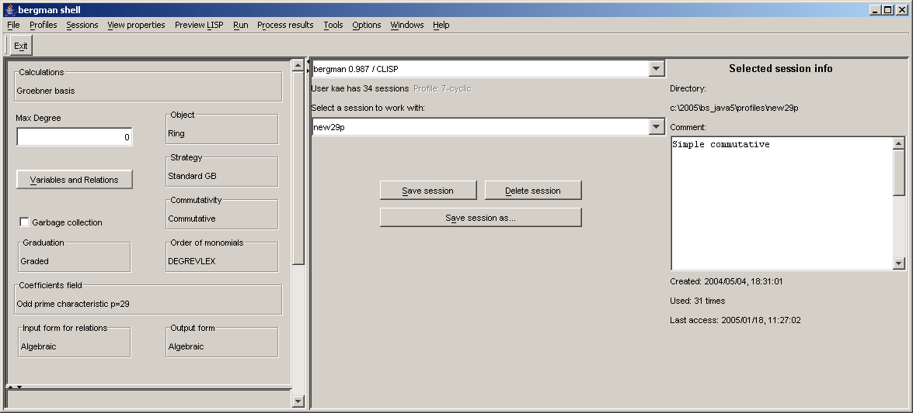
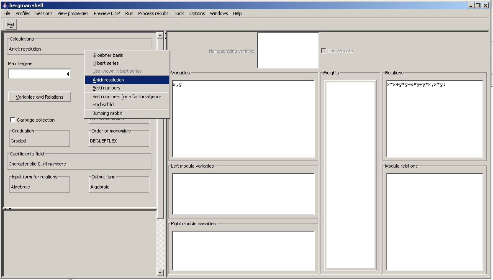
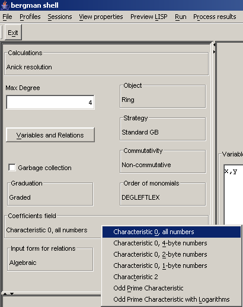
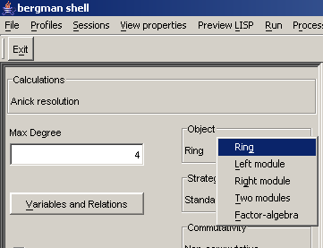

Mathematical Computations Using Bergman
Jörgen Backelin, Svetlana Cojocaru, Victor Ufnarovski
ISBN:91-631-7203-8
Mathematics
Centre for Mathematical Sciences
Lund University
Box118, SE-221 00 Lund, Sweden
http:/www.maths.lth.se/
© 1999, 2000, 2002, 2004, 2005 by J.Backelin, S.Cojocaru, V.Ufnarovski
Contents
1 A brief bergman tutorial
1.1 Preliminaries
1.1.1 Starting a bergman session
1.1.2 Ending a bergman session
1.1.3 What you need to know about Lisp syntax
1.2 Simplest calculations in bergman
1.2.1 Selecting alternatives
1.2.2 Commutative algebras
1.2.3 Non-commutative algebras
1.2.4 Normal form and reduction
1.2.5 Starting a new calculation
2 Computations in bergman
2.1 Introduction
2.2 Bergman: philosophy and approach
2.3 Bergman: main restrictions
2.4 The polynomial ring set up
2.4.1 Variable names and the flag raise
2.4.2 Ordering
2.4.3 Using eliminating ordering
2.4.4 Coefficients: background
2.4.5 Coefficients: choices
2.4.6 Weights handling
2.4.7 Rings exchange
2.5 Homogenisation
2.6 Choosing a strategy
2.7 Input-output modes for the polynomials
2.7.1 Commutative case
2.7.2 Non-commutative case
2.8 Calculating and using series
2.8.1 Hilbert series computation
2.8.2 Computation of Gröbner basis using known
Hilbert series
2.9 The jumping rabbit
2.10 Some bricks to build your own procedures
2.11 Modules over non-commutative algebras
2.11.1 Gröbner basis for modules over
non-commutative algebras
2.11.2 Hilbert series for modules over
non-commutative algebras
2.11.3 The Anick resolution and Betti numbers for the tri -vi -al module
2.11.4 Writing own procedures
2.11.5 The Anick resolution and Betti numbers for a right module
2.11.6 The Anick resolution and Betti numbers for right, two-sided ideals, and factor-algebras, considered as right modules
2.11.7 Working with the left modules
2.11.8 Betti numbers for two modules
2.11.9 Calculating Hochschild homology of an algebra
2.12 Bergman under Reduce
2.12.1 Working in the Reduce syntax
2.12.2 Parametric coefficients
2.13 Debugging in bergman
2.14 Customising bergman
2.15 Computations in bergman under shell
2.15.1 Problems of interface to bergman
2.15.2 Shell overview
2.15.3 Shell description
3 Bergman for the advanced user
3.1 References
3.1.1 Mode handling
3.1.2 Sustained operating mode alternatives
3.1.3 The mode designator tree structure
3.1.4 The mode handling procedures
3.2 Monomials and polynomials in bergman
3.3 Controlling the calculations process
3.4 The commutative Hilbert series procedures
3.5 User available flags
3.6 User available counters
4 Some useful appendixes
4.1 Bergman proceedings extending
Standard Lisp
4.1.1 Introduction
4.1.2 Fast variant Standard Lisp extensions
4.1.3 General Standard Lisp extensions
4.2 Formal description of bergman
4.2.1 Organisation of the programme source files
4.2.2 Overview of the (main) units and source files
4.2.3 Basic structures and naming conventions
4.2.4 Global structures and programme outline
4.3 Mathematical background
Index
Chapter 1
A brief bergman tutorial
"If easy of use was the only valid criterion
people would stick to tricycles and never
try bicycles".
D.Engelbart
1.1 Preliminaries
Bergman is a system for computations in commutative and purely
non-commutative
algebra. It is mainly developed by Jörgen Backelin (Stockholm University).
Some additional facilities are implemented in the
framework of a
joint project "Non-commutative computer algebra"
executed by the Department of Mathematics at the Stockholm
University in collaboration with the Lund University and
the Institute of Mathematics and Computer Science of the Academy of Science of
Moldova in Chisinau. The project is supported by the Royal Swedish Academy of
Sciences which is
gratefully acknowledged.
We would like to express our sincere gratitude to the
first project leader and a faithful bergman user Prof. Jan-Erik Roos.
We also thank other people participated the project since its beginning:
Alexander Podoplelov who took part in the developing of Anick resolution
component, Sergey Verlan who took part in the elaboration of the Common Lisp
version.
Our colleagues Alexander Colesnicov and Ludmila Malahova are working on the
project starting with 1994. They have drawn up the Common Lisp version, the
bergman site and programmed two versions of shell:
the first one under MS DOS
and the current one in Java. Section 2.15 in this book is written together
with them.
Bergman is public domain software available from the following address
http://servus.math.su.se/bergman. It is written in Standard Lisp, the Lisp dialect
underlying Reduce implementation. An alternative Common Lisp
version is also supported for some platforms.
In principle, bergman can be used on all platforms where
Reduce, PSL, or CLISP are implemented.
We have implemented it on:
- MS Windows 95 and later (CLISP);
- Linux on different machines (PSL, Reduce, CLISP);
- Sun Solaris for Sparc and Sun Blade (PSL, Reduce, CLISP);
- Dec Alpha under OSF and Linux (PSL, Reduce).
For detailed information about different versions of operating
systems and Reduce or Lisp releases, see the installation guide.
Bergman is far from a full computer algebra system. However, it
may be run under Reduce and in the commutative setting be treated as any
Reduce module.
Using bergman one can compute both for ideals and right modules:
- Gröbner basis
- Hilbert series
- Poincaré series
- Anick resolution
- Betti numbers
The last three features are destined to the graded non-commutative computations only.
One can find the description of bergman, including a demo version on
its home page.
Of course, the demo version offers only limited possibilities, but you
can try to solve your own problems.
Here we describe a version of bergman, installed under Reduce,
and working
in the Standard Lisp environment. In this installation the user can
use both Reduce and Lisp syntax. Nevertheless most of the text is
valid for other installations too. The Reduce-oriented syntax
will be discussed in section 2.12.
For those who is unfamiliar with the Gröbner basis concept we refer to 4.3
for an elementary introduction in the subject.
1.1.1 Starting a bergman session
You can start a
bergman session by typing
bergman followed by Enter.
When you are successful in starting the bergman session you will
see a prompt.
If the installation was under Reduce, the prompt (after some possible
messages about memory and version) may look like:
4:
Now you maybe want to switch to the
Lisp-mode. (If you prefer to work
in the
Reduce-mode read section 2.12 instead.) For this you simply type
end; and then press Return key. You will see a new Lisp-prompt:
Entering LISP ...
Bergman 0.984, 14-Dec-2004
1 lisp>
(If your installation was without Reduce you are here from the very beginning).
Of course, the date and the version can be different - it depends
from the date
when bergman was compiled on your computer.
Typically bergman will print a prompt such as
4 lisp >
at the beginning of the line you should enter. Whenever you
see a prompt, bergman is waiting for you to enter new
commands.
The Common Lisp version starts directly:
i i i i i i i ooooo o ooooooo ooooo ooooo
I I I I I I I 8 8 8 8 8 o 8 8
I \ `+' / I 8 8 8 8 8 8
\ `-+-' / 8 8 8 ooooo 8oooo
`-__|__-' 8 8 8 8 8
| 8 o 8 8 o 8 8
------+------ ooooo 8oooooo ooo8ooo ooooo 8
Copyright(c) Bruno Haible,Michael Stoll 1992, 1993
Copyright(c) Bruno Haible,Marcus Daniels 1994-1997
Copyright(c) Bruno Haible,Pierpaolo Bernardi,Sam Steingold 1998
Copyright(c) Bruno Haible,Sam Steingold 1999
Welcome to the BERGMAN system.
[1]>
Now you are ready for computations: [1] > is the input prompt.
Lately we will not distinguish PSL and Common Lisp version and will use
the word Lisp for both of them.
1.1.2 Ending a bergman session
The command
(quit) followed by the Return key, ends
a bergman session.
Example. Here you finish the session.
10 lisp > (quit)
In Reduce syntax you omit the parenthesis but add a semicolon, thus:
10: quit;
An alternative solution on some platforms is to use Ctrl-D; holding down the Ctrl-key
while pushing one or several times on key "D" will make quit. This
may work in Reduce syntax, too.
1.1.3 What you need to know about Lisp syntax
The user should realise that bergman is a Lisp program and whenever (s)he
starts bergman (s)he works under Lisp and in the Lisp notations. Here
we
describe
the necessary minimum of Lisp syntax to deal with bergman in the simplest
cases.
First of all, all commands should be written within parenthesis -
see Example above.
It is important that uppercase and lowercase may be different in Lisp.
One can use, for instance, only lowercase. Nevertheless in some situations,
arising from
mistakes, you leave bergman, but still need to leave Lisp. In this case
(quit) not necessary ends the session
and you need to use
(QUIT) to do this.
In the later version of Reduce the situation is opposite: you are able
to use lowercase, but uppercase produces errors. Conclusion: try
both in troubles!
Note also that a typical mistake is to forget one of the right parenthesis or
quotes (" ). So maybe a couple of them might be useful to leave
Lisp safely.
During the session you can get some kind of messages from Lisp.
All of them start with stars. The message that starts from five stars
***** means an error. Three stars *** mean a minor error or
only a warning -
it is possible to continue the work.
Example. Here we forget to write the parenthesis.
2 lisp > simple
***** `simple' is an unbound ID
3 lisp >
1.2 Simplest calculations in bergman
Here we describe and explain
several examples that you can easily copy and modify.
The simplest way to employ bergman is to start it, to use some
specially written routines
such as
simple or
ncpbhgroebner, to
feed it input interactively or by means of an input file prepared in
advance, and to quit.
In a slightly more sophisticated use, you may
influence the behavior by various "mode changing" procedures.
In very sophisticated use, you may employ and expand the
experimental procedures enclosed to the program, and/or interact
directly with the underlying Lisp representations of the algebraic
objects.
You also have access to all source code and can use all procedures
to implement your own applications.
This chapter covers the first use. For more
sophisticated use guidance see the next chapters.
1.2.1 Selecting alternatives
Bergman works in different modes. You can find a full overview of these
in 3.1.
To perform some computations in bergman it is necessary at least
to set up the polynomial ring selecting commutative or non-commutative
alternative,
ordering
(degrevlexify or
deglexify),
coefficients field
(characteristic
0, 2 or arbitrary prime),
weights of variables etc.
For the first examples we skip the complete description of alternatives
using the corresponding setting included in the main top level procedures.
We shall distinguish here only commutative and non-commutative calculations.
1.2.2 Commutative algebras
Let us start with an example of
Gröbner
basis computation for an ideal.
It will be performed by the procedure
simple. There are several
ways to call this procedure explained below.
Here we illustrate two of them.
Calling simple without arguments one can introduce the relations
directly from the screen following the prompt and respecting one
restriction: the relations must be homogeneous. An example of
the session follows:
1 lisp> (simple)
Now input in-variables and ideal generators in
algebraic form, thus:
vars v1, ..., vn;
r1, ..., rm;
where v1, ..., vn are the variables,
and r1, ..., rm the generators.
algebraic form input> vars x,y;x^2-y^2,x*y;
% 2
x*y,
x^2-y^2,
% 3
y^3,
Done
- All is OK (I hope). Now you may (e. g.):
- kill bergman with (QUIT); or
- interrupt bergman with ^Z; or
- clear the memory with (CLEARIDEAL),
and run a new (SIMPLE).
nil
2 lisp>
The result contains three elements of Gröbner basis : xy, x2−y2, y3.
Note that, according to the order of variables, x (the first in the list)
is highest, so xx, xy and yyy are highest monomials.
Thus, only the monomials 1, x, y, yy are normal (not divisible by the
highest monomials) and serve as a basis of our algebra. Its
dimension is equal to 4 and we can easily create a multiplication table too.
(All elements of the Gröbner basis are equal to zero in the
quotient algebra, so we can
use their highest terms for the reduction of non-normal words).
For example, x ·x=yy, y ·x=0, y ·yy=0.
As was said above,
simple may be called in several ways. One
of them is to perform input and output by means of files.
Let us prepare the following one (suppose that its name is "test1.a".
Check its existence in the directory bergman/tests and copy it
into your current directory):
(algforminput)
vars x,y;
x*x−y*y, x*y;
The first line informs bergman that the succeeding lines are
input data in the
algebraic form. It means that you need to write
multiplication symbol * or powers for example
x^2 or x**2 instead of
x*x but not xx
(the same conventions as in Reduce or Maple). The other possibility is
Lisp-form;
read about them in the subsection 2.7.
The next two lines are the input data themselves. The first one contains variables, they should be
written between keyword
vars and semicolon. Then comes the
defining relations,
separated by commas and finished by semicolon.
To start the calculation select the name for output file, for example
"test1.bg"
(it should not
exists!), start bergman, switch to the Lisp
mode and write
(simple "test1.a" "test1.bg")
(do not forget double quotes!) and then quit.
The following is the full session of our work.
1 lisp> (simple "test1.a" "test.bg")
t
- All is OK (I hope). Now you may (e. g.):
- kill bergman with (QUIT); or
- interrupt bergman with ^Z; or
- clear the memory with (CLEARIDEAL),
and run a new (SIMPLE).
nil
2 lisp> (quit)
Quitting
Here is the resulting file "test1.bg", containing Gröbner basis
% 2
x*y,
x^2-y^2,
% 3
y^3,
Done
1.2.3 Non-commutative algebras
The procedure
simple may be used to perform
non-commutative
Gröbner basis computations also.
Bergman by default is in commutative mode, so,
first of all we need to turn it to non-commutative calculations.
Here is an example of the session:
2 lisp> (noncommify)
nil
3 lisp> (simple)
Now input in-variables and ideal generators in
algebraic form, thus:
vars v1, ..., vn;
r1, ..., rm;
where v1, ..., vn are the variables,
and r1, ..., rm the generators.
algebraic form input> vars x,y;x^2-y^2,x*y;
% 2
x*y,
-y^2+x^2,
% 3
x^3,
y*x^2,
Done
- All is OK (I hope). Now you may (e. g.):
- kill bergman with (QUIT); or
- interrupt bergman with ^Z; or
- clear the memory with (CLEARIDEAL),
and run a new (SIMPLE).
nil
4 lisp>
Although variables and generators look the same as in the commutative case, we have, of course, different output of
Gröbner basis.
According to the order of variables, y (the last in the list -
opposite to the defaults in the commutative case)
is the highest, so xy, yy, xxx and yxx are the highest monomials.
Thus only monomials 1, x, y, xx, yx are normal (do not contain the highest
monomials as subwords) and serve as a basis of our algebra. Its
dimension is equal to 5 and we can easily create a multiplication table too.
(All elements of the Gröbner basis are equal to zero in algebra, thus
we can
use their highest terms for the reduction of non-normal words).
For example, x ·x=xx, y ·y=xx, x ·xx=0.
In the non-commutative case the homogeneity restriction also must be
respected (excepting "the jumping rabbit" strategy, see 2.9).
The input can be performed also by means of a file.
Let us prepare the following one (suppose that its name is "test2.a".
Check its existence in the directory bergman/tests and copy it
into your current directory):
(noncommify)
(setmaxdeg 10)
(algforminput)
vars x,y;
x*x−y*y,x*y;
The first line switches bergman to the non-commutative mode.
The second line is not necessary in this example. It restricts
calculations up to degree 10. Here calculations stops in degree 3
(as you will see later), but in general
Gröbner basis might be
infinite so it is recommended to restrict the degree of calculations
(although bergman will try to do them until the memory doesn't suffice).
The third line informs bergman that the following are the input data in the
algebraic form. It means that you need to write multiplication
symbol * or powers, for example x^2 or
x**2 instead of x*x, but not xx
(the same as in Reduce or Maple). Another possibility is
Lisp-form; read about it in the section 2.7.
The next two lines are input data themselves. The first contains variables, they should be
written between keyword
vars and semicolon. Then the
generators are listed,
separated by commas and finished by a semicolon.
To start the calculation select the name for output file,
for example "test2.bg" (it should not
exist!), for example "test2.bg", start bergman, switch to the Lisp
mode and write
(simple "test2.a" "test2.bg")
(do not forget double quotes!) and then quit.
The following is the full session of our work.
1 lisp> (simple "test2.a" "test2.bg")
nil
nil
t
- All is OK (I hope). Now you may (e. g.):
- kill bergman with (QUIT); or
- interrupt bergman with ^Z; or
- clear the memory with (CLEARIDEAL),
and run a new (SIMPLE).
nil
2 lisp>
The file test2.bg contains the corresponding
Gröbner basis:
% 2
x*y,
-y^2+x^2,
% 3
x^3,
y*x^2,
Done
Summing up our knowledges about the procedure simple we can describe
it now in a more formal way.
Simple can be applied both in the commutative and noncommutative
case. By default bergman works in the commutative mode. To
turn off commutativity one need to call
(noncommify)
To return to the commutative case one should call
(commify)
Simple is called as a procedure with 0, 1, or 2 file names as
arguments (file names being given
in the explicit form.) If you give no argument, the procedure assumes
that you want to give input on-line in "algebraic form" (see the section
2.7) and prompts
you for this. If you give arguments, and the first one is the
name of an existing file, this is read, and it is assumed that it
(inter alia) contains the input (in one or another form). If file
does not exist, the procedure works as if there were 0 names. Note,
that if input file contains (noncommify) or (commify),
the procedure
will work in the corresponding mode (and save it after returning).
If there
is a second argument, the output is put there. However, if there is
an existing file with this name, it is NOT overwritten and the
procedure informs you about its existence and finishs its work
without doing something else.
There exists a related procedure stagsimple
which
works similarly, but it uses a different algorithm of calculations, namely
the Staggered linear basis
Algorithm With Substance (SAWS). It thus may only be used in the
commutative case. It takes 0, 1, 2, or 3 arguments; the last two
are for output of the SAWS. deduced Gröbner basis and for the
reduced Gröbner basis, respectively. In some cases it works
more efficient than simple.
In the next example we use another procedure, working with
non-commutative algebras only and calculating besides the Gröbner basis
of the algebra the Hilbert and
Poincaré series for the corresponding monomial algebra (see 4.3).
There is no screen input, we should use files only.
We can use the same test2.a
for input and test2.bg for output (supposing that the output file
does not exist. If there is such file in your current directory remove
or rename it) and want to get two new files: test2.hs for
the
Hilbert series and test2.pb for the Poincaré series.
The procedure has
the name
ncpbhgroebner (from NonCommutative Poincaré-Betti and
Hilbert series)
and it always
has 4 parameters. Here is a session (messages can be different):
1 lisp>(ncpbhgroebner "test2.a""test2.bg""test2.pb""test2.hs")
*** I turn on noncommutativity
nil
10
nil
*** Function `degreeenddisplay' has been redefined
% No. of Spolynomials calculated until degree 2: 0
% No. of ReducePol(0) demanded until degree 2: 0
% Time: 425
% No. of Spolynomials calculated until degree 3: 2
% No. of ReducePol(0) demanded until degree 3: 0
% Time: 646
% No. of Spolynomials calculated until degree 4: 8
% No. of ReducePol(0) demanded until degree 4: 5
% Time: 833
*** Function `degreeenddisplay' has been redefined
nil
2 lisp>
The file "test2.hs" for
Hilbert series looks now as:
+2*z^2
+0*z^3
+0*z^4
(note that the known from the very beginning
part 1+2*z is absent here),
and the file "test2.pb" for the monomial
Poincaré series looks as:
+t^2*(2*z^2)
+t^3*(2*z^2+2*z^3)
+t^4*(6*z^3+2*z^4)
and also does not contain the first terms 1+t*(2*z).
Note also that neither series contains terms in degree more
than 4 - the last degree where bergman have done some calculations.
Look to the section 2.8.1 if you need more terms.
The file "test2.bg" is the same as "test2.bg" in the
example with simple:
% 2
x*y,
-y^2+x^2,
% 3
x^3,
y*x^2,
Done
Now we give a formal description of this procedure.
Ncpbhgroebner
always takes 4 arguments, which should
evaluate to file names.
The first file is the input file (which must exist).
The second one will be the Gröbner basis output file. It must not
exist before the call to ncpbhgroebner.
On the third and fourth files the double
Poincaré-Betti series and
the
Hilbert series of the associated monomial ring
will be output.
Existing files are overwritten. The output will be done degree by
degree, whence you may read partial results while the calculations
continue (and interrupt the calculations without losing the lower
degree results). Note that the ring and its associated monomial
ring have the same Hilbert series, while the double Poincaré-Betti
series only fulfill a termwise inequality; due to the existence of
a certain spectral sequence, the coefficients in the Poincaré-Betti series
of the associated ring can never be less than the corresponding
coefficients for the `true' ring.
A related procedure is ncpbh.
The only difference
with the previous one consists in the absence of output file for the Gröbner basis.
So, the computations are the same, but it takes only 3 arguments.
1.2.4 Normal form and reduction
The main idea to use Gröbner basis is to have a possibility to reduce
a given
element u to its normal form. Bergman suggests
a simple procedure named
readtonormalform which interactively
asks an input for a desired polynomial and prints its normal form -
the result of the reduction. Let us consider a small example.
Suppose that we want to check if two elements a3 and b3 commute
in the non-commutative algebra A= < a,b|2a2−3b2 > .
The way to do it is the following:
A) Calculate Gröbner basis:
2 lisp> (noncommify)
nil
3 lisp> (simple)
Now input in-variables and ideal generators in
algebraic form, thus:
vars v1, ..., vn;
r1, ..., rm;
where v1, ..., vn are the variables,
and r1, ..., rm the generators.
algebraic form input> vars a,b; 2*a^2-3*b^2;
SetupGlobals
... done
+t^2*(z^2)
% 2
-3*b^2+2*a^2,
+t^3*(z^2+z^3)
% 3
-b*a^2+a^2*b,
+t^4*(z^3+z^4)
Done
- All is OK (I hope). Now you may (e. g.):
- kill bergman with (QUIT); or
- interrupt bergman with ^Z; or
- clear the memory with (CLEARIDEAL),
and run a new (SIMPLE).
nil
4 lisp>
B) Check the commutator a3*b3−b3*a3:
4 lisp> (readtonormalform)
algebraic form input> a^3*b^3-b^3*a^3;
is reduced to
2/3*(-a^4*b*a+a^5*b),
nil
We see that the result (the normal form of the commutator) is nonzero,
so, the elements are not commuting. Moreover, we know exactly how
far from zero the commutator is. The same computation
with a4 and b2 gives us a different result:
5 lisp> (readtonormalform)
algebraic form input> a^4*b^2-b^2*a^4;
is reduced to
0,
and we can conclude that those elements are commuting. More generally,
the procedure readtonormalform can be used for the equality
test: u=v in our factor-algebra if and only if their difference
is reduced to zero.
To be able to use the normal form in his own programs one can apply the
following procedures:
-
(readpol l), which reads the list l of
polynomials from the
input, separated by the semicolons,
-
(writepol l), which prints them on the screen,
-
(reducepol a b), which reduces the
polynomial a to the
(printable) polynomial b,
-
(printqpols b), which prints (printable) polynomial.
Note the difference between inner form of the polynomial, which normally is
unprintable and external, printable form.
1.2.5 Starting a new calculation
We hope that your first experiments with bergman were successful and
following the prompt after calculations you can:
- kill bergman with (quit); or
- interrupt bergman with ^Z ; or
- clear the memory with (clearideal), and run a new (simple).
Presuming you would like to run a new computation
let us explain more carefully what the function
clearideal is doing.
According to its name it does not clear all that was done before, but
only clear memory from the ideal generators and results of the previous
calculations.
You always should call this function before starting a new cycle of
the calculations. The only exclusion is when you want to add some
new elements to the already calculated Gröbner basis or use the
Gröbner basis for reduction, but for doing this kind of
stuff you should be a professional. So, once again, in this chapter:
before the calling at the second time one of the top-of-the-top
procedures, such
as simple, ncpbhgroebner always call clearideal
(or clearring, see below.)
You need not do it from the very beginning, but you need to know
what it really clears. It clears:
- initial ideal generators,
- calculated Gröbner basis,
- all the memory, used for the calculations.
It saves:
- all selected modes (see section 2.4), including
list of input variables.
You can use this possibility: do not introduce the same set of variables,
skipping vars ...
Example. Several computations in the same polynomial ring with
different ideals.
1 lisp> (simple)
Now input in-variables and ideal generators
in algebraic form, thus:
vars v1, ..., vn;
r1, ..., rm;
where v1, ..., vn are the variables,
and r1, ..., rm the generators.
algebraic form input> vars x,y,z;
algebraic form input> x^3, x^2*y-y^2*x, z^2*x, x^2*z-y^2*z;
% 3
x*z^2,
x^2*z-y^2*z,
x^2*y-x*y^2,
x^3,
% 4
y^2*z^2,
y^3*z,
x*y^2*z,
x*y^3,
Done
- All is OK (I hope). Now you may (e. g.):
- kill bergman with (QUIT); or
- interrupt bergman with ^Z; or
- clear the memory with (CLEARIDEAL),
and run a new (SIMPLE).
nil
2 lisp> (clearideal)
nil
3 lisp> (simple)
Now input in-variables and ideal generators
in algebraic form, thus:
vars v1, ..., vn;
r1, ..., rm;
where v1, ..., vn are the variables,
and r1, ..., rm the generators.
algebraic form input> y*z^2-z^3, x^2*z-y*z^2, x*y*z;
% 3
y*z^2-z^3,
x*y*z,
x^2*z-z^3,
% 4
z^4,
x*z^3,
Done
- All is OK (I hope). Now you may (e. g.):
- kill bergman with (QUIT); or
- interrupt bergman with ^Z; or
- clear the memory with (CLEARIDEAL),
and run a new (SIMPLE).
nil
4 lisp>
A more powerful function is
clearring which clears also the
list of input and output variables and their weights. Depending how you plan
to continue calculations you can select one of the clearing functions.
Note that both of them do not clear all the selected alternatives,
a part of settings being kept even after their applying.
One can see how to avoid troubles caused by this situation reading the section 2.13.
Chapter 2
Computations in bergman
2.1 Introduction
In this section we suppose that the user is already familiar with
bergman and is able to start and use it in the simplest cases.
The aim of this section is to explain more detailed how to use
bergman and to present all its facilities.
2.2 Bergman: philosophy and approach
The philosophy of bergman is to give the user a possibility
to use Bergman's Diamond Lemma with a maximum flexibility.
It means that bergman is mainly a powerful instrument for
calculating Gröbner basis in several situations: commutative and
non-commutative algebras, modules over them.
Besides that it provides some facilities to calculate
appropriate invariants of the algebras and modules:
Poincaré and Hilbert series, Anick's resolution and
Betti numbers.
The aim is maximum efficiency with few
restrictions. Note however the homogeneity setting. The user need not
care how long the coefficients might be if (s)he wants to work
over rationals, but should also have a possibility
to work over prime characteristic or to include
indeterminates as coefficients.
Nevertheless bergman is not a full computer algebra system.
Rather it is a box,
containing several useful routines, so it takes
some efforts from the user to find them here and to use them
in a correct way. Additional problems might appear
because of the Lisp-oriented form of the procedures. But
this box is not black: the user can read, modify the procedures
and create its own. Moreover, (s)he can use them together
with Reduce, so from this point of view, bergman
can be considered as a Reduce package. (You can read
more about this in section 2.12).
The purpose of this chapter is to explain bergman as if it is a
black box, describing all its main (unmodified) procedures.
2.3 Bergman: main restrictions
Bergman has two main restrictions.
First, it is not a
separate program and cannot be used without some underlying Lisp, like
PSL or CLISP (or Reduce,
which contains PSL). The second and important one, mentioned
above, is homogeneity.
All input to the simple top level procedures
(excepting rabbit, see 2.9) must be
homogeneous (e.g. by the natural grading, where each variable has degree
one). They do not automatically check homogeneity. The possibility to
use weighted variables extends the class of problems which
can be solved by bergman: the degree function need not be a natural
("standard") grading.
There are some experimental procedures which under some restrictions test for
homogeneity, homogenise input, and dehomogenise output; see the
subsection 2.5 below.
In the commutative case homogeneity is not the principal restriction.
It is not so difficult to homogenise relations to obtain the
same, in principal, result. But for the non-commutative algebras
this restriction is essential and this is the price for the efficiency.
Unfortunately, it means that it is impossible to use bergman
for the homological investigations of the groups or most of the finite dimension
nontrivial idempotents. Nevertheless, using the rabbit strategy it is possible
to calculate their Gröbner bases.
Note also that bergman has no routines for the polynomial
factorisation. So, the applications of bergman to the solutions
of the nonlinear systems of equations are sufficiently restricted.
2.4 The polynomial ring set up
To perform some computations in bergman you should set up the
polynomial ring and its environment. This action includes
selection of the algebra type (commutative
or
non-commutative),
the variables, the
ordering, the
type of coefficients, and variable
weights. One can also select the strategy of computation,
and input-output mode. There are some minor mode selections too. For a
complete description see section 3.1. This section contains an
informal explanation of the most important components in the ring
definition.
2.4.1 Variable names and the flag raise
We start from the variables - generators of our algebras (modules).
Their names may be specified
to almost any valid Lisp identifiers. (Some special signs, like * and
, should not be used unslashified in the identifier names.)
So, not only usual letters such as x,Y may be used, but also
x1,Y45 or even I_kiss_you_a_1000_times can be used as a variable.
But do not try x[1] or Y(2) as names!
In any place you may have a look to your current list of variables using
(getinvars).
Here is a possible example.
6 lisp> (getinvars)
(x y z)
One important question is if the names "y" and "Y" represent the same
variable. The answer depends on the current value of the flag
raise. If it is in the state OFF, they are different, otherwise
(if it is in the state ON) "y"="Y".
The meaning of this flag is to translate all the letters to
capitals (or the oppsite case in the later versions).
Next come several important notes, concerning this flag:
- From the very beginning the value of this flag is ON. That is
why you can write (SIMPLE) instead of (simple)
- You may influence whether or not reading of variables and generators
is case sensitive mode. Typing
(setcasesensalgin t)
you establish the case sensitive mode of algebraic input and by
(setcasesensalgin nil)
the mode is switched to no-case sensitivity.
- Most the procedures, available to user have
been written in source files using capital names. The procedures, intended
to be unavailable to the normal user have been written with the names
containing both small and capital letters,
such as SecretProcedure. They will be unavailable because by the default
flag raise is ON.
In the later versions of Reduce and LISP
the situation is more complicated. Because flag raise works in the opposite direction now (decapitalizing instead of capitalizing),
all the procedures written in capitals would be unavailable too. That is why
in those versions a special converter is used to interchange lowercase and capital characters. So, for example, even if in the source files
the procedure is written as (SIMPLE) it will have the name
(simple) inside the bergman and will be available independent of the flag raise. The unpleasant effect of this is that such procedures
as SecretProcedure can appears as sECRETpROCEDURE
or even as s!E!C!R!E!Tp!R!O!C!E!D!U!R!E, but this ugly names we can see in the case of errors only (when the user is able to recover easy the original name the SecretProcedure).
More exactly, some procedures may turn OFF the flag raise while they
are working. If a break loop (for example because of mistake)
happens during their work the value of the flag will be OFF
and, for example, you will be unable to quit from the program
writing
(QUIT)
because in this case the name should be decapitalized:
(quit)
Another way to quit is
(on raise)
(QUIT)
- If the user wants (e.g. for the debugging) to have access inside the bergman to
the procedures and variables with the names, containing both small and capital letters,
such as SecretProcedure (s)he needs to switch the flag raise OFF
and use the names, where secret letters (capital in last version and lowercase in the older versions) are printed after
exclamations: b!A!D. Even the multiplication in some versions
is secret and looks as !*.
But normally you don't need take care about this.
In the commutative setting bergman can perform computations in two different orderings:
lexicographical (DEGLEX) or reverse lexicographical ordering
(DEGREVLEX, which is the default choice). Both of them are graded,
it means that first we compare length (or weights) of words and only
after
that use the lexicographical comparison. For example, if x > y > z is
our ordered alphabet, then we have
|
1 < z < y < x < zz < yz < yy < xz < xy < xx < . . . |
|
in the commutative DEGLEX computation and
|
1 < z < y < x < zz < yz < xz < yy < xy < xx < . . . |
|
in the commutative DEGREVLEX computation.
By default the DEGLEX ordering is chosen in the non-commutative bergman
computation. Keeping the same ordered alphabet with x > y > z we have
|
1 < z < y < x < zz < zy < zx < yz < yy < yx < xz < xy < xx < zzz . . . |
|
Besides that there exist two eliminating orderings in the non-commutative mode:
ELIMLEFTLEX and INVELIMLEFTLEX.
In the first one the words are compared first as commutative words in
DEGLEX. If they are equal as commutative words they are compared
as in noncommutative DEGLEX
.
Keeping the same ordered alphabet with x > y > z we have
|
1 < z < y < x < zz < yz < zy < yy < xz < zx < xy < yx < xx < zzz . . . |
|
In the INVELIMLEFTLEX the first comparison is as commutative DEGREVLEX,
and if the words are equal as the commutative words they are compared
as in noncommutative DEGLEX
.
So the order will be:
|
1 < z < y < x < zz < yz < zy < xz < zx < yy < xy < yx < xx < zzz . . . |
|
It is important for the Gröbner basis calculations which of the variables is the
highest (largest). The rule is determined by the order of the variables,
written after vars in one of the top-of-the-top
procedures and is as follows:
- in the non-commutative DEGLEX mode the last variable is always the highest;
- in the commutative mode and both eliminating orderings first variable is the highest.
The following procedures set the corresponding orderings.
| Ordering | Procedure |
| DEGREVLEX |
REVLEXIFY() |
| DEGLEX |
DEGLEXIFY() |
| (commutaive case) |
|
DEGLEFTLEXIFY() |
| (noncommutaive case) |
| ELIMLEFTLEX |
ELIMORDER() |
| INVELIMLEFTLEX |
INVELIMORDER() |
Note that the procedure deglexify works only in the
commutative mode, in the noncommutaive case DEGLEX ordering
is established by the procedure degleftlexify.
2.4.3 Using eliminating ordering
Despite the fact that bergman works with graded algebras only,
it can be successfully applied to the non-graded case. The idea is to
homogenize the
ideal (using an additional commuting homogenizing variable h) and to
perform calculations
in the eliminating ordering and then dehomogenize the result setting h=1.
Let us consider an example suggested by Prof. I.Kantor.
Let A be the following algebra:
|
A = < r,l,q| r2−q2+lr−r,rq−qr+lq−q,lr−rl,lq+ql−2q,rr−rl−2lr+2l2−r+l > |
|
It was important to find the minimal polynomial for q.
Here is the solution achieved by bergman:
2 lisp> (noncommify)
nil
3 lisp> (elimorder)
nil
4 lisp> (simple)
Now input in-variables and ideal generators
in algebraic form, thus:
vars v1, ..., vn;
r1, ..., rm;
where v1, ..., vn are the variables,
and r1, ..., rm the generators.
algebraic form input> vars r,l,q,h;
algebraic form input> r*r-q*q+l*r-r*h,r*q-q*r+l*q-q*h,
algebraic form input> l*r-r*l,l*q+q*l-2*q*h,
algebraic form input> r*r-r*l-2*l*r+2*l*l-r*h+l*h,
algebraic form input> r*h-h*r,q*h-h*q,l*h-h*l;
% 2
-h*q+q*h,
-h*l+l*h,
q*l+l*q-2*q*h,
-h*r+r*h,
-q*r+r*q+l*q-q*h,
-4*r*l+2*l^2+l*h+q^2,
4*l*r-2*l^2-l*h-q^2,
4*r^2-4*r*h+2*l^2+l*h-3*q^2,
% 3
4*r*q*h-4*l^2*q+10*l*q*h-q^3-9*q*h^2,
4*r*q^2+12*l^3-10*l*q^2-3*l*h^2-3*q^2*h,
% 4
l*q^3-3*l*q*h^2-q^3*h+3*q*h^3,
-12*l^3*h-4*l^2*q^2+20*l*q^2*h+3*l*h^3-q^4-6*q^2*h^2,
-4*l^3*q+12*l^2*q*h-11*l*q*h^2+3*q*h^3,
12*l^4-8*l^2*q^2-3*l^2*h^2-2*l*q^2*h+q^4,
% 5
-48*l^2*q*h^2+96*l*q*h^3-q^5+10*q^3*h^2-57*q*h^4,
% 6
-48*l^2*q^2*h^2+96*l*q^2*h^3-q^6+10*q^4*h^2-57*q^2*h^4,
% 7
-q^7+13*q^5*h^2-39*q^3*h^4+27*q*h^6,
If we look at the last element of the obtained Gröbner basis and
put h=1 we get the desired equation:
The secret is in the command elimorder: now if two words are compared,
they are compared first as the commutative words in pure left lexicographical
ordering and after that (if commutatively they are equal) as usual. That is
why if the minimal polynomial exists its homogenized variant should belong to
the Gröbner basis: if the leading monomial is qn all other terms
should contain the letters h and q only, h being in the end because it
commutes with q. To obtain the minimal polynomial for l it is sufficient
to put l before the homogenizing variable (which should remain the last)
in the list of the variables, e.g. vars r,q,l,h;
2.4.4 Coefficients: background
Coefficients handling is an important part of
bergman. Mathematically, the ring of coefficients should be a field K,
the
coefficient field. In basic bergman, this field must be a
prime field; i.e., either the field Q of rational numbers, or the
Galois field Z/ (p) of residue classes of integers with respect to
a prime number p. The
characteristic of Q is 0, and
the characteristic of Z/ (p) is p, so that the prime field is
completely determined by its characteristic.
If you run bergman under
Reduce in commutative mode,
then you have further possibilities, as it is described in the next
subsection. In order to employ these, it is necessary to understand
the way bergman treats coefficients.
In order to simplify the internal representation and thus make
coefficient calculations faster, bergman tries to avoid fractions in
coefficients, whenever feasible. This is done by means of the
coefficient domain, associated polynomials, and gcd calculations.
The
coefficient domain A should be a
sub-domain of the coefficient field K, such that its field of fractions
is K. (Here domain signifies integral domain, i.e., unitary
commutative ring without non-trivial zero-divisors.) In the basic
coefficient modes, A is the smallest possible sub-domain of K,
so that A = Z
= the ring of integers in characteristic 0, but
A = K = Z/ (p) in positive characteristic.
Recall that if f = f(x1,…,xn) and g = g(x1,…,xn) are
elements in R = K [ x1,…,xn], then f and g are
associated polynomials if g = uf for some non-zero
u ∈ K. (Then clearly f = u−1g; and more generally, `associatedness'
is an equivalence relation on R.) Since K is the field of fractions
of A, each f ∈ R has associated polynomials with all their
coefficients in A. We may e.g. write all coefficients of f as
fractions of elements in A, and let u be the product of all the
denominators; then clearly uf ∈ A [ x1,…,xn].
However, normally this is far from efficient. The
coefficients in this uf often are extremely large (or complex).
For A = Z, this may be avoided by factoring out the
content of uf, i.e., the greatest common divisor of all the
coefficients. Thus we get a new associated polynomial, hopefully with
reasonably complex coefficients.
If gi is associated to fi for i = 1, …, r, then f1,…,fr and g1, …, gr generate the same ideal in R. Hence, if
K = Q and
all we want is to calculate a Gröbner basis, then we may always replace any
appearing polynomial by an associated polynomial in Z[x1,…,xn ] of content 1. In practice, it is more efficient
to make such replacements dynamically during the calculation of normal
forms. This is the default content taking strategy of bergman.
There are some situations when such tactics
does
not work, as when we
want to calculate Anick resolutions. For these cases bergman also has a procedure
normalform for calculating the true normal form of a polynomial.
2.4.5 Coefficients: choices
To select a
coefficient field (and a
coefficient domain) you call
(setmodulus p) where either p is the desired
characteristic (0 or
a prime number), or p is sf (from "(Reduce) Standard Forms").
By default and after the call of (setmodulus 0), the coefficient field
is the field Q of rational numbers, and the coefficient domain is
the ring Z of integers. This means that all input coefficients
and most internal and output coefficients are considered as integers. There are
no restrictions for the length of the integers - only the restrictions of the
memory of your own computer. Nevertheless, when you are sure from the
very beginning that your coefficients (even inside the calculations)
never will be too large (e.g. if the relations have a semigroup form:
f−g, where f and g are words) you can try to achieve more
efficiency using the flag
nobignum - see
the subsection 3.5 for more details.
However, if you want to perform series calculations, you should also
decide whether or not the series coefficients may exceed the `small
integer limit' of your Lisp implementation, before turning on
nobignums.
You cannot use fractions in the input and do not ordinarily get them as output.
Another minor mode choice affecting the characteristic zero (and the sf)
coefficient mode is the dense or sparse content taking.
After the call setmodulus p, where p is a prime number, the
coefficient field and the coefficient domain both are Z/ (p) = GF(p),
the unique field with p elements.
Note that in the prime characteristic the highest term of any
polynomial in the Gröbner basis has
always the coefficient 1 (in contrast to the zero characteristic case).
In odd prime characteristic with a reasonably small p, bergman employs
efficient `small number calculations' only with the coefficients. If you
need to optimise coefficient handling further, please note the
following. With some hardware and software architectures, multiplication
is a much more time consuming operation than are (single) additions and
multiplications. In such cases, you should consider employing the
modulus logarithms method .
Mathematically speaking, it works by finding a generator γ for the
cyclic multiplicative group of non-zero elements in Z/(p), and by
representing such elements by their "γ-logaritms" (i.e.,
representing a = γs by s), whenever convenient.
The main effect of using the `modular logaritms mode'
in typical bergman Gröbner basis calculations is that in the most time
consuming combined coefficient operation, of the type
one multiplication and one addition is replaced by two additions and
one `logaritm table lookup operation', represented by finding an item
in a Lisp vector (array). In addition, one Lisp remainder operation is
replaced by one comparison and (in average) a half subtraction. The
net effect is to replace one multiplication and one remainder operation
by one addition, a half subtraction, one comparison and one `look-up'.
The draw-back is that bergman must construct or to read the `logarithm
table' and the inverse `exponential table' into memory.
If you want to employ this, do
(setoddprimesmoduli modlogarithmic)
before you do the setmodulus p for your odd
prime p.
When you do this, bergman may or may not succeed in finding a prepared
file for the look-up tables; and if it doesn't find the file, it
may or it may not succeed in creating the tables. In the present
version, it is depending on being able to create the tables file, if
this doesn't exist. Thus, you may run into troubles, e.g. if you do
not have write access to the directory for modular logarithm tables
handling. Some ways of overcoming this are discussed in the
next chapter.
You need not this mode in characteristic 2 or 0, and should avoid
it (possibly loosing a bit in time efficiency) if you want to save
memory. By default, modular logarithms are off.
In addition to the few efficient basic coefficient modes available in bergman,
there is a possibility to set up `your own' coefficient field and domain
in an ordinary Reduce way. In this case, bergman calls Reduce for each
coefficient operation. The domain elements are represented as Standard
Forms, and the field elements as Standard Quotients. Similarly, the
general Reduce Greatest Common Divisor procedure is employed for taking
contents. Any reduction rules for calculating in Reduce are active,
including Reduce modulus setting, but with the following exception:
At input from Reduce, the variables specified as bergman in-variables
are treated by bergman variable handling procedures.
In order to employ this, the user should have a good understanding
both of the mathematics and of Reduce. It is entirely her/his
responsibility to ensure that indeed the given in-coefficients reside
in a mathematically well-defined field, with respect to the given
Reduce rules.
Example: In order to calculate with coefficients in the field
GF(169)(a) (where a is transcendent over GF(169)), you may note
that GF(169) may be realised as a quadratic extension of its
prime field GF(13), e.g., by means of √2. Thus, you might try
algebraic;
setmod 13;
on modular;
b^2 := 2;
and then go on as usual, employing the i+j*b (i,j ∈ {0,1,…,12}) as representatives for the elements in GF(169).
2.4.6 Weights handling
There are possibilities to handle some non-naturally graded
situations, i.e., situations where not all variables have degree 1.
Then the
weights, i.e., the degrees of the variables, may be set
to arbitrary positive integers. (Thus weight 0 is not allowed.)
The degree of a monomial then will be calculated as the sum of the
weights of its variable factors.
The natural grading corresponds to giving each variable weight 1.
However, using the weighted variables mode could yield considerably
slower calculations than using the natural grading mode. Thus weights
should be set only if some of them deviate from 1.
Restrictions: For computational efficiency reasons, all degrees
appearing during calculations are assumed to be "inums", i.e., small
enough to fit into the small numbers representation of your computer.
In the naturally graded situation, this is hardly ever a practical
limitation; but if you give rather high weights to some variables,
you could get into some trouble.
There are moreover some inconsistencies in the variable ordering in
this version of bergman. Also, series calculation and the Anick
resolution implementation are not yet
compatible with the weighted variables mode.
The weight list contains the weights of variable 1, 2, 3, ... , in
this order.
There are several procedures for weights handling in bergman.
(setweights int1 int2 ... intn)
Sets the weights to int1, ... , intn. The
inti
must be positive
integers. No weights given restores the naturally graded mode.
(clearweights)
Restores the naturally graded mode. Returns the old weight list.
(getweights)
Returns the current weight list.
(printweights)
If weights are set, print these (with spaces between but without
parentheses or line feeds) and return T. Else, print nothing and
return NIL.
Example of a Gröbner basis computation in a non-naturally graded
situation:
1 lisp> (setweights 2 2 1)
nil
2 lisp> (getweights)
(2 2 1)
3 lisp> (simple)
Now input in-variables and ideal generators
in algebraic form, thus:
vars v1, ..., vn;
r1, ..., rm;
where v1, ..., vn are the variables,
and r1, ..., rm the generators.
algebraic form input> vars x,y,z;
algebraic form input> x^3, x*z-y*z;
% 3
x*z-y*z,
% 6
x^3,
% 7
y^3*z,
Done
- All is OK (I hope). Now you may (e. g.):
- kill bergman with (QUIT); or
- interrupt bergman with ^Z; or
- clear the memory with (CLEARIDEAL),
and run a new (SIMPLE).
nil
4 lisp>
2.4.7 Rings exchange
Normally bergman works with one fixed ring only. For some applications
the user would like to have the access to several different
rings (e.g. to compare two different normal forms of the same element).
For this purpose in bergman exists a stack of rings. Because only one ring
is formally available, it is possible to save the current ring in this stack,
perform the computations in a new ring and then restore the old ring from
the stack.
Here is the list of available procedures:
(pushring) saves the current ring on the top of the stack;
(popring) takes the ring from the top of the stack and
makes it current;
(switchring) makes rings exchange: the top ring from the stack
becomes a current and the current one becomes a top;
(ringstacklength) gives the length of the stack.
Here is an example of the session where we calculate the normal form of
x2 in two different commutative rings:
1 lisp> (simple)
Now input in-variables and ideal generators
in algebraic form, thus:
vars v1, ..., vn;
r1, ..., rm;
where v1, ..., vn are the variables,
and r1, ..., rm the generators.
algebraic form input> vars x,y;x^2-y^2;
% 2
x^2-y^2,
Done
- All is OK (I hope). Now you may (e. g.):
- kill bergman with (QUIT); or
- interrupt bergman with ^Z; or
- clear the memory with (CLEARIDEAL), and run a new (SIMPLE).
nil
2 lisp> (readtonormalform)
algebraic form input> x^2;
is reduced to
y^2,
nil
3 lisp> (pushring)
1
4 lisp> (clearideal)
5 lisp> (simple)
Now input in-variables and ideal generators
in algebraic form, thus:
vars v1, ..., vn;
r1, ..., rm;
where v1, ..., vn are the variables,
and r1, ..., rm the generators.
algebraic form input> vars x,y;x^2;
% 2
x^2,
Done
- All is OK (I hope). Now you may (e. g.):
- kill bergman with (QUIT); or
- interrupt bergman with ^Z; or
- clear the memory with (CLEARIDEAL), and run a new (SIMPLE).
nil
6 lisp> (readtonormalform)
algebraic form input> x^2;
is reduced to
0,
nil
7 lisp> (switchring)
t
8 lisp> (readtonormalform)
algebraic form input> x^2;
is reduced to
y^2,
nil
9 lisp> (popring)
1
10 lisp> (readtonormalform)
algebraic form input> x^2;
is reduced to
0,
nil
2.5 Homogenisation
Suppose we would like to find a minimal polynomial for
α = √2+√3+√5, i.e. such a polynomial
p(x)
with the
integer coefficients that p(α)=0.
One possible way to do it is to find a
Gröbner basis for the following ring:
|
A= < x,y,z,t| xx−2,yy−3,zz−5, t−x−y−z > |
|
The important thing is the choice of ordering. We want to get the element that
contains the variable t only - it would be desired minimal polynomial. So
the variable t should be the lowest, for example x > y > z > t. Even more -
any power of t should be less than any monomial, containing any variable
different from t. It means that we need pure lexicographical ordering.
In such an ordering (for example pure revlex) we should have the following
Gröbner basis:t8 − 40t6 + 352t4 − 960t2 + 576,576z − 5t7 + 194t5 − 1520t3 + 2544t, 96y + t7 − 37t5 + 244t3 − 360t, 576x − t7 + 28t5 + 56t3 − 960t.
How to get from the bergman such a result? The problem is that bergman uses
homogeneous relations only. The solution is to homogenize the relations, using
a new variable (say f):
|
B= < x,y,z,t,f| x*x−2*f*f,y*y−3*f*f,z*z−5*f*f, t−x−y−z > |
|
It means that every monomial that had less degree than highest one (constants
in our case) was completed by corresponding number of factor f. The
relations are now homogeneous and we can calculate the Gröbner basis in
the corresponding ordering. Let us see the session:
1 lisp> (purelexify)
nil
3 lisp> (setalgoutmode alg)
nil
4 lisp> (algforminput)
algebraic form input> vars x,y,z,t;
algebraic form input> x^2-2, y^2-3, z^2-5, t-x-y-z;
t
5 lisp> (homogeniseinput)
*** Function `h!O!M!O!Gpm!O!N' has been redefined
nil
6 lisp> (groebnerinit)
nil
7 lisp> (groebnerkernel)
d!O!N!E
8 lisp> (algforminput)
algebraic form input> vars x,y,z,t,f;
algebraic form input> ;
nil
9 lisp> (bigoutput)
-x-y-z+t,
z^2-5*f^2,
2*y*z-2*y*t-2*z*t+t^2+6*f^2,
y^2-3*f^2,
2*y*f^2-3*z*t^2+6*z*f^2+t^3+4*t*f^2,
y*t^2-7*z*t^2+12*z*f^2+2*t^3+12*t*f^2,
4*z*t^3-t^4-20*t^2*f^2+24*f^4,
-80*z*t^2*f^2+96*z*f^4-t^5+60*t^3*f^2+24*t*f^4,
96*z*t*f^4-t^6+40*t^4*f^2-376*t^2*f^4+480*f^6,
576*z*f^6-5*t^7+194*t^5*f^2-1520*t^3*f^4+2544*t*f^6,
-t^8+40*t^6*f^2-352*t^4*f^4+960*t^2*f^6-576*f^8,
nil
10 lisp> (quit)
The reader can find some useful comments about the procedures used here
in the section 2.10. Note that we used algforminput twice.
The second one is necessary to create an (external) name for the homogenizing variable, otherwise printing of Gröbner basis is impossible. The ordering used here
gives not exactly the same result as pure lexicographical ordering, but
because t,f were the lowest variables we obtained our minimal polynomial.
2.6 Choosing a strategy
One of the important mode choice that should be mentioned is selecting
the
strategy of the calculations. Besides selecting of the
algorithm (Buchberger, staggered or "the jumping rabbit" (see 2.9))
that you are doing by appropriate procedure, you have
some influence on the intermediate calculation. Choosing
(setimmediatefullreduction t)
(and this is default) you demand immediate reduction of all the terms
of Gröbner basis and obtain it in the reduced form.
Sometimes it might be
more efficient to switch OFF this flag. The obtained Gröbner basis may be
not reduced, but calculations might be slightly faster. There is no
clear receipts when it happens - try yourself!
2.7 Input-output modes for the polynomials
There are three basic
output formats, named
lisp (default),
alg (synonim - Maple), and
macaulay, corresponding to the formats, used in those 3 languages.
The first two of these also are acceptable
input formats.
In all input and output, the polynomials are distributed (written with
no parentheses). There is a difference between commutative and
non-commutative case.
2.7.1 Commutative case
The (output) alg representation of the polynomial is
|
c1*v1^m11* . . . *vn^m1n+ . . .+ cr*v1^mr1* . . . *vn^mrn . |
|
Here v1, . . ., vn stand for the variable names, mij
for the exponents,
and ci for the coefficients. Highest terms will be printed first.
Occurrences of *vi^0 and of ^1 are omitted.
+ is omitted before −.
The macaulay representation is similar, but without * and ^; and the
polynomials then are not separated by commata.
In input, some slight variation is allowed in the alg format:
- ** may be used instead of ^;
- Blank space may be inserted everywhere, except within identifiers
or integers or between two successive ** .
- Exponents 0 and 1 may occur.
- The order of the variables in a monomial is arbitrary.
The lisp representation of the same commutative polynomial in n variables is a
Lisp list of length n+1 lists of integers:
|
((c1 m11 . . . m1n) . . .(cr mr1 . . . mrn)) |
|
where the CAR of the i:th list is the coefficient of the i:th monomial,
and the other n integers (which should be non-negative) are the
exponents. Highest terms will be printed first in the output.
2.7.2 Non-commutative case
If you want to have output in alg or
macaulay form,
you must define in one or another way the variable names, and you must
set the the output mode to alg or macaulay using the function
variable
setalgoutmode with corresponding arguments alg or macaulay.
The variable names are most
easily given by vars within a algforminput, as explained below.
Moreover, many of the top-of-the-top bergman's procedures use algebraic
output mode as default.
You may add your own algebraic output mode options by means
of
addalgoutmode, as explained below.
One can inspect the current mode by
getalgoutmode.
In order to perform alg mode input, write
(algforminput)
vars v1, ...,vn;
pol1, ... , pols;
where v1, ..., vn are the variable names and pol1, ..., pols are
polynomials on alg form.
In order to perform
lisp mode input, write
(lispforminput)
pol1 pol2 ..... pols
(lispforminputend)
where pol1, ..., pols are polynomials on lisp form. If you must specify
the number of variables to a number n (as in the non-commutative case,
if you want to know the Hilbert series), then set embdim to n.
(embdim
is short for "the embedding dimension".)
Lisp form (homogeneous) polynomial of
degree d is a list of lists of integers of length d+1:
|
((c1 m11 . . . m1d) . . . (cr mr1 . . . mrd)) |
|
where the CAR of the i:th list is the coefficient of the i:th monomial,
and the other n integers (which should be positive) are the
"indices"
of the variables, i. e., their position if they are ordered by increasing
significance. The corresponding alg format is
|
c1*vm11* . . .*vm1d+ . . . +cr*vmr1* . . .*vmrd . |
|
In input, identical factors may be collected to exponents.
For example, if
the variables are x,y, and z (in this order), then the
lisp form
polynomial ((5 1 1 1 3 2 2)) will be
alg form output as
5*x*x*x*z*y*y,
but it may optionally be input as 5*x**3*z*y^2.
Highest terms will be printed first in the output.
To perform output in the desired form apply setalgoutmode with the corresponding
argument (alg, macaulay or lisp.)
Comments:
- Both algforminput parts, i. e., the input variable setting and the
polynomial listing, are optional. You may thus give lisp form input,
but perform algforminput vars v1,...,vn; ; (NOTE the double ;),
in order to enable alg or macaulay output. Of course, if you try
to print polynomials when the variables are not set, you are in
trouble.
- New successful (and non-empty) polynomial inputs replace old ones.
Likewise, new successful input variable settings replace old ones.
Running groebnerkernel
(successfully)
or
clearideal
kills the input
polynomials, but not the variable settings.
- The implementation of algforminput depends on specific PSL features,
since the pure Standard Lisp has poor alternative scanning abilities.
If algforminput should be disabled in some other
implementation, and if
you still wish to use algebraic output modes, then you must define
the variable names in another way, using the internal
representations. In bergman 0.9* and the next versions, the output variable settings
performed by
vars x,y,z;
in the commutative case corresponds to
(setq O!u!tV!a!r!s (quote (!x !y !z)))
and in the non-commutative case corresponds to
(setq O!u!tV!a!r!s (quote ((1 . !x) (2 . !y) (3 . !z)))) .
2.8 Calculating and using series
2.8.1 Hilbert series computation
There is a simple way to calculate the
Hilbert
series in
non-commutative case: using the top level procedure
ncpbhgroebner. The
previous chapter
contains all the explanations concerning its calling,
arguments and results. The only problem is that the Hilbert series computation is stopped
in the degree where the computation of the corresponding Gröbner
basis was finished.
If you want to get the next power series coefficients you may continue computation and call two procedures:
(calctolimit degree)
(tdegreehseriesout degree)
Let us see an example. The file "test.a" should be the input file:
(setmaxdeg 10)
(setalgoutmode alg)
(algforminput)
vars x,y;
x*x-2*y*y;
Here is the corresponding session:
1 lisp>(ncpbhgroebner "test.a" "test.gb" "test.pb" "test.hs")
*** I turn on noncommutativity
nil
alg
t
*** Function `!O!L!D!D!E!D' has been redefined
*** Function `degreeenddisplay' has been redefined
%ufn malencie bucvi seichas 'degreeenddisplay'
% No. of Spolynomials calculated until degree 2: 0
% No. of ReducePol(0) demanded until degree 2: 0
% Time: 238
% No. of Spolynomials calculated until degree 3: 1
% No. of ReducePol(0) demanded until degree 3: 0
% Time: 289
% No. of Spolynomials calculated until degree 4: 2
% No. of ReducePol(0) demanded until degree 4: 0
% Time: 323
*** Function `degreeenddisplay' has been redefined
NIL
2 lisp> (calctolimit(getmaxdeg))
+t^5*(z^4+z^5)
+t^6*(z^5+z^6)
+t^7*(z^6+z^7)
+t^8*(z^7+z^8)
+t^9*(z^8+z^9)
+t^10*(z^9+z^10)
NIL
3 lisp> (tdegreehseriesout(getmaxdeg))
+6*z^5
+7*z^6
+8*z^7
+9*z^8
+10*z^9
+11*z^10
11
4 lisp>
The resulting files are:
test.gb:
% 2
-2*y^2+x^2,
% 3
-y*x^2+x^2*y,
test.pbs:
+t^2*(z^2)
+t^3*(z^2+z^3)
+t^4*(z^3+z^4)
test.hs:
+3*z^2
+4*z^3
+5*z^4
As you can see, all calculations by ncpbhgroebner
are done up to the degree 4 - the last degree
in which the Gröbner basis were done (though without generating a new element).
Calling
(calctolimit (getmaxdeg))
we obtain the continuation of Poincaré-Betti series and by
(tdegreehseriesout (getmaxdeg))
the next terms of Hilbert series are displayed (but not saved in the file!)
If you prefer the interactive input/output you can operate in the same
manner with
the procedure
simple as it is illustrated in the
following example:
1 lisp> (noncommify)
NIL
2 lisp> (setmaxdeg 10)
10
3 lisp> (simple)
Now input in-variables and ideal generators
in algebraic form, thus:
vars v1, ..., vn;
r1, ..., rm;
where v1, ..., vn are the variables,
and r1, ..., rm the generators.
algebraic form (noncomm.) input> vars x,y;
algebraic form (noncomm.) input> x*x-2*y*y;
+t^2*(z^2)
% 2
-2*y^2+x^2,
+t^3*(z^2+z^3)
% 3
-y*x^2+x^2*y,
+t^4*(z^3+z^4)
Done
- All is OK (I hope). Now you may (e. g.):
- kill bergman with (QUIT); or
- interrupt bergman with ^Z; or
- clear the memory with (CLEARIDEAL),
and run a new (SIMPLE).
NIL
4 lisp> (calctolimit(getmaxdeg))
+t^5*(z^4+z^5)
+t^6*(z^5+z^6)
+t^7*(z^6+z^7)
+t^8*(z^7+z^8)
+t^9*(z^8+z^9)
+t^10*(z^9+z^10)
NIL
5 lisp> (tdegreehseriesout(getmaxdeg))
+3*z^2
+4*z^3
+5*z^4
+6*z^5
+7*z^6
+8*z^7
+9*z^8
+10*z^9
+11*z^10
11
6 lisp>
There are two ways
to compute Hilbert series in the commutative case.
The easy one (hilbert) we consider at the end of this section.
The more complicated one will be useful to consider if the reader wants
to understand how bergman is organized internally. For this method
it is necessary to
involve
several procedures. First of all,
it is necessary to input the ring ideal variables and
generators calling algforminput and following its prompt (if it
was not done before).
You can start Gröbner basis calculation by means of two
procedures:
groebnerinit and
groebnerkernel.
Now the system is ready
to compute Hilbert series.
There are two main uses for the Hilbert series facilities: stand alone
and within the Hilbert series
interrupt strategy minor mode. The
interrupt strategy is very efficient and more sophisticated, you can
find its explanation below (see sections 2.8.2,3.4).
Let us
deal here with the
first case. You may get the Hilbert series
as a rational expression
or with
the power series coefficient for some specified t degree(s).
The calculation is performed by procedure
calcrathilbertseries.
To see the result you should note that the global variables
hilbertnumerator and
hilbertdenominator represent a calculated
|
p(t)/(1−t)q = (antn + an−1tn−1 + . . . +a0)/(1−t)q |
|
by (the Lisp items) ((n . an) (n−1 . an−1) ... (0 . a0)) and q,
respectively.
To display the power series coefficients one may use the procedure
tdegreehseriesout giving the degree as argument.
Here is an example of Hilbert series computation.
1 lisp> (algforminput)
algebraic form input> vars x,y; x^3, x*y^2-x^2*y;
t
2 lisp> (groebnerinit)
SetupGlobals
... done
nil
3 lisp> (groebnerkernel)
d!O!N!E
4 lisp> (calcrathilbertseries)
nil
5 lisp> (setq p hilbertnumerator)
((4 . -1) (3 . -1) (2 . 1) (1 . 1) (0 . 1))
6 lisp> (setq q hilbertdenominator)
1
7 lisp> (tdegreehseriesout 1)
2
8 lisp> (tdegreehseriesout 2)
3
9 lisp> (tdegreehseriesout 3)
2
10 lisp> (tdegreehseriesout 4)
1
11 lisp> (tdegreehseriesout 5)
1
12 lisp> (tdegreehseriesout 6)
1
13 lisp> (tdegreehseriesout 7)
1
15 lisp> (groebnerfinish)
The obtained result presented as a rational function is the following:
The sequence of
(tdegreehseriesout degree) displays the corresponding power series
coefficients representing the series:
|
1+2t+3t2+2t3+t4+t5+t6+t7+ . . . |
|
All the functions listed abowe are collected in the procedure
hilbert destined to
commutative Hilbert series computation reducing the manipulation to
its call only.
The previous example might be computed using this procedure:
1 lisp> (hilbert)
Input the maximal power series degree you want to calculate
1 lisp> 6
Now input in-variables and ideal generators
in algebraic form, thus:
vars v1, ..., vn;
r1, ..., rm;
where v1, ..., vn are the variables,
and r1, ..., rm the generators.
algebraic form input> vars x,y;
algebraic form input> x^3, x*y^2-x^2*y;
% 3
-x^2*y+x*y^2,
x^3,
% 4
x*y^3,
Hilbert series numerator: +1*t^0+1*t^1+1*t^2-1*t^3-1*t^4
Hilbert series denominator: 1-t
Hilbert power series: 1+2t^1+3t^2+2t^3+t^4+t^5+t^6+...
Done
In this example both rational and power series are displayed. To avoid the last one
it is necessary to input the maximal power series degree 0.
To perform the input from a file one should prepare it including the following lines:
(setmaxdeg 6)
(algforminput)
vars x,y;
x^3, x*y^2-x^2*y;
The corresponding call containing one input file and two
output files - for Gröbner basis and Hilbert series - looks like:
(hilbert ``input_file'' ``output_gb_file'' ``output_hs_file'')
2.8.2 Computation of Gröbner basis using known
Hilbert series
It rather often happens that we know (at least partly) the Hilbert
series before we start any computations. Bergman proposes an
efficient optimisation of the Gröbner basis calculations in those cases.
Here we
learn us how to translate our knowledge about the Hilbert
series to bergman. Let us consider a classical example.
Suppose that we want to calculate Gröbner basis of the following ideal
(the corresponding system of equations, when z=1, has a proper
name "6-cyclic roots system")
|
abcd+bcde+cdef+defa+efab+fabc, |
|
|
abcde+bcdef+cdefa+defab+efabc+fabcd, |
|
It is not so difficult to calculate Gröbner basis of this ideal - it takes (on our computer) about 7.72 sec. From the literature we can find that Hilbert series of the corresponding factor-ring is equal to
|
|
1 +4t+9t2+15t3+20t4+22t5+19t6+ 11t7+t8−7t9−10t10−12t11−10t12−5t13+2t15
(1−t)2
|
= |
|
|
1 +6t+20t2+49t3+98t4+169t5+ 259t6+ 360t7+ 462t8+ 557t9+ 642t10+ 715t11+ |
|
|
+778t12 +836t13+ 894t14+ 954t15+ 1014t16+ 1074t17+ 1134t18+ 1194t19+ . . . |
|
The following session shows how to calculate Gröbner basis in 3.3 sec - more than twice faster!
1 lisp> (setinterruptstrategy minhilblimits)
nil
2 lisp> (sethseriesminima 1 6 20 49 98 169 259 360 462 557 642
715 778 836 894 954 1014 1074 1134 1194)
t
3 lisp> (simple "sixroots" "sixroots.bg")
t
- All is OK (I hope). Now you may (e. g.):
- kill bergman with (QUIT); or
- interrupt bergman with ^Z; or
- clear the memory with (CLEARIDEAL),
and run a new (SIMPLE).
nil
4 lisp>
Now some comments. In the first line bergman is informed that
the strategy of the computations is changed - we want bergman to stop the calculations in the current degree d
when the desired coefficient of the Hilbert series is achieved (in this degree). The next line describes coefficients themselves.
The idea is evident - we cannot get more nontrivial elements in this degree d (otherwise Hilbert series will be less then it was prescribed). The responsibility of the user is clear too - if the restrictions would be above the real coeffitient (for example, if we, by mistake, write 269 instead of 259 in the example above) the result of computations may be absolutely wrong.
To avoid such a situation (for example, when we are not sure in the part of the coefficients) one can use nil instead of the numbers. This informs
bergman that the calculations in this degree goes "as usual".
Another even more efficient application of this technique is skipping the
Gröbner basis calculations in those degrees when they were preliminary done before. Suppose that after a 20 hours of calculations we get a Gröbner basis until degree 4 and saved it in a file. The next day we use this file
(after minor changes) as input file but do not want to repeat calculation in the
degree 4 or less. The solution is the line
(sethseriesminima skipcdeg skipcdeg skipcdeg skipcdeg skipcdeg)
(note that we used 5 skipcdegs, because the first degree is 0).
Don't forget to precede this line by (setinterruptstrategy minhilblimits).
There is another
(more advanced) way of doing it, employing a little Lisp programming
(and that if the degree is - say - 15 instead of 5, then indeed this
may be the point to start entering the more advanced phase). The
actual programming might look like
(sethseriesminimumdefault (cond ((lessp hsdeg 5) skipcdeg)))
or like
(sethseriesminima (default (cond ((lessp hsdeg 5) skipcdeg))))
The complete information about the possibilities of using the function
(sethseriesminima) the user should find in the section 3.4.
2.9 The jumping
rabbit
In this section we discuss the possibilities to perform
non-homogeneous calculations. Let A = < X|R > be an algebra we are
interesting in and suppose that not all of elements of R are
homogeneous. One possible way to get a Gröbner basis for A is to homogenize
all the relations using the additional variable t and to calculate a Gröbner basis
for another algebra B= < X,t|Rh,tx−xt, x ∈ X > , where Rh stands for the set of
homogenized relations. After dehomogenising the obtained Gröbner basis for B by
putting
t=1. Though it works theoretically with some orders, which
eliminates t, the problem is that even for the finite dimensional
algebra A a Gröbner basis for B is usually infinite. The reason
is that B is not the same algebra as C, which is obtained from A by
homogenizing all the relations of A (not only the defining relations!) That is why
a reduced Gröbner basis for B contains a lot of elements of the form utk,
where
u=0 in C but not in B. Therefore
after the dehomogenization
we get a Gröbner basis in A that is far from being reduced. Thus it is practically
impossible to use this approach for computing the Gröbner basis even
for finite dimensional algebras.
To solve this problem bergman suggests a special procedure rabbit
which starts from A, homogenizes the relations getting B and then
calculates a reduced Gröbner basis for C instead of B (more exactly, a part of
it until the given degree maxdeg).
The trick is to cancel all obtained elements of form utk
replacing them by u. This means that after finishing
calculations
in some degree m=degu and doing calculations in the degree m+k
we need to jump back to degree m and restart the calculations
beginning from this degree! That is why the program is named rabbit
and takes three parameters, which permit jumping to be organized
in a more or less regular manner. The parameters are startdeg, jumpstep and
maxdeg. So,
(rabbit startdeg jumpstep maxdeg) is a call of the procedure, which works as follows.
First it suggests to input generators and relations in usual manner starting from vars.
Second it homogenizes the input and starts to calculate a Gröbner basis degree after
degree. When the degree becomes equal to the startdeg it
prepares for jumping. It means that it collects all the elements of Gröbner basis
which can be canceled by the homogenizing variable. When jumpstep degrees mostly are
done the program checks if something was collected. If not, the next jumpstep
degrees should be done before the next checking. If yes, the canceling is performed and the
degree is reduced to the minimum degree of new obtained relations and the process continues
in the same manner. It stops when maxdeg is achieved or when no new
Gröbner basis elements can be obtained. In both cases the dehomogenization is
performed and the result is printed, but in the first case a warning that the Gröbner
basis may be wrong is displayed. Jumping during the process is always shown, but to
display the intermediate homogeneous relations the program has to be run in the debug mode.
In the following example a Gröbner basis for the algebra
A= < a,b,c|ab=c,bc=a,ca=b > is calculated:
2 lisp> (rabbit 2 2 8)
algebraic form input> vars a,b,c;a*b-c, b*c-a, c*a-b;
SetupGlobals
... done
RABBIT: Added step, Maxdegree=4
Jump number 1
RABBIT: Jump number 2
RABBIT: Jump number 3
RABBIT: Added step, Maxdegree=6
Jump number 4
GB is completely calculated
Rabbit have finished jumping. GB is
a*b-c,
b^2-a^2,
b*c-a,
c*a-b,
-c^2+a^2,
a^3-c*b,
-a^2*c+b*a,
b*a^2-a*c,
b*a*c-a*c*b,
-c*b*a+a*c*b,
nil
We see that the Gröbner basis is calculated completely and there are only 8
nonempty normal words: a,b,c,a2,ac,ba,cb,cba. One can conclude that
a semigroup with our defining relations is in fact the quaternion group
(because it has 8 elements and has those relations).
As a rule it is possible to apply rabbit with 0,1,2 or 3 parameters.
The last case (with 3 integer parameters) corresponds to the example below.
If no parameters are given, then the values of the "jumping variables" are set to 0,1 and 20 correspondingly. If there are 1 or 2 parameters they should be file names.
The first (or the only) one is the input file, the second is destined to output.
An input file may look like the following:
(setrabbit 2 2 8)
(algforminput)
vars a,b,c;
a*b-c, b*c-a, c*a-b;
where the first line sets the startdeg, jumpstep and maxdeg to 2,2 and 8 correspondingly applying the procedure
setrabbit.
2.10 Some bricks to build your own procedures
In this section we suppose that the user have already tried procedures, described above
and want to write his own, involving Gröbner bases
calculations. Bergman is an open system,
you have access to its source code, you can use each of its procedures as useful items in your own
applications. There is a three levels hierarchy of procedures:
- the top-of-the-top level,
- the top level,
- the level of internal using.
Simple and
ncpbhgroebner, for example, are top-of-the-top procedures, they
solve completely some concrete problems - to compute Gröbner basis and series.
But such procedures as algforminput, groebnerinit, groebnerkernel, groebnerfinish belong to the top level.
The extended list of the top level procedures you can find in Chapter 3.
Users are recommended to use the procedures from the first two levels, if they would like to see
how the last level looks like, they might read the source code.
Here we describe
several procedures that can help you to perform your own calculations. The reader is already
familiar with part of them and now we want to explain more carefully their functions.
The first thing that might be necessary is input. If the user wants algebraic
form of input (instead of Lisp form) then the procedure algforminput
should be used. You have see, above several examples of its using.
Algforminput scans the
succeeding input for variables list and/or polynomial list in algebraic form. If you type its call
on the screen you get its prompt:
algebraic form input>
and the system is waiting for the input list.
If you perform the input from a file, you should put in this file
the line: (algforminput) and vars... after that.
Gröbner basis calculations are organized in such a way that a user is able to include his
own operators inside them. For this purposes they are divided into 3 separate procedures:
- groebnerinit,
that initiates numerous internal variables. It should be called after selecting modes and
doing input.
- groebnerkernel.
Here the main calculations are performed.
The results of calculations are
saved in several variables and files (see section 4.2.4).
You can use them in your own procedures.
- groebnerfinish.
This procedure closes all files and restores variables and flags.
The user can include his code between those three procedures (see
section 2.8.1 as example of such the inclusion).
There exists another way which demands less knowledge in the
Lisp programming. The user has a possibility to have some minor influence
on computations or displaying the result using custstrategy or
custdisplay mode.
To do this simply write
(setcuststrategy t) or
(setcustdisplay t)
changing the corresponding mode
(see 3.1).
After that the user has a possibility to write (or, better to say, to rewrite)
several own procedures to change the strategy of the calculations or the
displaying of the result. We refer to the section 2.14 for complete list
of the procedures and here consider only one of them -
degreeenddisplay. This top level procedure will be
called immediately after the ending of the calculations in the current degree
and exactly here we should "explain" to the computer what
we would like to have as output.
Of course, the most natural way to do it is to take the existing template
procedure which looks as
(DE DEGREEENDDISPLAY ()
(PROGN
(DEGREEOUTPUT)
(TERPRI)
(PRIN2 "% No. of Spolynomials calculated until degree ")
(PRIN2 (GETCURRENTDEGREE)) (PRIN2 ": ")
(PRINT NOOFSPOLCALCS)
(PRIN2 "% Time: ") (PRINT (TIME))
))
If you have some difficulties to understand it (e.g. PRIN2 and TERPRI are some of the Lisp
printing procedures) you can find the explanation
using index at the end of the book. But maybe it will be easier
when you will see the example below.
Suppose, we want to print
the leading monomials instead of the
Gröbner basis elements. It is sufficient to replace the procedure
degreeprintout, which prints all Gröbner basis elements
by the existing procedure
degreelmoutput which prints the leading monomials only.
You can write it directly (or better in a separate file, suppose its name
is "mydisplay"):
(DE DEGREEENDDISPLAY ()
(PROGN
(DEGREELMOUTPUT)
(TERPRI)
(PRIN2 "% No. of Spolynomials calculated until degree ")
(PRIN2 (GETCURRENTDEGREE)) (PRIN2 ": ")
(PRINT NOOFSPOLCALCS)
(PRIN2 "% Time: ") (PRINT (TIME))
))
Now we do our usual calculations. We use dskin to skip copying the file.
1 lisp> (setcustdisplay t)
nil
2 lisp> (dskin "mydisplay")
*** Function `degreeenddisplay' has been redefined
degreeenddisplay
nil
3 lisp> (simple)
Now input in-variables and ideal generators
in algebraic form, thus:
vars v1, ..., vn;
r1, ..., rm;
where v1, ..., vn are the variables,
and r1, ..., rm the generators.
algebraic form input> vars x,y;x*x-y*y,x*y;
SetupGlobals
... done
% 2
x*y
x^2
% No. of Spolynomials calculated until degree 2: 0
% Time: 30
% 3
y^3
% No. of Spolynomials calculated until degree 3: 1
% Time: 30
Done
- All is OK (I hope). Now you may (e. g.):
- kill bergman with (QUIT); or
- interrupt bergman with ^Z; or
- clear the memory with (CLEARIDEAL), and run a new (SIMPLE).
nil
One can see we get the leading monomials only, as desired, time
and the number of S-polynomials.
2.11 Modules over non-commutative algebras
In the previous sections we have described how to work with the ring
(more exactly with the algebra over a field K)
both in the commutative and non-commutative cases. In this section we
restrict ourselves to
non-commutative algebras only and will study modules over such algebras,
and their homological properties.
Let A be a non-commutative algebra and M be a right module M over A.
Bergman does not consider the module M as a special structure.
Instead bergman works with a larger ring, that has as a generators set the
union of the generators for A and M and as the set of the relations the union
of the relations. This ring mathematically can be considered as the
A⊗T(M), where T(M) is the
tensor algebra
and the multiplication is given by
|
(a⊗m1…⊗mr)·(a′⊗n1…⊗ns) = a⊗m1…⊗mra′⊗n1…⊗ns. |
|
It is important to understand how to extract the information from this extended ring
to obtain the necessary results about the module M. We use mainly mathematics
and partly some programming tricks to do this.
But we still are working with the ring (though large). Nevertheless the computations
of the Anick resolution are different in different cases and the user will get the
warning about the changing mode from RING to MODULE, or TWOMODULES. All the
procedures we describe below do changes automatically and those modes are important
for Anick calculations only.
The structure of the section is the following. First we describe how to get
Gröbner basis and Hilbert series for modules. Then the Anick resolution will be
introduced and will be explained how to calculate Betti numbers for algebra
A (i.e. dimensions
B(i,j)=dimTorAi,j(K,K)
in homological degree i and degree j). Betti numbers can be printed in two
forms - ordinary B(i,j)=… and so-called Macaulay form, i.e.
in matrix form C, where C(k,l)=B(l,k+l). We do not loose any information because
B(i,j)=0 if j < i.
Using Anick resolution for the extended ring we will extract
Anick resolution and Betti numbers for the right module (i.e.
B(i,j)=dimTorAi,j(M,K)
and will show how to proceed with the right ideals, two-sided ideals,
factor-algebras (considered as right modules) and how to work with this
for left modules.
Then we consider the most general case
B(i,j)=dimTorAi,j(M,N). Since this employs the computer
resources maximally, it should not be
used in the previous cases (although of course this can be done).
At last we will show how to calculate the Hochschild homology of an algebra.
2.11.1 Gröbner basis for modules over
non-commutative algebras
To obtain a Gröbner basis for a right module M over a non-commutative algebra A
it is sufficient to calculate the Gröbner basis for the extended ring.
In other words, one needs to input the union of the set of variables and a set of
generators for M (considered as a right module)
and all algebra and module relations (in any order). What we get
is the set that is the union of two Gröbner bases - one for the algebra and one
for our module. To distinguish them we need only to check the presence of a module variables.
If an element contains a module variable (it should be on the first place if it was
a right module and on the last if it was a left module) then the element belongs to
the module Gröbner basis.
Let us consider an example. Suppose we want to calculate a Gröbner basis for the
right module M= < a,b|ax−by > over the algebra A= < x,y|x2−y2 > .
We can do it (after the switching to the non-commutative mode),
for example, with the help of the procedure simple
(note the order we used in variable names - we want x be larger than y and
a larger than b).
2 lisp> (noncommify)
nil
3 lisp> (simple)
Now input in-variables and ideal generators
in algebraic form, thus:
vars v1, ..., vn;
r1, ..., rm;
where v1, ..., vn are the variables,
and r1, ..., rm the generators.
algebraic form (noncomm.) input> vars y,x,b,a;x*x-y*y,a*x-b*y;
+t^2*(2*z^2)
% 2
x*x-y*y,
a*x-b*y,
+t^3*(2*z^2+2*z^3)
% 3
x*y*y-y*y*x,
a*y*y-b*y*x,
+t^4*(2*z^3+2*z^4)
Done
What we get are two Gröbner bases:
one for the algebra:
and another for the module:
Now we can construct a K−basis for M, which consists of the normal words,
containing a or b on the first place and only algebra variables after them, i.e.:
|
a,b; ay, bx,by; ayx,bxy,byx,byy; ayxy,bxyx, byxy, byyx,byyy;… |
|
and we can even calculate the Hilbert series:
|
HM(t)=2t+3t2+4t3+… = |
2t−t2
(1−t)2
|
. |
|
Unfortunately we do not get the correct Hilbert series if we will try to use
the procedure ncpbhgroebner - instead we get the Hilbert series for the
extended ring R. But knowing it and the Hilbert series for algebra A one
can obtain the Hilbert series for M using the formula
But if the user needs a Hilbert series he can apply a procedure that uses this formula
and is described in the following section.
2.11.2 Hilbert series for modules over
non-commutative algebras
It is possible to calculate both Gröbner basis and Hilbert series for
finitely-presented (right or left) modules.
Gröbner bases and Hilbert series computations for modules are
performed by the top level procedure
modulehseries.
It is necessary to input:
- the maximal degree of computation,
- the number of module variables,
- the list of the algebra and module variables,
(the algebra variables should be at the beginning of the list),
- the algebra relations (more exactly - ideal generators, because instead of the
relation ri=0 we input ri itself.)
- the module relations.
The input/output may be performed from the screen or by means of files.
Depending of
this the procedure call may contain 0, 2, 3 or 4 parameters.
Interactive input/output.
It is the simplest way to start the
computations. You should type only: (modulehseries)
In this case a dialogue is initiated. The user is asked to input:
- the maximal degree of computation,
- the number of module variables,
- the list of the algebra and module variables (the algebra
variables should be at the beginning of the list) and the ideal generators,
Receiving this data the Gröbner basis for ideal is calculated and user
is asked to input
Here is an example of computations over modules:
2 lisp> (modulehseries)
*** Function `modulehseries' has been redefined
*** We turn on noncommutativity
Input the Maximum Degree you want to calculate
2 lisp> 4
Input the number of module generators
2 lisp> 2
Now input ALL ring and module variables but ONLY
the ring ideal generators in algebraic form, thus:
vars v1, ..., vn;
r1, ..., rm;
where v1, ..., vn are all the variables,
and r1, ..., rm the generators.
algebraic form (noncomm.) input> vars x,y,a,b;
algebraic form (noncomm.) input> x*x-y*y, x*y;
+t^2*(2*z^2)
% 2
x*y,
-y^2+x^2,
+t^3*(2*z^2+2*z^3)
% 3
x^3,
y*x^2,
+t^4*(6*z^3+2*z^4)
+14*z^2
+48*z^3
+168*z^4
Now input ONLY the module relations,
thus: r1, ..., rm;
where r1, ..., rm are the module relations.
algebraic form (noncomm.) input> a*x-b*y;
+t^2*(3*z^2)
% 2
-b*y+a*x,
+t^3*(3*z^2+3*z^3)
% 3
b*x*x,
+t^4*(9*z^3+3*z^4)
Done
+13*z^2
+40*z^3
+127*z^4
Here is (1-H)^(-1) for the Hilbert series H of the module
+1
+2*t^1
+7*t^2
+22*t^3
+69*t^4
Here is the Hilbert series H of the module
+2*t^1
+3*t^2
+2*t^3
nil
3 lisp>
Input from a file - output on the screen
In this case you
should type
the procedure call with two parameters, which
are names of existing files.
(modulehseries < file1 > < file2 > )
The file < file1 > should contain:
- the maximal degree of computation defined by
(setmaxdeg degree)
- the number of module generators defined by
(setq nmodgen number)
- the procedure call to process the list of variables presented in
algebraic form:
(algforminput)
- the list of the algebra and module variables (the algebra variables
should be at the beginning of the list). To input them it is necessary to write
(without brackets!):
vars v1, ... , vn;
r1,...,rn;
where vi are the algebra and module variables, ri are the ideal
generators only. Note that the items are separated by commas and every list is ended
by semicolon.
Besides the above mentioned strings this file may contain flags and
variables setting etc. according to bergman common rules
explained above and in the next chapter.
The file < file2 > should contain:
- the procedure call to process the list of variables presented in algebraic form:
(algforminput)
- the module relations:
m1,...,mn;
The file "tesths1" is an example of < file1 > :
(setmaxdeg 16)
(setq nmodgen 2)
(algforminput)
vars z,y,x,b,a;
x*x, x*y+z*x;
and the file "tesths2" is an example of < file2 > :
(algforminput)
a*x*y-b*y*y+14*b*z*z,
a*z*z*z-b*x*z*y;
Errors messages.
If there was only one parameter in the
parameter list it yields the following message:
***It must be two input files.
Input data from keyboard
and the system will turn to the interactive input/output mode.
If some file name is not a name of an existing file it yields the following message:
***Input file must exist
Input data from keyboard
and the system will turn to the interactive input/output mode.
Input from the files - output to one or two files
In this case the procedure
call contains three or four parameters and looks like
(modulehseries < file1 > < file2 > < file3 > < file4 > )
The first two are input files and should respect all the rules
mentioned above.
The third parameter is a file to output Gröbner basis, the fourth is
destined for Hilbert series output. If the last parameter is absent only the Gröbner basis
will be printed in the file. Independently of the number of parameters, the resulted Gröbner
basis and Hilbert series always are displayed on the screen (in the two last cases the output is
performed simultaneously in files and on the screen). If the output file is one of the
existing it will be overwritten without some warning message.
Errors messages.
If the name of the third file is incorrect (it is not
a quoted string), it yields the following message:
***Incorrect output file.
Do you agree to use the file outf mgb as output?
Type Yes or No
and the system will be switched to waiting of input.
If your answer is Y (it means "Yes") the following message will be
displayed:
outf mgb is used as output file.
Don't forget to rename it after calculations!
and computing will continue using the file outf mgb as output file to print the
resulting Gröbner basis.
If your answer is N ("Not") the following message will be displayed:
No output file. Program is cancelled
and bergman will finish its work.
If the fourth parameter is incorrect an analogous dialogue appears proposing
to use the file outf mhs to output Hilbert series.
2.11.3 The Anick resolution and Betti numbers for the trivial module
The Anick resolution and
the Betti numbers for K as a trivial module
may be computed in the non-commutative
case. Resolution and Betti numbers for an arbitrary right module over
non-commutative ring are described in the subsection 2.11.5.
To perform the calculations it is necessary to apply the procedure
anick
It is necessary to input:
- the maximal degree of computation,
- the list of the algebra variables,
- the algebra relations.
The input/output may be performed from the screen or by means of files.
Depending of this the procedure call may contain 0, 1 or 2 parameters.
Interactive input/output
This is the simplest way to start the
computations. You should type only:
(anick)
In this case a dialog is initiated. The user is asked to input:
- the maximal degree of computation,
- the list of the ideal variables and relations.
Here is an example of computation:
2 lisp> (anick)
*** We turn on noncommutativity
Input the Maximum Degree you want to calculate
2 lisp> 4
Now input in-variables and ideal generators
in algebraic form, thus:
vars v1, ..., vn;
r1, ..., rm;
where v1, ..., vn are the variables,
and r1, ..., rm the generators.
algebraic form input> vars x,y; x*x+y*y+x*y+y*x;
The Anick resolution initialization...
B(1,1)=2
The Anick resolution initialization done.
+t^2*(z^2)
% 2
y^2+y*x+x*y+x^2,
Calculating the Anick resolution in degree 2...
B(1,1)=2
B(2,2)=1
0 1 2
+----------
0 | 1 2 1
1 | - -
end of Calculations.
+t^3*(z^3)
Calculating the Anick resolution in degree 3...
B(1,1)=2
B(2,2)=1
B(3,3)=1
0 1 2 3
+--------------
0 | 1 2 1 1
1 | - - -
2 | - -
end of Calculations.
Groebner basis is finite.
If you want to continue calculations until maximal degree
type (CALCULATEANICKRESOLUTIONTOLIMIT (GETMAXDEG))
nil
3 lisp> (calculateanickresolutiontolimit (getmaxdeg))
Calculating the Anick resolution in degree 4...
B(1,1)=2
B(2,2)=1
B(3,3)=1
B(4,4)=1
0 1 2 3 4
+------------------
0 | 1 2 1 1 1
1 | - - - -
2 | - - -
3 | - -
end of Calculations.
nil
4 lisp> (anickdisplay)
Printing the results ...
Printing is done.
nil
5 lisp> (quit)
The procedure prints in every degree new Gröbner basis elements
and all Betti numbers both in ordinary and Macaulay form. Sometimes
(when the Gröbner basis is finite) it finishes the calculations before
the desired maximal degree is achieved. To continue the calulations
the user can write the suggested line
(calculateanickresolutiontolimit (getmaxdeg))
(e.g. copying from the prompt). Of course the number (getmaxdeg)
may be replaced by another one.
All the intermediate results, if any, are printed on the terminal.
The procedure (anick) does not print the resolution itself, though calculates it.
To print the resolution and Betti numbers into a file one should use
the procedure
(anickdisplay).
It prints the outcoming resolution in
the file which name is assigned to the variable
anickresolutionoutputfile.
If no file name is assigned the
result by default will be printed in the file
andifres.txt.
Note that the assigment should be done before the call of (anick),
for example as
(setq anickresolutionoutputfile "resolution.txt")
Another important note is that this file is impossible to see before it will be closed.
In our example it was achieved simply by quitting bergman.
You can see the computed
resolution in the resulting file (andifres.txt by default)
in your current directory.
D(0, x)=1.x
D(0, y)=1.y
D(1, yy)=y.y+y.x+x.y+x.x
D(2, yyy)=yy.y+yy.x
D(3, yyyy)=yyy.y+yyy.x
B(1,1)=2
B(2,2)=1
B(3,3)=1
B(4,4)=1
0 1 2 3 4
+------------------
0 | 1 2 1 1 1
1 | - - - -
2 | - - -
3 | - -
D(1, yy)=y.y+y.x+x.y+x.x means that there exists the only 1-chain - yy and the
differential d1 acts as
|
d1: y2⊗1 → y⊗y+y⊗x+ x⊗y +x⊗x, |
|
thus the sign "." means the tensor product
(see more comments about the Anick resolution for example in [2],[23]).
To have a file input and screen output one
should type
(anick < file1 > )
The file < file1 > should contain:
- the maximal degree of computation defined by
(setmaxdeg degree). In fact this line may be omitted. In this case calculations
will finish when the Gröbner basis will be completely calculated or be
formally infinite (until there are enough resources).
- the procedure call to process the list of variables presented in
algebraic form:
(algforminput)
- the list of the algebra variables and the list of the algebra relations.
To input them it is necessary to write
(without brackets!):
vars v1, ... , vn;
r1,...,rn;
where vi are the algebra variables, ri are the algebra
relations. Note that the items are separated by commas and every list is ended
by semicolon.
The following file"anick" is an example of < file1 > :
(setmaxdeg 4)
(algforminput)
vars x,y,a,b;
x*x-y*y, a*x-b*y;
To have a file input and file output for Gröbner basis one
should type
(anick < file1 > < file2 > )
where < file2 > is an output file containing the corresponding
Gröbner basis. Note that output file does not contain results
related to the Anick resolution. For this purpose one should define before apply anick the corresponding output file by (setq anickresolutionoutputfile < file3 > ).
2.11.4 Writing own procedures
The procedures described above and later are sufficient to make different
type of calculations of Betti numbers. Nevertheless the user can find their
output inconvenient or insufficient. To give him a possibility to create
without problem his own procedure we will describe in this subsection how the
procedure anick is organized.
Inside this short procedure the reader can find the following important lines:
(setringobject) to switch to the RING mode,
(noncommify)
to switch to the
non-commutative mode and
(load anick)
to load the corresponding binary file.
Those lines are mandatory.
As usual, doing non-commutative computations it is recommended to
limit the process with some maximal degree. Thus
the next procedure could be:
(setmaxdeg degree)
Two following flags are switched on:
- (on calcbetti)
- turns on the Betti numbers
calculation mode. This flag is mandatory.
- (on onflybetti)
- informs the application to calculate Betti
numbers after each degree of Gröbner basis is operated out.
This allows to view Betti numbers degree by degree during the
Gröbner basis computations.
Both switches can be set on by the only procedure
(onflybetti value ), where value should have the value T to switch ON and NIL for OFF.
After that the user can call simple,
which performs all the calculations, one can obtain now
not only Gröbner basis, but the Anick resolution and Betti numbers
also.
But (s)he may also replace simple
by the series of procedures, described in
section 2.10.
One useful procedure is
(calculateanickresolutiontolimit
n) which invokes
a method for calculation of the Anick resolution till the given degree
n.
All the intermediate results, if any, are printed on the terminal.
Here is an example of the session which explains how the procedure anick
works.
2 lisp> (setringobject)
nil
3 lisp> (noncommify)
nil
4 lisp> (load anick)
nil
5 lisp> (setmaxdeg 4)
nil
6 lisp> (onflybetti)
nil
7 lisp> (simple)
Now input in-variables and ideal generators
in algebraic form, thus:
vars v1, ..., vn;
r1, ..., rm;
where v1, ..., vn are the variables,
and r1, ..., rm the generators.
algebraic form input> vars x;x*x;
The Anick resolution initialization...
B(1,1)=1
The Anick resolution initialization done.
+t^2*(z^2)
% 2
x^2,
Calculating the Anick resolution in degree 2...
B(1,1)=1
B(2,2)=1
0 1 2
+----------
0 | 1 1 1
1 | - -
end of Calculations.
+t^3*(z^3)
Calculating the Anick resolution in degree 3...
B(1,1)=1
B(2,2)=1
B(3,3)=1
0 1 2 3
+--------------
0 | 1 1 1 1
1 | - - -
2 | - -
end of Calculations.
Done
- All is OK (I hope). Now you may (e. g.):
- kill bergman with (QUIT); or
- interrupt bergman with ^Z; or
- clear the memory with (CLEARIDEAL),
and run a new (SIMPLE).
nil
8 lisp>
2.11.5 The Anick resolution and Betti numbers for a right module
It is possible to calculate Anick resolution and Betti numbers for a homogenious right
module over non-commutative algebra. The computation is performed by the top level
procedure
modulebettinumbers.
It is necessary to input:
- the maximal degree of computation,
- the number of module variables,
- the list of the algebra and module variables
(the algebra variables should be at the beginning of the list),
- the algebra relations (more exactly - the corresponding ideal generators,
but it will be convenient to call them relations
to avoid in the future ambiguity in the interpretation of the word "generators")
- the module relations.
The input/output may be performed from the screen or by means of files.
Depending of this the procedure call may contain 0, 1 or 2 parameters.
Interactive input/output
It is the simplest way to start the
computations. You should type only:
(modulebettinumbers)
In this case a dialogue is initiated. The user is asked to input:
- the maximal degree of computation,
- the number of module variables,
- the list of the algebra and module variables (the algebra
variables should be at the beginning of the list)
and the algebra and module relations.
Here is an example of computations over modules:
1 lisp> (setq anickresolutionoutputfile "resolution.txt")
"resolution.txt"
2 lisp> (modulebettinumbers)
*** We turn on the MODULE mode
*** We turn on noncommutativity
Input the Maximum Degree you want to calculate
2 lisp> 5
Input the number of the module variables
2 lisp> 1
Now input all ring and then all module variables.
Input the ring ideal and module relations
in algebraic form thus:
vars v1, ..., vn;
r1, ..., rm;
where v1, ..., vn are all the variables,
and r1, ..., rm the relations.
algebraic form input> vars x,a;x*x,a*x;
The Anick resolution initialization...
B(0,0)=1
The Anick resolution initialization done.
+t^2*(2*z^2)
% 2
x^2,
a*x,
Calculating the module Anick resolution in degree 2...
B(0,0)=1
B(1,1)=1
0 1 2
+----------
0 | 1 1
1 | -
end of Calculations.
+t^3*(2*z^3)
Calculating the module Anick resolution in degree 3...
B(0,0)=1
B(1,1)=1
B(2,2)=1
0 1 2 3
+--------------
0 | 1 1 1
1 | - -
2 | -
end of Calculations.
Groebner basis is finite.
If you want to continue calculations until the maximal
degree type (CALCULATEANICKRESOLUTIONTOLIMIT (GETMAXDEG))
nil
3 lisp> (CALCULATEANICKRESOLUTIONTOLIMIT (GETMAXDEG))
Calculating the module Anick resolution in degree 4...
B(0,0)=1
B(1,1)=1
B(2,2)=1
B(3,3)=1
0 1 2 3 4
+------------------
0 | 1 1 1 1
1 | - - -
2 | - -
3 | -
end of Calculations.
Calculating the module Anick resolution in degree 5...
B(0,0)=1
B(1,1)=1
B(2,2)=1
B(3,3)=1
B(4,4)=1
0 1 2 3 4 5
+----------------------
0 | 1 1 1 1 1
1 | - - - -
2 | - - -
3 | - -
4 | -
end of Calculations.
nil
4 lisp> (anickdisplay)
Printing the results ...
Printing is done.
nil
5 lisp> (quit)
In this example the input is performed from the screen and,
correspondingly, the result is displayed on the screen also. The computed
resolution you can see in the file resolution.txt in your current
directory.
For this example it contains just:
D(0, a)=1.a
D(1, ax)=a.x
D(2, axx)=ax.x
D(3, axxx)=axx.x
D(4, axxxx)=axxx.x
B(0,0)=1
B(1,1)=1
B(2,2)=1
B(3,3)=1
B(4,4)=1
0 1 2 3 4 5
+----------------------
0 | 1 1 1 1 1
1 | - - - -
2 | - - -
3 | - -
4 | -
Note that in the case of Betti numbers computations the module generators
are considered as zero degree elements. That is why
the maximal degree
which we have got for Betti numbers is one less than the maximal degree
used in the Gröbner basis calculations.
To have a file input and screen output one
should type
(modulebettinumbers < file1 > )
The file < file1 > should contain:
- the maximal degree of computation defined by
(setmaxdeg degree). In fact this line may be omitted. In this case calculations
will finish when the Gröbner basis will be completely calculated or be
formally infinite (until there are enough resources).
- the number of module generators defined by
(setq nmodgen number)
- the procedure call to process the list of variables presented in
algebraic form:
(algforminput)
- the list of the algebra and module variables (the algebra variables should
be at the beginning of the list) and the list of the algebra and module relations.
To input them it is necessary to write
(without brackets!):
vars v1, ... , vn;
r1,...,rn;
where vi are the algebra and module variables, ri are the algebra and module
relations. Note that the items are separated by commas and every list is ended
by semicolon.
Besides the above mentioned strings this file may contain flags and
variables setting etc. according to bergman common rules
explained above and in the next chapter.
The following file"bnmt" is an example of < file1 > :
(setmaxdeg 4)
(setq nmodgen 2)
(algforminput)
vars x,y,a,b;
x*x-y*y, a*x-b*y;
To have a file input and file output for Gröbner basis one
should type
(modulebettinumbers < file1 > < file2 > )
where < file2 > is an output file containing the corresponding
Gröbner basis. Note that output file does not contain results
related to the Anick resolution.
2.11.6 The Anick resolution and Betti numbers for right,
two-sided ideals,
and factor-algebras, considered as right modules
Though we have a possibility to calculate Betti numbers for arbitrary
module, we need to know defining relations for it and it is not always
convenient. Here we describe another procedure that may be used for
calculating Betti numbers for an ideal I in a given
algebra A.
If I is a right ideal, generated by the set S, then we can consider
a factor-module M = A/I
and get an exact sequence I → A → M.
The Betti numbers for I could be extracted without
problem from the Betti numbers for M (they are only shifted by one), but the module M
is nothing else
than a one-generated module. It means that
we can use our procedure modulebettinumbers to calculate the Betti
numbers.
The situation is more complicated if I is a two-sided ideal, generated by
a set S. In this case M is nothing else than the factor-algebra,
and still is one-generated (considered as a right module).
But now we do not know the defining relations for this module, because
I was two-sided and we do not have generators for I as a right ideal.
There is a special procedure factalgbettinumbers that solves this
problem. It calculates Betti numbers for M using only S (and the relations for A).
It has usual
parameters, described later, but to work with the input for this procedure
the user should introduce additional variables and relations.
We start from the variable list vars. The user needs the algebra variables,
a copy for every algebra variable, and one additional variable for the module.
In the list of variables the single module variable
should be in the middle - after
algebra variables and before their copies.
As to the relations, they should contain (in any order)
all algebra relations,
all ideal generators, multiplied from the left by the module variable.
Some additional relations of the form
(copy of variable)*(module_ variable)-(module_ variable)*(variable)
for every variable of the algebra are generated automatically by the corresponding
procedure.
Example. Suppose that the algebra has x, y as variables and x*y as
single defining relation. We want to consider a two-sided ideal generated
by x and to calculate Betti numbers for a corresponding factor-algebra.
Suppose that we have selected the names X and Y for copies of x and y
and c for
module variable. Then the input my look like
vars x,y,c,X,Y; x*y, c*x;
The computation is performed by the top level procedure
factalgbettinumbers. It is necessary to input:
- the maximal degree of Gröbner basis computation,
- the list of the algebra variables, the module variable and copies of the algebra variables,
as it is described above.
- the algebra relations,
- the ideal generators, multiplied by the module variable.
The input/output may be performed from the screen or by means of files. Depending of this
the procedure call may contain 0, 1 or 2 parameters.
Interactive input/output
It is the simplest way to start the
computations. You should type only: (factalgbettinumbers)
In this case a dialog is initiated. The user is asked to input:
- the maximal degree of computation,
- the input list of variables and relations.
Here is an example of computation:
1 lisp> (factalgbettinumbers)
*** We turn on the MODULE mode
*** Function `addadditionalrelations' has been redefined
*** We turn on noncommutativity
Input the Maximum Degree you want to calculate
1 lisp> 5
Now input all ring variables, a dummy variable (D),
and copies of the ring variables
(in this order), in this manner:
vars x1, ..., xn, D, y1, ..., yn;
(where x1,..., xn are the ring varables,
and y1,...,yn their copies)
Then input the ring ideal relations
(in ordinary algebraic form);
but the factor algebra relations in the form
D*r1, ..., D*rm,
where r1, ..., rm are the relations.
algebraic form input> vars x,y, D, X,Y;
algebraic form input> x*y,y*x, y*y,D*x*x;
*** Function `addadditionalrelations' has been redefined
The Anick resolution initialization...
B(0,0)=1
The Anick resolution initialization done.
+t^2*(5*z^2)
% 2
x*y,
y*x,
y^2,
X*D-D*x,
Y*D-D*y,
Calculating the module Anick resolution in degree 2...
B(0,0)=1
0 1
+------
0 | 1
end of Calculations.
+t^3*(z^2+5*z^3)
% 3
D*x^2,
Calculating the module Anick resolution in degree 3...
B(0,0)=1
B(1,2)=1
0 1 2 3
+--------------
0 | 1 - -
1 | - 1
2 | -
end of Calculations.
+t^4*(3*z^3+8*z^4)
Calculating the module Anick resolution in degree 4...
B(0,0)=1
B(1,2)=1
B(2,3)=1
0 1 2 3 4
+------------------
0 | 1 - - -
1 | - 1 1
2 | - -
3 | -
end of Calculations.
Groebner basis is finite.
If you want to continue calculations until the maximal
degree type (CALCULATEANICKRESOLUTIONTOLIMIT (GETMAXDEG))
nil
2 lisp> (CALCULATEANICKRESOLUTIONTOLIMIT (GETMAXDEG))
Calculating the module Anick resolution in degree 5...
B(0,0)=1
B(1,2)=1
B(2,3)=1
B(3,4)=2
0 1 2 3 4 5
+----------------------
0 | 1 - - - -
1 | - 1 1 2
2 | - - -
3 | - -
4 | -
end of Calculations.
nil
3 lisp> (anickdisplay)
Printing the results ...
Printing is done.
In this example the input is performed from the screen and,
correspondingly, the result is displayed on the screen also. The computed
resolution you can see in the file andifres.txt in your current
directory.
For this example it contains just:
D(0, D)=1.D
D(1, Dx^2)=D.x^2
D(2, Dx^2y)=Dx^2.y
D(3, Dx^2yx)=Dx^2y.x
D(3, Dx^2yy)=Dx^2y.y
B(0,0)=1
B(1,2)=1
B(2,3)=1
B(3,4)=2
0 1 2 3 4 5
+----------------------
0 | 1 - - - -
1 | - 1 1 2
2 | - - -
3 | - -
4 | -
Note that in the case of Betti numbers computations the module generators
are considered as zero degree elements. That is why
the maximal degree
which we have got for Betti numbers is one less than the maximal degree
used in the Gröbner basis calculations. One can see in the second degree
of Groebner basis the automatically generated additional realtions X*D−D*x, Y*D−D*y.
To have a file input and screen output one
should type
(factalgbettinumbers < file1 > )
The file < file1 > should contain:
- the maximal degree of computation defined by
(setmaxdeg degree)
- the procedure call to process the list of variables presented in algebraic form:
(algforminput)
- the input list of variables and relations. To input them it is necessary to write
(without brackets!):
vars v1, ... , vn;
r1,...,rn;
where vi are the algebra, module or copy variables, ri are all the relations.
Note that the items are separated by commas and every list is ended by semicolon.
Besides the above mentioned strings this file may contain flags and
variables setting etc. according to bergman common rules
explained above and in the next chapter.
The following file"ftinput" is an example of < file1 > :
(setmaxdeg 8)
(algforminput)
vars x,y,c,X,Y;
x*y, c*x;
One can apply factalgbettinumbers with two parameters:
(factalgbettinumbers < file1 > < file2 > )
The < file2 > is an output file containing the corresponding Gröbner basis.
Sometimes, especially if the Gröbner basis is finite,
the calculation of the Anick resolution can be stopped
before the desired degree is achieved. One can see in the example how to continue
the computing using
the procedure
(calculateanickresolutiontolimit).
The procedure
(anickdisplay) prints the complete resolution
(with the differentials) into
the file. Because no file name was assigned to the variable
anickresolutionoutputfile the
result by default was printed into the file
andifres.txt.
2.11.7 Working with the left modules
We have described some procedures for the right modules. The user might expect that
the same procedure can be used for the left modules, but it is not the case
for the procedures calculating resolution and Betti numbers. The reason is that
the Anick resolution is constructed as an exact sequence of right modules, and this
was essentially used in programming. Of course, it would be possible to program
the left variant too, but it is much less trivial than one might expect.
There is the only procedure designed to operate with left modules:
leftmodulebettinumbers. Let us see an example of
its applying:
1 lisp> (leftmodulebettinumbers)
Input the Maximum Degree you want to calculate
1 lisp> 5
Input the number of the module variables
1 lisp> 1
Now input all ring and then all module variables.
Input the ring ideal and module relations
in algebraic form thus:
vars v1, ..., vn;
r1, ..., rm;
where v1, ..., vn are all the variables,
and r1, ..., rm the relations.
algebraic form input> vars x,a; x*x, x*a;
The Anick resolution initialization...
B(0,0)=1
The Anick resolution initialization done.
+t^2*(2*z^2)
% 2
x^2,
a*x,
Calculating the module Anick resolution in degree 2...
B(0,0)=1
B(1,1)=1
0 1 2
+----------
0 | 1 1
1 | -
end of Calculations.
+t^3*(2*z^3)
Calculating the module Anick resolution in degree 3...
B(0,0)=1
B(1,1)=1
B(2,2)=1
0 1 2 3
+--------------
0 | 1 1 1
1 | - -
2 | -
end of Calculations.
Groebner basis is finite.
If you want to continue calculations until the maximal
degree type (CALCULATEANICKRESOLUTIONTOLIMIT (GETMAXDEG))
nil
2 lisp> (CALCULATEANICKRESOLUTIONTOLIMIT (GETMAXDEG))
Calculating the module Anick resolution in degree 4...
B(0,0)=1
B(1,1)=1
B(2,2)=1
B(3,3)=1
0 1 2 3 4
+------------------
0 | 1 1 1 1
1 | - - -
2 | - -
3 | -
end of Calculations.
Calculating the module Anick resolution in degree 5...
B(0,0)=1
B(1,1)=1
B(2,2)=1
B(3,3)=1
B(4,4)=1
0 1 2 3 4 5
+----------------------
0 | 1 1 1 1 1
1 | - - - -
2 | - - -
3 | - -
4 | -
end of Calculations.
nil
3 lisp>
As you see the procedure simply calculates in the corresponding right module, using the fact that the Betti numbers are the same.
Unfortunately, there are no more special left module processing procedures in bergman.
Instead the user
should use mathematical approach and replace a left module N over an
algebra A by the right module M over the algebra Aop. What one need to do is
only to rewrite
all words in the defining relations in the inverse order (as you see, it was done automatically above). For example, if one
have two relations: x*y+ y*y in the algebra and y*x*a+2*y*x*b
in the module they should
be replaced by y*x+y*y and a*x*y+2*b*x*y correspondingly.
Example. We would like to know if the two-sided ideal I, generated in the algebra
A= < x,y|xx−xy > by the element x has the same Betti numbers considered as a right
or as a left module. The following session gives us both calculations
(we start from the right module and after that perform computing for the left module).
2 lisp> (factalgbettinumbers)
*** We turn on the MODULE mode
*** We turn on noncommutativity
Input the Maximum Degree you want to calculate
2 lisp> 4
Now input all ring variables, a dummy variable (D),
and copies of the ring variables
(in this order), in this manner:
vars x1, ..., xn, D, y1, ..., yn;
(where x1,..., xn are the ring varables,
and y1,...,yn their copies
Then input the ring ideal relations
(in ordinary algebraic form);
but the factor algebra relations in the form
D*r1, ..., D*rm,
where r1, ..., rm are the relations.
Finally, input the dummy commutators
y1*D-D*x1, ..., ym*D-D*ym;
algebraic form input> vars x,y,c, X,Y;
algebraic form input> x*x-x*y, c*x;
The Anick resolution initialization...
B(0,0)=1
The Anick resolution initialization done.
+t^2*(4*z^2)
% 2
-x*y+x^2,
c*x,
X*c,
Y*c-c*y,
Calculating the module Anick resolution in degree 2...
B(0,0)=1
B(1,1)=1
0 1 2
+----------
0 | 1 1
1 | -
end of Calculations.
+t^3*(z^2+3*z^3)
% 3
c*y*x,
Calculating the module Anick resolution in degree 3...
B(0,0)=1
B(1,1)=1
B(1,2)=1
B(2,2)=1
0 1 2 3
+--------------
0 | 1 1 1
1 | - 1
2 | -
end of Calculations.
+t^4*(z^2+3*z^3+2*z^4)
% 4
c*y^2*x,
Calculating the module Anick resolution in degree 4...
B(0,0)=1
B(1,1)=1
B(1,2)=1
B(2,2)=1
B(1,3)=1
B(2,3)=1
0 1 2 3 4
+------------------
0 | 1 1 1 -
1 | - 1 1
2 | - 1
3 | -
end of Calculations.
nil
3 lisp> (clearideal)
Closing the streams.Cleaning the variables
nil
4 lisp> (factalagbettinumbers)
Input the Maximum Degree you want to calculate
4 lisp> 4
Now input all ring variables, a dummy variable (D),
and copies of the ring variables
(in this order), in this manner:
vars x1, ..., xn, D, y1, ..., yn;
(where x1,..., xn are the ring varables,
and y1,...,yn their copies
Then input the ring ideal relations
(in ordinary algebraic form);
but the factor algebra relations in the form
D*r1, ..., D*rm,
where r1, ..., rm are the relations.
Finally, input the dummy commutators
y1*D-D*x1, ..., ym*D-D*ym;
algebraic form input> vars x,y,c, X,Y;
algebraic form input> x*x-y*x,c*x;
The Anick resolution initialization...
B(0,0)=1
The Anick resolution initialization done.
+t^2*(4*z^2)
% 2
-y*x+x^2,
c*x,
X*c,
Y*c-c*y,
Calculating the module Anick resolution in degree 2...
B(0,0)=1
B(1,1)=1
0 1 2
+----------
0 | 1 1
1 | -
end of Calculations.
+t^3*(2*z^3)
Calculating the module Anick resolution in degree 3...
B(0,0)=1
B(1,1)=1
0 1 2
+----------
0 | 1 1
1 | -
end of Calculations.
Groebner basis is finite.
If you want to continue calculations until the maximal
degree type (CALCULATEANICKRESOLUTIONTOLIMIT (GETMAXDEG))
nil
5 lisp> (CALCULATEANICKRESOLUTIONTOLIMIT (GETMAXDEG))
Calculating the module Anick resolution in degree 4...
B(0,0)=1
B(1,1)=1
0 1 2
+----------
0 | 1 1
1 | -
end of Calculations.
nil
Note that the only difference is the term y*x instead of x*y, because other terms
(x*x and x) are symmetric, but the results are quite different. Also note that
in fact we could skip the call of the procedure
calculateanickresolutiontolimit, because we could see that degree 3
was already proceeded and gave a different result.
2.11.8 Betti numbers for two modules
Here we describe a procedure that calculates
the Betti numbers for the most general situation, when we have two modules:
a right A-module M and a left A-module N and want to know the dimensions
B(i,j)=TorAi,j(M,N) in every homological degree i and degree j as
a vector graded space. Note that the procedure takes a lot of resources and it is
recommended to use the procedures, described above for those special cases where they
can be applied.
The computation is performed by the top level
procedure
twomodbettinumbers.
It is necessary to input:
- the maximal degree of computation,
- the number of the right module variables,
- the number of the left module variables,
- the list of the algebra and module variables
(the algebra variables should be at the beginning of the list,
followed by right module variables.
The left module variables should be at the end of the list.)
- the algebra and both module relations (in arbitrary order).
The input/output may be performed from the screen or by means of files.
Depending of this the procedure call may contain 0, 1 or 2 parameters.
Interactive input/output
It is the simplest way to start the
computations. You should type only:
(twomodbettinumbers)
In this case a dialogue is initiated. The user is asked to input:
- the maximal degree of computation,
- the number of the right module variables,
- the number of the left module variables,
- the list of the algebra and module variables (the algebra
variables should be at the beginning and
the left module variables should be at the end of the list.)
and the ideal and module relations.
Here is an example of computations over modules:
1 lisp> (twomodbettinumbers)
*** We turn on the TWOMODULES mode
*** We turn on noncommutativity
Input the Maximum Degree you want to calculate
1 lisp> 6
Input the number of the right module variables
1 lisp> 1
Input the number of the left module variables
1 lisp> 1
Now input all ring and then all module variables.
Right module variables should be before the left ones.
Input the ring ideal and module relations
in algebraic form thus:
vars v1, ..., vn;
r1, ..., rm;
where v1, ..., vn are all the variables,
and r1, ..., rm the relations.
algebraic form input> vars x,y,r,l;
algebraic form input> r*x, y*l-x*l;
SetupGlobals
... done
The Anick resolution initialization (for two modules)...
The Anick resolution initialization done.
+t^2*(2*z^2)
% 2
y*l-x*l,
r*x,
Calculating the module Anick resolution in degree 2...
B(0,0)=1
0 1 2
+----------
0 | 1
end of Calculations.
Groebner basis is finite.
If you want to continue calculations until the maximal
degree type (CALCULATEANICKRESOLUTIONTOLIMIT (GETMAXDEG))
nil
2 lisp> (CALCULATEANICKRESOLUTIONTOLIMIT (GETMAXDEG))
Calculating the module Anick resolution in degree 3...
B(0,0)=1
0 1 2
+----------
0 | 1
end of Calculations.
Calculating the module Anick resolution in degree 4...
B(0,0)=1
B(0,2)=1
0 1 2 3 4
+------------------
0 | 1 - -
1 | - -
2 | 1
end of Calculations.
Calculating the module Anick resolution in degree 5...
B(0,0)=1
B(0,2)=1
B(0,3)=2
0 1 2 3 4 5
+----------------------
0 | 1 - - -
1 | - - -
2 | 1 -
3 | 2
end of Calculations.
Calculating the module Anick resolution in degree 6...
B(0,0)=1
B(0,2)=1
B(0,3)=2
B(0,4)=4
0 1 2 3 4 5 6
+--------------------------
0 | 1 - - - -
1 | - - - -
2 | 1 - -
3 | 2 -
4 | 4
end of Calculations.
nil
3 lisp>
In our example the algebra is free - there were no algebra relations.
Note that in the case of Betti numbers computations the module generators
(both left and right)
are considered as zero degree elements. That is why
the maximal degree
which we have got for Betti numbers is two less than the maximal degree
used in the Gröbner basis calculations.
In this example the input is performed from the screen and, correspondingly,
the result is displayed on the screen also.
To have a file input and screen output one
should type
(twomodbettinumbers < file1 > )
The file < file1 > should contain:
- the maximal degree of computation defined by
(setmaxdeg degree). In fact this line may be omitted. In this case calculations
will finish when the Gröbner basis will be completely calculated or be
formally infinite (until the resources are exhausted).
- the number of the right module generators defined by
(setq nrmodgen number)
- the number of the left module generators defined by
(setq nlmodgen number)
- the procedure call to process the list of variables presented in
algebraic form:
(algforminput)
- the list of the algebra and module variables (in the order described above)
and the list of the ideal and module relations.
To input them it is necessary to write
(without brackets!):
vars v1, ... , vn;
r1,...,rn;
where vi are the algebra and module variables, ri are the ideal and module
relations. Note that the items are separated by commas and every list is ended
by semicolon.
Besides the above mentioned strings this file may contain flags and
variables setting etc. according to bergman common rules
explained above and in the next chapter.
The following file"twomodtest" is an example of < file1 > :
(setmaxdeg 4)
(setq nrmodgen 2)
(setq nlmodgen 2)
(algforminput)
vars x,y,A1,A2,B1,B2;
x*x+x*y+y*x+y*y,
A1*x*x+A2*y*y,A1*y*y,y*x*B1+x*y*B2,y*y*y*B1;
To have a file input and file output for the Gröbner basis one
should type (twomodbettinumbers < file1 > < file2 > )
where < file2 > is an output file containing the corresponding
Gröbner basis. Note that output file does not contain results
related to the Anick resolution.
2.11.9 Calculating Hochschild homology of an algebra
Let A be an algebra over K, Aop be the opposite algebra and Ae=A⊗Aop.
It is known that in this situation A is K−flat and
its Hochschild homology Hn(A) can be obtained by the isomorphism
where A is considered both as right and left Ae− module.
Because we have a possibility to calculate TorAen(A,A) we need only to know
how to get the defining relations for the algebra Ae, right Ae− module A and
left Ae−module A.
Besides the original variables x,y… of the algebra A we need copies of them
(for example X,Y…) to generate the algebra Aop, and two variables (for example,
r and l ) for the right Ae− module A and
left Ae−module A.
Now let us consider the relations. We need, of course, the defining
relations for A, and the relations for Aop,
which we get from A by reverting all the monomials
and replacing variables by their copies.
To create Ae we need only to add the commutativity relations between all variables
and all copies:
|
xX−Xx, xY−Yx, yX−Xy, yY−Yy… |
|
And at last the module relations should be appended. For the right module they looks like rx−rX, ry−rY…
i.e. module generator, multiplied by the difference x−X between a variable and its copy for
every variable x. Note that as a right Ae−module A
is isomorphic to the factor module
|
Ae/(x⊗1 − 1⊗x)Ae+(y⊗1 − 1⊗y)Ae+…, |
|
so the corresponding cyclic right module get the relations
rx−rX, ry−rY,…. For the left module
we need, of course the symmetric variant: xl−Xl, yl−Yl….
Let us consider an example. Suppose that we want to calculate the
Hochschild homology of the algebra A= < x,y|xy=0 > . The session looks as following:
2 lisp> (twomodbettinumbers)
*** We turn on the TWOMODULES mode
*** We turn on noncommutativity
Input the Maximum Degree you want to calculate
2 lisp> 5
Input the number of the right module variables
2 lisp> 1
Input the number of the left module variables
2 lisp> 1
Now input all ring and then all module variables.
Right module variables should be before the left ones.
Input the ring ideal and module relations
in algebraic form thus:
vars v1, ..., vn;
r1, ..., rm;
where v1, ..., vn are all the variables,
and r1, ..., rm the relations.
algebraic form input> vars x,y,X,Y,r,l;
algebraic form input> x*y,Y*X, x*X-X*x,
algebraic form input> x*Y-Y*x, y*X-X*y, y*Y-Y*y,
algebraic form input> r*x-r*X, r*y-r*Y, x*l-X*l, y*l-Y*l;
The Anick resolution initialization (for two modules)...
The Anick resolution initialization done.
+t^2*(10*z^2)
% 2
x*y,
-X*x+x*X,
-X*y+y*X,
-X*l+x*l,
-Y*x+x*Y,
-Y*y+y*Y,
Y*X,
-Y*l+y*l,
-r*X+r*x,
-r*Y+r*y,
Calculating the module Anick resolution in degree 2...
B(0,0)=1
0 1 2
+----------
0 | 1
end of Calculations.
+t^3*(4*z^2+12*z^3)
% 3
r*x*X-r*x^2,
-r*y*x+r*x*Y,
r*y*X,
r*y*Y-r*y^2,
Calculating the module Anick resolution in degree 3...
B(0,0)=1
B(0,1)=2
B(1,1)=2
0 1 2 3
+--------------
0 | 1 2
1 | 2
end of Calculations.
+t^4*(4*z^2+11*z^3+6*z^4)
% 4
r*x^2*X-r*x^3,
-r*y^2*x+r*x*Y^2,
r*y^2*X,
r*y^2*Y-r*y^3,
Calculating the module Anick resolution in degree 4...
B(0,0)=1
B(0,1)=2
B(1,1)=2
B(0,2)=2
B(1,2)=2
0 1 2 3 4
+------------------
0 | 1 2 -
1 | 2 2
2 | 2
end of Calculations.
+t^5*(4*z^2+11*z^3+6*z^4+z^5)
% 5
r*x^3*X-r*x^4,
-r*y^3*x+r*x*Y^3,
r*y^3*X,
r*y^3*Y-r*y^4,
Calculating the module Anick resolution in degree 5...
B(0,0)=1
B(0,1)=2
B(1,1)=2
B(0,2)=2
B(1,2)=2
B(0,3)=2
B(1,3)=2
0 1 2 3 4 5
+----------------------
0 | 1 2 - -
1 | 2 2 -
2 | 2 2
3 | 2
end of Calculations.
Once again, the maximal degree of Betti numbers is two less than maximal degree
we used in Gr\"obner basis calculations.
Instead of universal procedure twomodbettinumbers it is possibly to use a more
convenient one
hochschild designed especially for this purpose. In fact, it
performs the same calculations, but the additional relations are generated
automatically.
The following example (using the same variables and relations as above) illustrates
its application:
4 lisp> (hochschild)
*** Function `addadditionalrelations' has been redefined
Input the Maximum Degree you want to calculate
4 lisp> 5
Now input all ring variables, copies of the ring variables,
and two dummy variable (D1,D2)
(in this order), in this manner:
vars x1, ..., xn, y1, ..., yn, D1, D2;
(where x1,..., xn are the ring varables,
and y1,...,yn their copies)
Then input the ring ideal relations
(in ordinary algebraic form);
r1, ..., rm;
algebraic form input> vars x,y, X,Y,r,l;
algebraic form input> x*y;
*** Function `addadditionalrelations' has been redefined
The Anick resolution initialization (for two modules)...
The Anick resolution initialization done.
+t^2*(10*z^2)
% 2
x*y,
-X*x+x*X,
-X*y+y*X,
X*l-x*l,
-Y*x+x*Y,
-Y*y+y*Y,
Y*X,
Y*l-y*l,
r*X-r*x,
r*Y-r*y,
Calculating the module Anick resolution in degree 2...
B(0,0)=1
0 1 2
+----------
0 | 1
end of Calculations.
+t^3*(4*z^2+12*z^3)
% 3
r*x*X-r*x^2,
-r*y*x+r*x*Y,
r*y*X,
r*y*Y-r*y^2,
Calculating the module Anick resolution in degree 3...
B(0,0)=1
B(0,1)=2
B(1,1)=2
0 1 2 3
+--------------
0 | 1 2
1 | 2
end of Calculations.
+t^4*(4*z^2+11*z^3+6*z^4)
% 4
r*x^2*X-r*x^3,
-r*y^2*x+r*x*Y^2,
r*y^2*X,
r*y^2*Y-r*y^3,
Calculating the module Anick resolution in degree 4...
B(0,0)=1
B(0,1)=2
B(1,1)=2
B(0,2)=2
B(1,2)=2
0 1 2 3 4
+------------------
0 | 1 2 -
1 | 2 2
2 | 2
end of Calculations.
+t^5*(4*z^2+11*z^3+6*z^4+z^5)
% 5
r*x^3*X-r*x^4,
-r*y^3*x+r*x*Y^3,
r*y^3*X,
r*y^3*Y-r*y^4,
Calculating the module Anick resolution in degree 5...
B(0,0)=1
B(0,1)=2
B(1,1)=2
B(0,2)=2
B(1,2)=2
B(0,3)=2
B(1,3)=2
0 1 2 3 4 5
+----------------------
0 | 1 2 - -
1 | 2 2 -
2 | 2 2
3 | 2
end of Calculations.
nil
5 lisp>
One can see all the automatically generated additional relations in degree 2
of Gröbner basis.
2.12 Bergman under Reduce
2.12.1 Working in the Reduce syntax
Starting bergman you are in the algebraic mode of Reduce.
It means that
you have the possibility to work in the Reduce syntax, and someone
could prefer it because the notation is more closed to usual algebraic mode
and to most of Algol-like programming languages.
There are several important syntactical differences.
For example, you can use infix operators in algebraic formulae and
write a+b instead of (plus a b) in Lisp.
You can do also the assignment in prefix form:
the usual command
produces the expected assignment 5 to a variable x.
One can check the result, for example, by
if x = 5 then print (x);
There are also while and repeat statements, for and for each loops and so on. See for details Anthony C.Hearn "Reduce User's Manual".
Note that all the
commands are finished by a semicolon.
The important
difference is that empty parenthesis are necessary in every
call of a procedure without arguments, for example, to call the
procedure
simple it is necessary to write
simple(); .
If you write simple; (without parenthesis) the
following message will occurred:
***** `simple' is an unbound ID
Being in the Reduce mode one has the full access to Lisp (more exactly to RLisp,
because it is still the Reduce syntax)
symbolic
calculations switching the mode to the symbolic one by means of
symbolic; or lisp;
To return to the
algebraic mode it is necessary to type algebraic;
To check the current mode one types eval mode;.
The current mode will be printed as algebraic or symbolic.
One can prefix the relevant expression by the appropriate mode. For example,
if the current mode is algebraic, then the commands
symbolic car '(a);
x+y;
will cause the first expression to be evaluated and printed in symbolic mode
and the second in algebraic mode.
Now let us check a bergman session in the Reduce mode.
> bergman
4: simple();
Now input in-variables and ideal generators
in algebraic form, thus:
vars v1, ..., vn;
r1, ..., rm;
where v1, ..., vn are the variables,
and r1, ..., rm the generators.
algebraic form input> vars x,y; x^2-y^2,x*y;
% 2
x*y,
x^2-y^2,
% 3
y^3,
Done
- All is OK (I hope). Now you may (e. g.):
- kill bergman with (QUIT); or
- interrupt bergman with ^Z; or
- clear the memory with (CLEARIDEAL),
and run a new (SIMPLE).
nil
5: quit;
Quitting
Note that quit; is with the semicolon too.
To switch from the Reduce mode to the standard Lisp mode the user can use the familiar
command end;
2.12.2 Parametric coefficients
One of the advantages in using Reduce mode is the possibility to use
arbitrary coefficients that Reduce allows. For example, it is possible
to use
parametric coefficients and to work with the generic rings.
The idea is that you allow coefficients and operations be taken from
Reduce,
but the main procedures for Gröbner bases calculations are the
same.
Let us check one example. Suppose that we need a Gröbner basis
for a generic ring
|
A= < x,y | x2−a*y2,x*y > , |
|
where a is a parameter (it means that we work over the field of
fractions K(a)).
The session begins with switching to symbolic mode.
The input variables are settled up and the coefficients handling
procedure
setreducesfcoeffs() is called. After that
we switch to algebraic mode and start Gröbner basis
calculations.
> bergman
7: symbolic;
nil
8: setreducesfcoeffs();
nil
9: setiovars '(x,y);
nil
10: algebraic;
11: lpol:= {x^2-a*y^2,x*y};
2 2
lpol := { - a*y + x ,x*y}
12: bmgroebner lpol;
2 2 3
{x*y, - a*y + x ,a*y }
13: bye;
Note, that all mode-changers (including setiovars) must be
run symbolically.
Then bmgroebner
may be called from algebraic mode, with a list of
polynomials as (single) argument. Each polynomial should be homogeneous,
and only contain input variables listed in setiovars.
If all is well, bmgroebner
returns a reduced Gröbner basis (as a list of polynomials).
Right now, only integer or standard form coefficients are permitted.
Important! Only commutative version is available: the noncommutative
version can be called, but right now produces wrong results.
2.13 Debugging in bergman
Unfortunately bergman hasn't too many special debugging tools
and in the most cases only the usual Lisp error handling system
can be applied. Let us take an example containing several input errors
and follow the debugging steps trying to correct them. Suppose, you
are preparing
an input file and the list of polynomials is huge. Of course, it is quite
easy to make some errors in its typing. Here we have a fragment of
such a list,
it is extracted from a real problem offered by prof. M. Popa.
(setmaxdeg 10)
(algforminput)
vars v,d,r,s,t,e,q,m,b,c,h,g,l,k,p,n,a;
g*q^3+h*p^3-k^2*l^2,
2*a^2*g^2-2*a^2*l^2+2*a^2*m^2-b^2*g^2+2*c^3*h-4*g*n^3+
2*g*p^3+2*k^4,
a^2*b^2*h+3*a^2*g*k^2-2*a^2*q^3-b^2*g*k^2-2*c^3*m^2+
4*e^4*h+2*g*s^4-4*k^2*n^3, 3*a^2*b^2*h+12*a^2*g*k^2-
12*a^2*q^3+2*c^3*g^2-6*c^3*l^2-6*c^3*m^2-2*d^3*g^2+
12*e^4*h+12*g*s^4-12*k^2*n^3-6*k^2*p^3,
-a^4*g^2+4*a^2*k^4+8*a^2*t^4-2*b^4*g^2-4*b^2*g*n^3+
8*c^3*g*k^2-16*e^4*g^2+8*e^4*m^2+8*g*v^5-4*n^6+8*p^6,
a^2*g^3-a^2*g*l^2-a^2*g*m^2-2*a^2*h*k^2+2*a^2*r^3+
2*g^2*p^3+4*k^2*q^3-2*l^2*n^3-2*m^2*p^3,
-2*a^2*g^3+4*a^2*g*l^2+8*a^2*h*k^2-4*a^2*r^3-b^2*g^3+
2*c^3*g*h-10*g^2*p^3-6*g*k^2-8*k^2*q^3+4*l^2*n^3+
8*l^2*p^3+4*m^2*p^3,
-a^2*g*l^2-3*a^2*h*k^2-b^2*h*k^2-2*c^3*g*h+4*g^2*p^3+
4*g*k^4+4*g*t^4-2*h*s^4+2*l^2*n^3-8*l^2*p^3,
-6*a^2*h*k^2-3*b^2*g*l^2-4*c^3*g*h-2*d^3*g*h+6*g^2*p^3+
12*g*k^4+12*g*t^4-6*k^2*q^3-18*l^2*p^3+6*m^2*p^3,
3*a^2*g^3-4*a^2*g*l^2-6*a^2*h*k^2+4*a^2*r^3-2*g^2*n^3+
8*g^2*p^3+4*g*k^4+8*k^2*q^3-4*l^2*n^3-4*l^2*p^3-4*m^2*p^3,
18*a^12-81*a^10*b^2+189*a^8*b^4+108*a^8*e^4-279*a^6*b^6-
108*a^6*b^2*e^4-30*a^6*c^6+96*a^6*c^3*d^3-12*a^6*d^6-
144*a^6*f^6+243*a^4*b^8-324*a^4*b^4*e^4+162*a^4*b^2*c^6-
432*a^4*b^2*c^3*d^3+108*a^4*b^2*d^6+324*a^4*b^2*f^6-
108*a^2*b^10+540*a^2*b^6*e^4-198*a^2*b^4*c^6+
504*a^2*b^4*c^3*d*3-144*a^2*b^4*d^6-432*a^2*b^4*f^6-
648*a^2*b^2*e^8+288*a^2*c^6*e^4-144*a^2*c^3*d^3*e^4-
144*a^2*d^6*e^4-432*a^2*e^4*f^6+18*b^12-216*b^8*e^4+
66*b^6*c^6-168*b^6*c^3*d^3+48*b^6*d^6+144*b^6*f^6+
648*b^4*e^8-720*b^2*c^6*e^4+1008*b^2*c^3*d^3*e^4-
288*b^2*d^6*e^4-864*b^2*e^4*f^6+128*c^12-416*c^9*d^3+
480*c^6*d^6+264*c^6*f^6-224*c^3*d^9-672*c^3*d^3*f^6+
32*d^12+192*d^6*f^6-2592*e^12+288*f^12,
-a^2*b^2*g^2+2*a^2*k^4+4*c^3*g*k^2-4*e^4*g^2+4*p^6;
The first attempt to compute it (working in the Reduce version) failed:
1 lisp> (simple "tests/inv.err")
10
*****
dskin of `tests/inv.err' aborted after 1 form(s).
***** Segmentation Violation
2 lisp>
The yielded error message "Segmentation Violation" is not very informative.
One can obtain more information using the possibility of tracing,
offered by Lisp. According to the PSL documentation, "the error
handler typically calls an interactive break loop, which permits
the user to examine the context of the error and optionally make
some corrections and continue the computation, or to abort the
computation."
If we are in bergman compiled under PSL the break loop is coming
immediately:
1 lisp> (simple "tests/inv.err")
10
*****
***** Continuable error.
Break loop
2 lisp break (1) >
Being in the Reduce version one should switch on the corresponding flag
before the computation:
1 lisp> (on break)
nil
2 lisp> (simple "tests/inv.err")
10
*****
Break loop
3 lisp break (1) >
Now we have similar situations in both cases and can start the
debugging. First of all, we
can use the tracing to locate the erroneous place. So, let us try
some of the break loop commands, for example, T:
1 lisp> (simple "tests/inv.err")
10
*****
***** Continuable error.
Break loop
2 lisp break (1) > T
Backtrace from top of stack:
backtrace top!-loop!-eval!-and!-print continuableerror
a!L!G!I!Nr!E!A!De!R!Rm!E!S!S!A!G!E
p!O!La!L!Gr!E!A!D algforminput dskin!-step
unprotected!-dskin!-stream
dskin!-stream dskin simple top!-loop!-eval!-and!-print
standardlisp
nil
Looking on this information one can presume, that something is wrong with
the input, because the continuableerror was created by
the procedure a!L!G!I!Nr!E!A!De!R!...
followed by p!O!La!L!Gr!E!A!D. Continuing investigation we can use the "V"
option:
3 lisp break (1) > V
Omitting a part of output, which seems to be not very understandable,
let us pay attention to the following strings:
a!L!G!I!Nr!E!A!De!R!Rm!E!S!S!A!G!E -> continuableerror:
p!O!La!L!Gr!E!A!D -> a!L!G!I!Nr!E!A!De!R!Rm!E!S!S!A!G!E:
18
f
"18" is the number of input variables. What is "f"? One of the input
variables, why it appears here? It seems, that it is treated in a
special manner, but why? Checking the list of input variables one can
see that it is absent in the
vars
list! So, we found one error and should correct it inserting the
variable "f".
Starting the computation again we obtain, unfortunately, a new continuable
error and try to repeat the debugging process. Among the information
obtained after the applying of "V" option one should pick out the
following strings:
a!L!G!I!Nr!E!A!De!R!Rm!E!S!S!A!G!E -> continuableerror:
p!O!La!L!Gr!E!A!D -> a!L!G!I!Nr!E!A!De!R!Rm!E!S!S!A!G!E:
18
3
nil
504
504 is one of the coefficients of the 11th polynomial, this polynomial is the
largest one
and we may expect some troubles here. Searching the input file we find
the monomial with such a coefficient:
504*a^2*b^4*c^3*d*3
An error occurred because the sign ''^'' on the end of monomial
was mistyped (being replaced by "*").
After its correction we try again:
1 lisp> (simple "tests/inv.err")
10
t
% 4
q^3*g-l^2*k^2+h*p^3,
2*c^3*h-b^2*g^2+2*k^4+2*g*p^3-4*g*n^3+2*m^2*a^2+
2*g^2*a^2-2*l^2*a^2,
% 5
4*g*k^4+4*g^2*p^3-4*l^2*p^3-2*g^2*n^3+2*m^2*g*a^2+
g^3*a^2-2*g*l^2*a^2-2*h*k^2*a^2,
-4*g*k^2-4*g^2*p^3+4*l^2*p^3+2*g^2*n^3-2*m^2*g*a^2-
g^3*a^2+2*g*l^2*a^2+2*h*k^2*a^2,
4*q^3*k^2-2*m^2*p^3+2*g^2*p^3-2*l^2*n^3+2*r^3*a^2-
m^2*g*a^2+g^3*a^2-g*l^2*a^2-2*h*k^2*a^2,
24*t^4*g-4*d^3*h*g-4*b^2*g^3-6*b^2*g*l^2+6*m^2*p^3-
6*g^2*p^3-4*l^2*p^3-6*l^2*n^3+6*r^3*a^2-11*m^2*g*a^2+
3*g^3*a^2+5*g*l^2*a^2-2*h*k^2*a^2,
6*s^4*g-2*d^3*g^2+2*c^3*g^2-6*c^3*l^2+3*b^2*g*k^2-
6*k^2*p^3-6*q^3*a^2+3*g*k^2*a^2,
-12*s^4*h+4*d^3*h*g-2*b^2*g^3+6*b^2*g*l^2-6*b^2*h*k^2-
6*m^2*p^3+6*g^2*p^3-8*l^2*p^3-6*g^2*n^3+18*l^2*n^3-
6*r^3*a^2+5*m^2*g*a^2-5*g*l^2*a^2+2*h*k^2*a^2,
-6*m^2*c^3+12*e^4*h+2*d^3*g^2-2*c^3*g^2+6*c^3*l^2-
6*b^2*g*k^2+6*k^2*p^3-12*k^2*n^3+3*b^2*h*a^2+6*g*k^2*a^2,
***** Segmentation Violation
Break loop
2 lisp break (1) >
The computation started, but something was wrong. The input data were
successfully read, the computation started ... What happened? One of
the most frequent error is non-homogeneity. To check it we can use,
as previously, the tracing, but there is a special bergman function
testindata to help us in debugging.
This function tests the homogeneity of
input polynomials. It should be called immediately after the input
(before starting the computation), for example:
1 lisp> (dskin "tests/inv.err")
10
t
nil
2 lisp> (testindata)
((4 4) (5 5 nil 5 5 5 5) (6 6) (12))
The function prints the list of monomial's degrees, the value nil
shows that one of the polynomials in degree 5 is not homogeneous.
In our example it is the monomial
-6*g*k^2
in the 7th polynomial (we skip the question how to locate it
using Lisp). After its correction we can restart the computations and
are lucky to see the result, which is too large and not so interesting
to be included here.
One more bergman function to help you on debugging is printsetup
which displays some useful information:
3 lisp> (printsetup)
((objecttype ring (autoaddrelationstate nil nil))
(resolutiontype none)
(variablesetup
(ringtype commutative)
(commutativeorder tdegrevlex)
(noncommutativeorder tdegleftlex)
(variablenumber 18)
(invariables (v d r s t e q m f b c h g l k p n a))
(outvariables (v d r s t e q m f b c h g l k p n a))
(variableweights nil)(homogenisationvariable nil))
(strategy default
(mindeg nil)
(maxdeg 10)
(interruption ordinary)(customised nil))
(coefficientdomain nil (oddprimesmoduli ordinary))
(inputformat casesensalgin)
(outputformat algexptsprint
(immediateassocringpbdisplay nil)
(overwrite nil) (customised nil))
(debugstate (directalertclosing nil)
(checkfailuredisplay t)
(activetracebreaks nil))
(variousflags
(degreeprintoutput off)
(dynamiclogtables off)
(immediatecrit off)
(immediatefullreduction on)
(immediaterecdefine off)
(nobignum off)
(standardanickmodes on)
(pbseries off)
(reductivity on) (savedegree off)
(saverecvalues on)))
One can check the values of the polynomial ring set up:
- ring type (in our example: (ringtype commutative)),
- ordering (in our example: (commutativeorder
tdegrevlex)),
- characteristic (in our example: (coefficientdomain nil
(oddprimesmoduli ordinary)) corresponds to characteristic 0),
- number, list of input and output variables, their weights
(variableweights nil) in our example means the
naturally graded list).
Besides that we can see the set up of:
- strategy,
- resolution type,
- maximal and minimal degrees,
- input and output formats (in our example: case sensitive
algebraic form input and algebraic form output where the exponents
values are printed explicitly),
- various flags, their meaning is explained in the manual.
Sometimes one can be in troubles because of the settings incompatibility.
It is necessary to take in account the previous settings in order to avoid
strange situations, when the well known procedure yields some unexpected
results. It might happens, for example, if you have computed the Gröbner basis
in non-commutaive mode, forgot about this setting and start a new simple
expecting the commutative calculations and seeing a strange result.
It will surprise you even more
in the case, when you computed the Anick resolution (which assigns to the
resolution type the value "anick"), call clearideal, setup
commify and start
simple obtaining in an unexpected way an output with Betti numbers!
(which, by the way, are very far from the real ones.
To keep off this situation one should call the function (setresolutiontype nil).)
If you are interested only to know if your mode settings are correct you can apply
the function
checksetup:
3 lisp> (checksetup (getsetup))
t
The displayed value t informs that the settings are OK.
Note there we use also the function
getsetup
which gives the current setup.
But you are in troubles if you obtain the following message:
9 lisp> (checksetup (getsetup))
*** Clashes between different mode settings were found.
The pair of functions
findmodeclashes and
findmodeclashes1 are
destined to give more detailed information. Let us apply one
of them, namely findmodeclashes1:
10 lisp> (findmodeclashes1 (getsetup))
((((resolutiontype) eq (car item) (quote anick))
(variousflags pbseries) eq (car item) (quote off))
(((resolutiontype) eq (car item) (quote anick))
(variablesetup ringtype) not (eq (car item)
(quote noncommutative))))
Perhaps, at the very beginning this information looks slightly confusedly,
however one can understand that the problems are caused by the resolutiontype.
2.14 Customising bergman
Bergman is an open system, and you may change any or all parts
of it in order to get something more suitable for your purposes.
However, in order to do this in a very general setting, you may
probably have to learn much more than you want about the precise
interactions of different parts of the program. Changing one
procedure is only safe if you are sure exactly what it calls, and
for what purposes it may be called. There is some documentation
of this, in the manual and in the file protocol.txt in the doc
area; but it is not complete, and does not cover most of the
`internal' procedures.
However, there are a number of ways to influence the behavior
of bergman at well defined critical points, by writing your own
procedures, and by activating a corresponding customisation
minor mode. These possibilities exist in such points where we
suspect that the user may be most interested in intervening. If
you think we missed some important points, please let us know!
There are two different modes where the user can do some customisations:
display and strategy.
Recall that to change the display mode to the custom one we call the
procedure setcustdisplay and the procedure setcuststrategy
is used to the changing the strategy mode (see section 2.10
to find an example). Of course, the corresponding boolean get-procedures
getcustdisplay, getcuststrategy inform bergman that
you are in the customising mode.
Here is a brief overview over the specific procedures intended
for customisation. We write
the function name and a very brief description
of what it does. In most cases, the intervention demands both that
the submode is activated, and that the procedure is actually defined;
sometimes, else some kind of default action is taken.
Many of the procedures perform actions related to "the current degree".
This may be accessed as the value of (getcurrentdegree).
DISPLAY Mode customisation
- (CUSTDISPLAYINIT)
- : EXPR
Called (if it is defined) at initialising Gröbner basis calculations.
Then, supplants the default action, which initialises two counters
(NOOFSPOLCALC and NOOFNILREDUCTIONS) to NIL. Intended for similar
purposes.
- (DEGREEENDDISPLAY)
- : EXPR
Called (if it is defined) whenever calculations of the new Gröbner basis
elements of a certain degree are finished. Will supplant both other
degree-wise output, and optional Poincaré-Betti series calculation. An example
of a DEGREEENDDISPLAY template is given in the section 2.10.
- (CUSTCLEARCDEGDISPLAY)
- : EXPR
Called (if it is defined), if the `Hilbert series limitation' is active,
and for a particular degree returns the verdict that both the input
and the obstruction monomials of this degree shall be discarded,
without any calculations.
It is called before this abandoning, but does not supplant any action.
May be used e.g. for printing information on how many input polynomials
or obstruction monomials are to be discarded at this degree.
- (CUSTCLEARCDEGOBSTRDISPLAY)
- : EXPR
Called (if it is defined), if the `Hilbert series limitation' is active,
and for a particular degree returns the verdict that only input
polynomials should be processed (and thus all current degree
obstruction monomials should be discarded). Apart from this, as the
preceding procedure.
- (HSERIESMINCRITDISPLAY)
- : EXPR
Called (if it is defined), if the `Hilbert series limitation' is active,
and causes the rest of the input polynomials and obstruction monomials
of a certain degree to be discarded. since the prescribed number of new
Gröbner basis elements (now) have been found. Apart from this, as the
preceding procedures.
- (NODISPLAY)
- : EXPR
Empty procedure to do nothing. It is a pre-defined alternative for some of the procedures above.
STRATEGY Mode customisation
- (CUSTNEWCDEGFIX binno)
- : EXPR
If it is defined, it is called and supplants the ordinary action of
the procedure FixNcDeg (defined in two variants in the file strategy.sl).
The result of the procedure decides whether or not to continue
calculations, when a new current degree was found.
Returning NIL signifies ßtop"; all other return values signify
"continue".
The input "binno" is one of the integers 1, 2, and 3, which should
be considered as binary strings of length 2 (i.e., as 01, 10, and 11,
respectively). The left bit (right bit) is 1 if and only if there are
input polynomials (obstruction monomials, respectively) of the proposed
new current degree.
The proposed new current degree may be accessed as the value of
(GETCURRENTDEGREE) (or of the variable cDeg).
- (CUSTNEWINPUTGBEFIND)
- : EXPR
If it is defined, calls and supplants other action, whenever ordinarily
the next input polynomial would be reduced, and the resulting polynomial
in normal form, if non-zero, would be returned as a new Gröbner basis
element. The value of the call to CUSTNEWINPUTGBEFIND ought to be either
NIL (signifying "this was a reduction to zero"), or a new Gröbner basis
element, in Reductand form.
The supplanted action of the procedure FindInputNGbe (defined in monom.sl)
would have included removing an investigated polynomial from the list of
current input polynomials (cInPols).
- (CUSTCRITPAIRTONEWGBE)
- : EXPR
If it is defined, calls and supplants other action, whenever ordinarily
an S-polynomial would have been formed from the next critical pair, then
would be reduced, and the resulting polynomial in normal form, if non-zero,
would be returned as a new Gröbner basis element. The value of the call
to CUSTCRITPAIRTONEWGBE ought to be either NIL (signifying "this was a
reduction to zero") or a new Gröbner basis element, in Reductand form.
The supplanted action of the procedure FindCritPairNGbe (defined in monom.sl)
would have included removing an investigated critical pair from the list of
currently investigated critical pairs (SP2r).
- (CUSTENDDEGREECRITPAIRFIND)
- : EXPR
If it is defined, calls and supplants other action, whenever ordinarily
new critical pairs would have been calculated and saved, since all new
Gröbner elements of the current degree just were found. If you plan to
employ this, you are recommended to view the definition of the procedure
whose action it supplants, DEnSPairs (defined in monom.sl).
Note, that the return value is without interest; only the side effects
of this procedure matters.
2.15 Computations in bergman under shell
The aim of this section is to describe an additional feature in bergman - an interface shell
that simplifies the usage of the system. We start from a brief description of the problems arising
in bergman's interface. Then we show how the shell solves those problems. At last we describe in more details how to use the shell and comment its additional
possibilities and future development.
2.15.1 Problems of interface to bergman
Interfaces for computer algebra systems were investigated and
discussed, e.g., in [15]. See also [10,p. 150-160].
Most modern computer algebra systems have their own programming language.
E.g., CoCoA has both simple commands, like expression evaluation, assignment,
printing, and structured commands, like conditional operators, for- and while-loops,
function definitions, etc. More advanced (from the interface point of view)
systems like Mathematica permits to develop mathematical software
looking like the Mathematica itself with windows, buttons,
and hyperlinks. This level is called front-end programming.
Some systems like Maple or Maple-based Scientific
Workplace have so-called document style interface. In this kind of
interface, user prepares a document that includes formulas, calculation
results, and graphics. The result can be typeset. LaTeX is usually used
as intermediate language in such systems. Entering of formulae in such
systems can be made using palettes of symbols and formula patterns.
Bergman mainly uses a not very transparent Lisp syntax, and Lisp console for
input and output.
Looking on the previous examples one can conclude that bergman rather friendly
suggests what actions should be executed.
But despite of the detailed suggestions leading us step-by-step during the input and computing process,
we should take care about too many things: the correct number of module variables,
the order in which variables are written,
the respect of the syntactical rules, especially inserting of the commata and semicolons in the
requested places. Any mistake in the input probably will demand to start input from the very beginning.
Looking on those examples one can conclude also that this type of interface seems to most users
not being as friendly as we could expect from a developed computer algebra system. Some stress may be
taken off by choosing the Reduce version and its language RLisp, which is more closed to the
syntax adopted by many of the computer algebra systems.
Another problem is presented by Lisp interpreter error messages.
Bergman hasn't
very developed debugging tools
and often only the usual Lisp error handling system
can be applied. Assume you skipped an apostrophe or forgot
that input relations are supposed to be homogeneous. If you mistyped your input
and err in one of the relations, you can see something like:
dskin of `tests/test1.txt' aborted after 1 form(s).
***** Segmentation Violation
This is not as informative as one could desire.
The last problem we note here is that non-commutative Gröbner basis
may be infinite.
Therefore, we are
to stop calculations, analyze intermediate results, and, possibly, restart
calculations.
Moreover, bergman uses only one window for input and output and in the case if one needs
to return and to see the input he should scroll back through the output lines
(which might be rather voluminous) searching the string beginning with "vars...".
Summing up the analysed aspects of bergman's interface we can ascertain the following:
the original interface based on Lisp creates some inconveniences, namely
- the functional programming style with its
forest of strictly balanced parentheses is rather far from the usual (mathematical) language and
can create difficulties for non-experienced user;
- bergman doesn't perform the checking of the input information correctness,
in particular, the compatibility
of the different parameters values, the homogeneity of the input relations (in the proper case) etc.
The last one could be checked only by applying a special function.
- in many cases the error messages are yielded by Lisp interpreter being not
understandable for a user who is not skilled in Lisp programming;
- the usage of a single window for interface, where the different zones,
destined to different actions, are mixed, causes some troubles in finding of
the necessary information.
2.15.2 Shell overview
The solution offering a comfortable environment and avoiding the problems mentioned above
is the developing of a new kind of interface, which permits to operate with bergman in a
manner closed to the usual mathematical surroundings. Moreover, it will serve also as a
prospectus for bergman giving the possibility to see on the graphical panel the most important
facilities without the reading a manual or applying the corresponding help function.
The communication between user and bergman
can be implemented in different ways. One of them we have considered in the
previous sections is based on programming in Lisp:
choosing parameters and flags, and applying the corresponding setup procedures.
It is a good way for a user experienced in programming and desiring to
get maximum possible efficiency of bergman.
We take also into account different users that need more or
less routine
calculations in the repeating environment performed
as easy as possible, preferable without any programming at all.
A friendly interface may be for such users one of main reasons to prefer
bergman to any other system.
In the very beginning it is impossible to guess what the user wants exactly.
That is why he needs to describe his preferences and this
is the only part of a boring work for him, when he should be patient.
But this should be done
only once and later the system will do exactly he wants without any
essential troubles for the user. According to his preferences, a personalized
profile will be created. It establishes the preferable setup immediately after
starting bergman. It is possible to have a
number of profiles for each user, depending on the class of problems he is
interested to solve. Moreover, it is possible to make some changes in a profile,
permanent or valid during the current session.
The user can skip some questions: then a standard bergman default
setup values will be used.
Recall, for example, that bergman calculates by default only
the commutative Gröbner basis in characteristics zero.
It is presumed that user is familiar with bergman manual, but in fact
one can skip its preliminary reading and use instead the on-line help directly
from the interface in order to obtain some explanations.
Before starting the detailed interface description let us return to one of the previous example
(see section 2.11.5) showing
how to compute Betti numbers for module using a graphical interface called below shell.
To perform the computation it is necessary to select "Betti numbers" from the calculation
menu and "Right module" from the object menu (all other specifications will be done automatically),
to click the button "Variables and Relations"
and to input in
the corresponding place the maximal degree of computations, the ideal and module
variables and relations (each in its own window). Then the user selects
"Run | Generate and Run" from the main menu.
The result will be displayed in the separate window. The calculations can be repeated
editing only that data, which are to be changed.
We describe below the work with bergman shell on its current stage
of development. The shell simplifies the access to existing bergman
functions, tests data before the calculation, saves data in profiles
(configuration files), and permits repeated calculations with the
same or modified data.
2.15.3 Shell description
The shell consists of the main menu at its top, then the toolbar, and then
three panels (top-left, bottom-left, and right ones). The main menu consists
of items that are used to organize calculations, and the top-left panel contains
drop-down menus and other elements that specifies mathematical parameters of the
solved problem. The bottom-left and right panels display information, or are
used to enter some data (e.g., variables and relations are input from the
right panel). Borders of panels can be moved by mouse, and any panel can
be collapsed or expanded by clicking the corresponding label (little black triangle
on the border).
Main menu items are:
- File;
- Profiles;
- Sessions;
- View properties;
- Preview LISP;
- Run;
- Process results;
- Tools;
- Options;
- Windows;
- Help.
The less obvious items are Profiles and Sessions. A session is a set of
parameters that fully defines the problem to be solved. Session
is implemented as a directory where all data are saved, bergman input files are generated,
and bergman output files are produced. Sessions serve to return to previous bergman calculations,
modify them, and experiment with them.
Informally, sessions give to a mathematician the possibility to use the previous experience of
bergman's users (own or others) and to save the current setup for the future calculations.
With sessions, it is possible:
- select a session and load its data to panels, i.e., switch to the saved problem;
- create a new session (by selecting < new session > from the session drop-down list);
- save data in the selected session;
- save data in a different session (save as...);
- delete a session.
One can see also the session directory, comment, and statistics of its usage.

Figure 2.1: bergman shell: sessions panel
When the user wants to create a new session, he/she will be asked which profile
should be used as the base to create this session. A profile is a partial set of data
common for several sessions.
It corresponds to the group of mathematical problems the user investigates during different sessions.
E.g., after the installation the profiles directory contains a profile called "commutative"
that fixes a single parameter, the commutativity.
All new sessions are created using the current default profile. Inversely, when a new profile is
created, it is based
on the parameters of the current session. To save a session as a profile, the user selects
parameters that are to be fixed, and drops other parameters.
The calculations menu on the top-left panel
sets the problem to be solved: what does the user want to calculate?
Two main tasks are Gröbner basis and Anick resolution.
For Gröbner basis, it is possible to use coefficients of Hilbert series that was calculated
before or found from another considerations. This information permits to shorten calculations.
The corresponding input fields exist on the panel. We can calculate Hilbert series or
Betti numbers (the latter includes Anick resolution). These tasks are more general.
One particular task is Hochschild homology.
The listed five problems are solved for homogeneous relations, i.e., for
graded orderings. The jumping rabbit is used
for non-homogeneous relations.
We included in the panel the graduation menu for future;
now the user can not manipulate it.

Figure 2.2: bergman shell: calculations menu, variables and relations input areas
The top-left panel contains also the menu for resulting Gröbner basis form: algebraic,
Lisp, Macaulay, visual, or LaTeX.
Domain and field coefficients can be selected in the coefficients field menu. The following
cases are included:
- integers of different length (1/2/4 bytes and arbitrary integers,
characteristic 0); the coefficient field
is the field Q of rational numbers, and the coefficient domain is
the ring Z of integers;
- characteristic 2 (modulo 2); the coefficient field and the coefficient domain both are Z/ (2) = GF(2);
- characteristic p (modulo p,
p is an odd prime); the coefficient field and the coefficient domain both are Z/ (p) = GF(p).

Figure 2.3: bergman shell: coefficients menu
A possibility to
use Reduce forms as coefficients is not implemented in the current shell version.
The object menu permits to select object type (ring, one or two modules).
There are also menu for commutativity and ordering of monomials.
Possible orderings depend on commutativity.
In the commutative mode the user may switch between
deglex and revdeglex.
In the non-commutative mode only deglex and several eliminating orderings
are possible.

Figure 2.4: bergman shell: object menu
When the user clicks the variables and relations button,
input areas for variables, their weights, and relations appear in the right panel.
Input from this panel depends on selected calculation and object type. E.g., if
you will calculate Betti numbers for two modules, you need to differ left module,
ring, and right module variables. In that case, input areas for left module
variables and right module variables are unblocked. Analogously ring and module relations
go to the different input zones. The information from this panel is used (in graded case)
for checking the homogeneity of relations before run.
The strategy menu is used to choose the strategy of the calculations:
Buchberger's original algorithm or Staggered one.
As the user selects the "Run | Generate and Run" item from the main menu, the shell generates Lisp program and input data,
checks the homogeneity (except for "the jumping rabbit"). The calculation starts
asynchronously, in a separate thread and in the separate window. In the meantime the user can
work with the same or different profile but he/she can not save profile or run it
until the current run is finished and its log window is closed.
There is a possibility using the "Preview LISP" item from the main menu
to see the input files, generated by bergman.
The option is used mostly in debug mode and is intended mainly for bergman developers.
Chapter 3
Bergman for the advanced user
3.1 References
This chapter contains more formal, but also more complete
descriptions of the user available procedures and variables,
and choices of modes of operation. You may use it for
references. Since some of the alternatives were not mentioned
before, it may also be valuable to glance through e.g. the entire section 3.1, although part of the information may
not seem to be very clear at a first reading.
3.1.1 Mode handling
There are a large number of choices of modes of operations in
bergman. In this section, we list all of them, with brief (but
sometimes not quite complete) descriptions of their impacts.
All such chosen modes together form the setup.
The large number of possibilities may be good for flexibility,
but it also may be a bit hard to survey and handle in an easy
manner. For this reason, bergman provides three principal ways
to handle mode settings: By the shell interface, by individual
mode changing procedures, and by handling entire setups
directly as objects in their own right.
If you use the shell interface, the most convenient way to
inspect and change mode settings is by employing the
corresponding interface item. The shell choices are essentially
organised in the same tree-like manner as the mode setup as
described in this section, and you should have no trouble to
find the manual description corresponding to a shell choice, or
vice versa.
(There is also an experimental and incomplete `dialogue'
interface, which is intended to have similar properties.)
Each individual major or minor mode change may be achieved by
calling a mode changing procedure. In fact, often there are
alternative such procedures; e.g., one for a specific mode
change effect, and one more general, where the arguments provided
by the user will decide the effect. In the latter case, giving
the argument "help" often yields a list of all legal alternatives,
followed by a prompt for inputting one of them.
Finally, the whole mode setup may be represented by a lisp object,
which may be inspected, saved, changed, checked for consistency,
and put into simultaneous effect. The latter is achieved by means
of the procedure putsetup, which also may be given just a partial
setup as argument, effecting a single or a group of single mode
changes. We call this approach `the compact mode handler'.
It is worth to repeat, that there is no essential difference
between these three ways to change modes. Internally, the shell
employs the compact mode handler, which in its turn employs the
individual mode setting procedures. The user thus may learn one
way to handle this, and safely forget all about the others.
Internally, a mode change normally consists of two parts: a
change of some procedure definitions, and a reassignment of the
value of some variable or switch. The procedure definition changes
employs the fact that Lisp automatically has an element of
indirection in its function calls, even from within compiled
procedures (excepting macros or inlined procedures). Thus, in
time sensitive parts of the programme, a change of procedure
definitions offers flexibility at no run time cost. Instead,
the price is paid by the programmer, who has to define a
multitude of variants for the same procedure, and keep track of
which one of the function definition is to be `copied' (which
mostly essentially means `linked', but sometimes even may mean
`recompiled') in a specific situation.
Finally, one word of warning to the practioned Lisp or Reduce
programmer: You may view the source code, and help yourself to
customised deep level changes, as you wish. When you do, you'll
soon find out which switches (identifiers starting with an asterisk)
are accompanied to which mode choices. If you wish, you may
access them for direct information on the current mode setting
(always running the risk that these internal names are changed in
the next bergman version, of course). However, do not use them for
achieving mode changes! For a Reduce user or programmer, it is
natural to change switches by means of the procedures ON and OFF.
However, if you do, you miss the rather essential other part of
the mode change: the procedure redefinitions.
One example: In the present version, the switch associated with
the choice of commutativity or noncommutativity has a name like
*#NonCommutativity#, or in the `inverted case' implementations,
*#nONcOMMUTATIVITY#. You may turn on this directly, in order to
fool a few procedures that actually look at the value of the
switch to behave as if you were in noncommutative mode. However,
the actual mode change performed by the procedure noncommify
essentially consists of more than twenty procedure redefinitions,
which you miss by just changing the switch value. Thus, if you
run your own variant, with this switch changed instead of the
mode changed in a proper manner, you are apt to run into rather
queer and unpredictable difficulties - and we will not be
inclined to help you to entangle this mess.
3.1.2 Sustained operating mode alternatives
In the right column, appropriate procedures or flags are named. The
procedures are described (in alphabetical orders) after the overview. Default settings (if any)
are underlined.
Types of objects:
| Modes | Procedures |
| RING | SETRINGOBJECT() |
| MODULE | SETMODULEOBJECT() |
| TWOMODULES | SETTWOMODULESOBJECT() |
The polynomial ring set-up:
| Modes | Procedures |
| Commutative DEG-REVLEX | COMMIFY(),REVLEXIFY() |
| Commutative DEG-LEX | COMMIFY(),DEGLEXIFY() |
| Non-commutative DEG-LEX | NONCOMMIFY() |
| Non-commutative | |
| ELIMLEFTLEX | ELIMORDER() |
| Non-commutative | |
| INVELIMLEFTLEX | INVELIMORDER() |
| Non-commutative | |
| HOMOGELIMLEFTLEX | HOMOGELIMORDER() |
Weights handling:
| Procedures |
| SETWEIGHTS(list) |
| GETWEIGHTS() |
| CLEARWEIGHTS() |
Coefficient arithmetic:
| Modes | Procedures |
| Characteristic 0, | SETMODULUS(0) |
| arbitrary integers | |
| Characteristic 0, | SETMODULUS(0) |
| only inums | |
| Characteristic 2 | SETMODULUS(2) |
| Odd characteristic | SETMODULUS(pr) |
| ordinary inum | |
| Odd characteristic | SETMODULUS(pr) |
| ordinary bignum | SETODDPRIMESMODULI(ordinary) |
| Odd characteristic | SETMODULUS(pr) |
| logarithm table | SETODDPRIMESMODULI(modlogarithmic) |
| inum arithmetic | |
| Arbitrary Reduce | SETREDUCES |
| Standard Forms | FCOEFFS() |
| (only available | |
| under REDUCE) | |
Fundamental strategy:
| Strategy | Procedures |
| Ordinary (Buchberger) | SETIMMEDIATEFULLREDUCTION(t) |
| with immediate | |
| full autoreduction | |
| Ordinary (Buchberger) | SETIMMEDIATEFULLREDUCTION(nil) |
| without immediate | |
| full autoreduction | |
| Dehomogenization | RABBIT (start step finish) |
| and jumping | |
Ordinary or Hilbert series limit interruption
strategy:
| Mode | Procedures |
| Ordinary | ORDNGBESTRATEGY() |
| Hilbert series | MINHILBLIMITSTRATEGY() |
Output mode:
| Mode | ALGOUTMODE set |
| Lisp form | LISP |
| Ordinary algebraic form | ALG |
| Macaulay-like form | MACAULAY |
Minor mode modifications:
| Mode | Procedures |
| Densely |
DENSECONTENTS() |
| Sparsely performed |
SPARSECONTENTS() |
| factoring out | |
| of contents | |
In general, modes should not be changed while a set up is in progress.
Therefore, mode changing procedure calls are only recommended early in
a bergman run, or (almost) immediately after a call to the procedure
clearideal. If the latter does not work well, restart bergman and try the
former.
The saws mode is achieved by calling saws alternative procedures (such
as stagsimple instead of simple).
3.1.3 The mode designator tree structure
This section is intended to be an overview of the names used
for modes and submodes in the compact mode handler. In principal, each line will contain
a mode designator, and may contain a list of valid
values of this. However, if the latter list is rather
long, it may continue over several lines.
Submodes are denoted by indentation; and top level
modes are separated by empty lines. Thus
XXXXX <...>
YYYYY
ZZZZZ <...>
WWWWW <...>
would denote two major modes XXXXX and WWWWW (two nodes
immediately under the mode tree root), while YYYYY
and ZZZZZ would be minor modes (nodes immediately
under XXXXX). In addition, 'legal values' for XXXXX,
ZZZZZ, and WWWWW would be enumerated.
OBJECTTYPE <RING | MODULE | TWOMODULES | FACTORALGEBRA>
AUTOADDRELATIONSTATE <NIL NIL | T NIL | NIL T>
LOWTERMSHANDLING <QUICK | SAFE>
RESOLUTIONTYPE <NONE | ANICK>
ANICK
TENSPOL-PRINTMODE <SEMIDISTRIBUTED | DISTRIBUTED>
TENSTERM-PRINTMODE <NIL | <a string>>
<NIL | <a string>> <NIL | <a string>>
EDGE-STRING <<a string>>
EDGE-STRING-PRINTING <NIL | T>
BETTI <T | NIL>
BETTI-FOREACHDEGREE <T | NIL>
VARIABLESETUP
RINGTYPE <COMMUTATIVE | NONCOMMUTATIVE>
COMMUTATIVEORDER <TDEGLEX | PURELEX | TDEGREVLEX>
NONCOMMUTATIVEORDER <TDEGLEFTLEX | ELIMLEFTLEX
| HOMOGELIMLEFTLEX | INVELIMLEFTLEX>
VARIABLENUMBER <NIL | <a non-negative integer>>
INVARIABLES <<a list of different identifiers>>
OUTVARIABLES <<a list of different identifiers>>
VARIABLEWEIGHTS
HOMOGENISATIONVARIABLE <<an identifier>>
STRATEGY <ORDINARY | RABBIT | SAWS>
AUTOREDUCTION <IMMEDIATE | POSTPONED>
CONTENTS <DENSE | SPARSE>
MINDEG <NIL | <a non-negative integer>>
MAXDEG <NIL | <a non-negative integer>>
INTERRUPTION <ORDINARY | MINHILBLIMITS>
HSERIESLIMITATIONS
CUSTOMISED <NIL | T>
COEFFICIENTDOMAIN <NIL | SF | 0 | <a prime>>
ODDPRIMESMODULI <MODLOGARITHMIC | ORDINARY>
INPUTFORMAT <CASESENSALGIN | NOCASESENSALGIN>
OUTPUTFORMAT <LISP | ALG | MACAULAY>
<NOEXPTSPRINT | EXPTSPRINT>
IMMEDIATEASSOCRINGPBDISPLAY <NIL | T>
CUSTOMISED <NIL | T>
DEBUGSTATUS
DIRECTALERTCLOSING <NIL | T>
CHECKFAILUREDISPLAY <NIL | T>
ACTIVETRACEBREAKS <NIL | T>
VARIOUSFLAGS
DEGREEPRINTOUTPUT
DYNAMICLOGTABLES
IMMEDIATECRIT
IMMEDIATERECDEFINE
NOBIGNUM
OBSOLETENAMESINFORM
OLDPRINTMODES1
OLDSERIESMODES1
STANDARDANICKMODES
PBSERIES
REDUCTIVITY
SAVEDEGREE
SAVERECVALUES
This tree contains branches and leaves. Some of the branches bbb
have two procedures with the names
- (GETbbb),
- which returns for the given
branch bbb the current
value of its chosen leaf or subtree.
- (SETbbb chosen),
- which sets the chosen
value for the given branch bbb.
For the majority of the leaves lll from this tree there exists a procedure:
- (SETlll),
- which makes a leaf lll to be
chosen as a current value.
For example, there exists a branch procedure setobjecttype which takes one parameter from the list
of the admisible object type values (e.g.
RING). There are also leaf procedures for each leaf (e.g. setringobject).
We do not itemize all of the leaf and branch procedures, because they are logically
quite similar and limit our description by the most important ones.
3.1.4 The mode handling procedures
In the description below, an EXPR evals its arguments, while a FEXPR
doesn't. Recall, that in Lisp if you want to give an identifier name directly as an argument
to an EXPR, you must quote it (QUOTE name) or 'name; otherwise the Lisp
will try to feed the value of the identifier to the EXPR. On the other
hand, you should NOT quote the arguments to a FEXPR. (Numbers and
strings need never be quoted, since they are evaluated to themselves.)
General mode handling
- (SETSETUP mode-tree-structure)
- : EXPR
Sets the whole mode setup tree. Normally it is used to recover the peviously saved tree.
For changing a particular mode is more efficient to use specialised setting procedures
described below.
- (GETSETUP)
- : EXPR
Gets the current mode setup tree.
- (PRINTSETUP)
- : EXPR
Prints the current mode tree.
Setup checking
The function CHECKSETUP performs the following checks:
- It checks that the input is an association list (i.e., a list,
whose members are dotted pairs).
- It checks that the items are of different types, and of types
which we consider as (major) modes.
- If there is an OBJECTTYPE item, CHECKSETUP checks that its
CDR is a list.
- If there is a RESOLUTIONTYPE item, CHECKSETUP checks
that it is a list of length two, and that its second
member <s> is a valid resolution type name.
- If there is a VARIABLESETUP item, CHECKSETUP checks that its
CDR is an alist. If so, then this alist is searched for some
subitems.
- If there is a VARIABLENUMBER subitem, CHECKSETUP should check that
the subitem is a
list of length two, and that its second member <s> is either
NIL or a non-negative integer. If <s> is a number, and
INVARIABLES and/or OUTVARIABLES are explicitly given, but
of length(s) different from <s>, then a non-fatal warning
is issued (but this part of the setup is accepted).
- If there is a STRATEGY item, CHECKSETUP checks that its
CDR is an alist. If so, then this alist is searched for some
subitems:
If there is an INTERRUPTION subitem, CHECKSETUP checks
that it is a list of length two, and that its second
member <s> is a valid interruption minor strategy mode.
If <s>= MINHILBLIMITS, CHECKSETUP checks that the
VARIABLESETUP item (if any) does not contain a
VARIABLEWEIGHTS subitem, with a non-NIL argument.
- If there is a COEFFICIENTDOMAIN item, CHECKSETUP checks that
its CDR is a non-empty list, whose CAR is NIL or a
non-negative integer, and whose CDR is an alist.
- If there is an INPUTFORMAT item, CHECKSETUP checks that its
CDR is a list.
- If there is an OUTPUTFORMAT item, CHECKSETUP checks that its
CDR is a list.
- If there is an ANICK item, CHECKSETUP notes it but ignores
it.
- If there is a VARIOUSFLAGS item, CHECKSETUP checks that its
CDR is an alist.
See an example of its using in the section 2.13.
The function displays the value t which informs that the settings are OK
or yields the following message:
*** Clashes between different mode settings were found.
There are two functions
findmodeclashes and
findmodeclashes1 to analyse the setup and to give
detailed information about clashes.
- (FINDMODECLASHES mst1 mst2)
- : EXPR
Gives the information about the found incompatibility between two setups
mst1 mst2.
- (FINDMODECLASHES1 mst)
- : EXPR
Gives the information about the found incompatibility into the setup mst.
Objects handling
- (SETOBJECTTYPE objecttype)
- : EXPR
Sets the current object type (e.g., RING, MODULE, TWOMODULES).
- (GETOBJECTTYPE)
- : EXPR
Gets the current object type (e.g.,RING, MODULE, TWOMODULES).
- (SETRINGOBJECT)
- : EXPR
Sets the current object type to RING.
- (SETMODULEOBJECT)
- : EXPR
Sets the current object type to MODULE.
- (SETTWOMODULESOBJECT)
- : EXPR
Sets the current object type to TWOMODULES.
- (MODULEOBJECT)
- : EXPR
A boolean procedure cheking if the current type is MODULE.
Resolution setup
- (SETANICKRESOLUTION)
- : EXPR
Sets the resolutiontype to ANICK which forced bergman
to compute Anick resolution together with Gröbner basis.
- (SETNORESOLUTION)
- : EXPR
Sets the resolutiontype to NIL.
- (SETRESOLUTIONTYPE rt)
- : EXPR
Sets the resolutiontype to NIL or to ANICK depending of the value of rt.
- (GETRESOLUTIONTYPE)
- : EXPR
Gets the current resolutiontype.
Input-output variables setup
The lists are set up in two variants: as plain lists, and as
alists. In the second case, the dotted pairs consist of variable
name identifiers and of integers, giving the position in the list.
Presently, input and output lists are EQUAL; this is not to be
relied on for the future.
- (SETINVARS list)
- : EXPR
Sets the list of input variables. Sets also the variable number,
if it is not already set.
- (SETOUTVARS list)
- : EXPR
Sets the list of output variables.
- (SETIOVARS list)
- : EXPR
Sets both lists of the input and output variables.
- (CLEARVARS)
- : EXPR
Clears the variables lists.
- (GETINVARS)
- : EXPR
Gets the list of input variables.
- (GETOUTVARS)
- : EXPR
Gets the list of output variables.
- (GETINVARNO)
- : EXPR
Gets the number of input variables.
Switching commutativity
- (SETRINGTYPE ringtype)
- : FEXPR
Sets the current ring type to the parameter ringtype value
(COMMUTATIVE or NONCOMMUTATIVE).
- (GETRINGTYPE)
- : EXPR
Gets the current ring type (COMMUTATIVE or NONCOMMUTATIVE).
- (COMMIFY)
- : EXPR
Turns on commutative mode.
- (NONCOMMIFY)
- : EXPR
Turns on non-commutative mode. (It is automatically
performed by ncpbhgroebner, rabbit and a number of other
procedures dealing with the Anick resolution. The procedures inter alia
changes some flags, which should NOT be changed directly.)
Orderings
- (DEGLEXIFY)
- : EXPR
Should only be used in the commutative mode. Sets the monoid order to
the TOTAL DEGREE - LEXICOGRAPHICAL one. (In LISP form input, the
variable in first position is used first in order comparisons. In ALG
form input, the first "vars" listed variable is used first.)
- (DEGREVLEXIFY)
- : EXPR
Should only be used in the commutative mode. Sets the monoid order to
the TOTAL DEGREE - REVERSE LEXICOGRAPHICAL one. (In LISP form input, the
variable in last position is first used in order comparisons. In ALG
form input, the last "vars" listed variable is first used.)
- (DEGLEFTLEXIFY)
- : EXPR
Should only be used in the non-commutative mode. Sets the monoid order to
the TOTAL DEGREE - LEFT LEXICOGRAPHICAL one.
- (PURELEXIFY)
- : EXPR
ONLY interesting in conjunction with homogenisation. Not to be used
in ordinary manner.
- (ELIMORDER)
- : EXPR
Sets an elimination ordering. Should only be used in the non-commutative mode.
- (INVELIMORDER)
- : EXPR
Sets the INVELIMLEFTLEX elimination ordering.
- (HOMOGELIMORDER)
- : EXPR
Sets the HOMOGELIMLEFTLEX ordering. Is authomatically
used with the rabbit strategy only and
hardly can be used in other cases.
- (NOELIM)
- : EXPR
Takes away the HOMOGELIMLEFTLEX ordering. By default
recovers DEGLEFTLEXIFY ordering.
- (GETORDER)
- : EXPR
Gets the current ordering.
- (SETCOMMORDER order)
- : FEXPR
Sets the commutative ordering indicated as a argument.
- (GETCOMMORDER)
- : EXPR
Gets the current commutative ordering.
- (SETNONCOMMORDER order)
- : FEXPR
Sets the non-commutative ordering indicated as a argument.
- (GETNONCOMMORDER)
- : EXPR
Gets the current non-commutative ordering.
Coefficients domain handling
- (SETMODULUS pr)
- : EXPR
pr should be a prime, 0, or NIL. (NIL is interpreted as 0.) The new
coefficient field is set to the prime field of characteristic pr.
For pr > 2, some recompilations (which may take several seconds) are
performed. If furthermore the mode MODLOGARITHMIC was choosen, a file with a
certain kind of "modular logarithm tables" is sought for. The (full)
name of the file is supposed to be a preamble followed by the number
pr (in decimal notation). The creation of the table file
also requires some time, depending on the size of pr.
- (RESTORECHAR0)
- : EXPR
Has the same effects as
(SETMODULUS 0).
- (SETMODULUS2)
- : EXPR
Has the same effects as
(SETMODULUS 2).
- (SETREDUCESFCOEFFS)
- : EXPR
(Only in bergman-under-reduce.)
The coefficients are set to be Reduce 'standard forms'. (Any previous
SETMODULUS call is cancelled). In this mode, coefficient arithmetics
is performed by ordinary Reduce standard form procedures, whence any
Reduce flags or standard forms simplifications are in force. In this
way very general domains may be set up.
- (GETMODULUS)
- : EXPR
Returns the characteristic of the coefficient field, or SF
if the coefficients are standard forms. (Characteristic 0
may be represented by NIL.)
- (SETODDPRIMESMODULI)
- : FEXPR
Sets one of two possible values: ordinary to use ordinary
bignum arithmetic or modlogarithmic to work with the logarithmic tables.
- (GETODDPRIMESMODULI)
- : EXPR
Informs about the current choice.
Strategy modes
- (GETSTRATEGY)
- : EXPR
Returns the present strategy of the calculations (DEFAULT, RABBIT or SAWS).
- (SETDEFAULTSTRATEGY)
- : EXPR
Sets DEFAULT strategy as a current strategy of the calculations.
- (SETRABBITSTRATEGY)
- : EXPR
Sets RABBIT strategy as a current strategy of the calculations.
- (SETSAWSSTRATEGY)
- : EXPR
Sets SAWS strategy as a current strategy of the calculations.
Interrupting strategy modes
- (SETINTERRUPTSTRATEGY
strategy name)
- : FEXPR
(Interruption) strategy name should be one of ORDINARY, NONE, NIL, or
MINHILBLIMITS. The first three cause the ordinary (default) strategy,
with no interruptions. The argument MINHILBLIMITS turns on the minimal
limit interruption strategy submode (see details in 3.4).
In this, at any new current degree
cDeg the value v of (GETHSERIESMINIMUM cDeg) is investigated.
If v is NIL, no interruption is made at this degree.
If v is SKIPCDEG, the degree is skipped but calculations continue for
higher degrees.
If v is T, all further Gröbner basis calculations are skipped.
If v is an integer, then this is interpreted as the minimal possible
Hilbert function value of cDeg for the factor-ring.
Calculations at this degree are interrupted as soon as the
found preliminary Gröbner basis elements are enough to make the
corresponding monomial ring not to have a higher
Hilbert series value of cDeg.
(The check is performed by FixNcDeg, whence by defining CUSTNEWCDEGFIX
and turning on CUSTSTRATEGY you could modify the action; see this flag.)
- (GETINTERRUPTSTRATEGY)
- : EXPR
Returns the current interruption strategy (ORDINARY or MINHILBLIMITS).
- (CHECKINTERRUPTSTRATEGY)
- : EXPR
Inspects the current interruption strategy.
- (ORDNGBESTRATEGY)
- : EXPR
Has the same effects as (SETINTERRUPTSTRATEGY ORDINARY).
- (MINHILBLIMITSTRATEGY)
- : EXPR
Has the same effects as (SETINTERRUPTSTRATEGY MINHILBLIMITS), respectively.
Contents strategy modes
- (DENSECONTENTS)
- : EXPR
- (SPARSECONTENTS)
- : EXPR
In the (integer of characteristic 0) and the (Reduce standard form)
coefficient major modes, the 'coefficient domain' does not coincide
with the 'base field'. Then the polynomials under reduction and the
preliminary Gröbner basis elements will in general not be monic. As
a consequence, we now and then get non-unit contents of polynomials
under reduction (i.e., non-trivial greatest common divisors of all
coefficients). There are different possible strategies for how often
such contents should be calculated and factored out. The bergman
default is 'densely', i.e., more or less at each reduction steps.
A 'sparsely' variant is also available, where we postpone this until
we have normal forms. DENSECONTENTS/SPARSECONTENTS switches between
them.
(COMMENT: In the Möller et al. Reduce GROEBNER package, an
intermediate strategy of some interest has been tested: Factor out
the content once for each (say) tenth step.)
Degree limitations
- (SETMAXDEG Degree)
- : EXPR
Sets the limit for maximum degree in the calculating of the Gröbner basis.
It is normally used in the non-commutative calculations to avoid an infinite
process.
Note that if the Gröbner basis have no elements greater than
maximum degree the other calculations (as Betti numbers)
will be stopped before the maximum degeree will be achieved.
- (GETMAXDEG)
- : EXPR
Gets the value of the current maximum degree.
- (SETMINDEG Degree)
- : EXPR
Sets the lower limit for the degree
of the calculations. Is used in a very special situations.
- (GETMINDEG)
- : EXPR
Gets the value of the current minimum degree.
3.2 Monomials and polynomials in bergman
To be able to work inside the bergman it is important to understand
the internal structure of the polynomial and monomial representation.
It is far from being trivial, and efficiency, that bergman has, is partly
achieved by using the internal form of the polynomial representation.
But this has its opposite side: because the internal form is unprintable some
intermediate forms are necessary too. The aim of this section is to explain
in more details why the polynomials are implemented in different forms.
We start from the monomials forms. Monomials are always considered to be
monic, (i.e. coefficient free) monomials.
The simplest form of a monomial is Lisp form.
Lisp form monomials are lists of
exponents/of variable indices in the commutative/non-commutative case.
So, the monomial x2y3z will be represented as (2, 3, 1) in the
commutative case and (1, 1, 2, 2, 2, 3, 0) in the non-commutative
(if x,y,z were variables, given in this order in the input).
The last zero in the non-commutative form is the end-mark.
The monomial xzx will be represented as (2, 0, 1) in the commutative case
and as (1, 3, 1, 0) in the non-commutative. The Lisp form is printable and is
used mainly for input-output procedures.
Internally monomials can be presented in two forms: as
pure monomial (abbreviated as pmon or puremon
in the procedure descriptions) and as augmonomial. Äug" stands for
äugmented", referring to the
extra information connected with the monomial. The typical abbreviation
in the procedure descriptions is AugMon.
Those two forms are closed to each other. It is
possible to get the augmonomial form from the pure one, and vice
versa; but information about the monomial pointer or associated
monomial flags or properties are directly accessible only from
the augmonomials.
Pure monomials are used when no extra information about them
(except the corresponding Lisp form)
is necessary. For example we use it in all variants of MONLESSP
procedures for the monomial orderings, when we need to compare
two monomials as if they are written in
Lisp form. This is important to know when the user wants to create
his own ordering. Technically it is implemented as a pair, consisting of
a pointer and a Lisp form monomial.
Augmented monomials have more complicated intern structure,
which we will not
discuss here (see section 4.2.3 if you want to know more).
The augmonomials are used in the
terms (summands) of the polynomials.
One useful point of view is that pure monomial is a "preliminary"
form of the given monomial,
which we started to work with but did not decided yet
to "intern" it in some kind of database of monomials, consisting of
augmented monomials.
The most important feature of an ïnterned" augmonomial is that it has
guaranteed unique representation in this database in
the sense that if the (mathematically) identical monomial is
ïnterned" to an augmonomial twice, then the two results
test as equal by Mon!=, and have the same monomial pointer, flags,
and properties.
The advantage of this database is that new information
(e.g. normal form of the monomial) is sent simultaneously to all the
polynomials,
containing this monomial. Another advantage is that for every monomial
in this database we check only once if it is normal. Next time when we need to
consider the same monomial we already know if it is normal or not, because
the information about this is one of the property of this augmonomial.
To see the difference between two forms let us
consider two monomials f,g and a (non-commutative)
polynomial P. All terms of P are augmonomials. The
product fPg (such a product can appear during the constructing
of a new Gröbner basis element)
is also a polynomial and its monomials will be interned too.
But f and g,
which were used only temporary have no justification to be interned, so it is
reasonable to use them as a pure monomials only.
Another example of non-interned monomial are
quotients, which are quite ephemeral. They result from
certain monomial divisions and may be used in certain subsequent
multiplications. They are not assumed to be comparable with
anything else in any way. (In fact, in the non-commutative case
they might consist of pairs of monomials, one left and one right
'factor'.)
The important procedures working with the monomials are:
- (MONINTERN LispFormMonomial)
- : EXPR
Changes its argument from a Lisp form monomial to a monomial
in the appropriate internal representation (augmonomial),
and returns the
changed monomial.
Warning: The output monomial may not be a printable LISP object.
- (MONLISPOUT puremon)
- : EXPR
Produces a Lisp form of its argument (pure monomial), without changing the
argument.
- (MONPRINT mon)
- : EXPR
Prints its argument (an internally represented monomial) in
algebraic form if the appropriate settings are done, else in Lisp
form.
- (MONLESSP Mon1:puremon, Mon2:puremon)
- : EXPR
Evaluates the current admissible order. Note, that the result may be
undefined (possibly erroneous) if Mon1 and Mon2 represent the
same monomial or are of different total-degrees. Else, non-NIL
iff Mon1 is less than Mon2 with respect to the active order.
- (MONTIMES2 Mon1:puremon, Mon2:puremon)
- : EXPR
The output represents the product Mon1 * Mon2 (in the given order).
- (MONFACTORP Mon1:puremon, Mon2:puremon)
- : EXPR
Decides whether or not the first puremon (pure monomial) is a
factor of the second one. In the latter case, the output is non-nil,
and may contain enough information for deciding in what manner the
first one is a factor in the second. (In the non-commutative, there
indeed may be several such ways.)
- (TOTALDEGREE Mon:puremon)
- : EXPR
Calculates the degree of the monomial (using the weights, if they are given).
- (GETMONAUGPROP mon prop)
- : EXPR
Returns T if prop is found, NIL else.
- (REMMONPROP augmon prop)
- : EXPR
Returns T if prop is found (whence removed), NIL else.
Only the first occurrence of the prop property is removed
from the monomial property list of augmon.
There are a lot of low level procedures working with the monomials, normally
not available to the user directly, including all type of converters.
The reader can find more details about monomials in the section 4.2.3.
Now let us discuss the polynomials. Here we have a variety of choices.
Mostly it depends on the different choices for the coefficients.
Formally a polynomial is nothing else than a list of monomials with the
coefficients. The trouble is that for the efficiency reasons we do not want
to have complicated coefficients, such as fractions. On the other hand one
want them sometimes
rather in multiplicative than in additive form.
Let us start from the fractions.
Recall that there are two fundamental mathematical
concepts for the polynomials,
the coefficient field and the coefficient domain. We always assume
that the polynomial base ring is a (commutative) field. The
coefficient domain may consist of the entire
field, or of a proper
subring such that the coefficient field is its field of fractions.
A good example is the set of integers Z as a domain for the rational numbers Q.
Recall also that two polynomials are associated if one of them is
obtained from another by the multiplication
with some non-zero constant.
Most polynomials encountered in Gröbner reductions are
defined "up to association" and thus may be represented as
"domain polynomials", polynomials all whose coefficients
belong to the coefficient domain. For example we take
a polynomial f(x)=2x2−3xy+5y2 as a polynomial, representing
a monic polynomial g(x)=x2−[3/2]xy+[5/2]y2. It
does not matter from the Gröbner basis point of view - they have the same
leading monomial, but the first one is much more easy to work with.
Therefore it is sufficient to use
coefficient domain elements to check if the given monomial is normal.
We need, of course, the field elements when we want to get a normal form
of the given element, but we can get it "up to association" too, using
coefficient domain elements only. This is sufficient for the most important
question:
is a given element equal to zero in the factor-ring? That is why in bergman
we use mainly "domain polynomials".
But sometimes general polynomials (where the coefficients are any field
elements) must be considered e.g. when we need to print this normal form
or in some resolution
calculations. But even in this case internally it is much more convenient
to have the polynomial, represented as "domain polynomial" and corresponding
factor from the field, "correcting" this polynomial.
So g(x) above will be represented as a pair ([1/2],f(x)),
because g(x)=[(f(x))/2].
More formally, a general polynomial may always be factorised into a
product of a domain polynomial and one general field element.
The internal representation of the polynomial corresponds to
this, being a "quotient polynomial" (qpol) with one pure
polynomial part and one "quotient" part.
The quotient is
of the ratio coefficient type.
But even domain polynomials have different forms in bergman.
Internally, domain polynomials are represented in two ways,
as reductand polynomials
(redands) or as
reductor polynomials
(redors). The difference is not as the difference between "and" and "or",
but rather
as the difference between "operand" and "operator" or may be better to
say as a difference between "summand" and "multiplicator". Redands
have redand coefficients and redors have redor coefficients.
What is the difference?
Redands are what we expect from the coefficient
representation, but redors have form, more convenient for the multiplication.
Let us consider first an example. Suppose that our main field is F5 and we consider
a representation of the polynomial x2+3xy+2y2.
In the redand form it will be represented as a list
|
(P (1 〈x2 〉) (3 〈xy 〉) (2 〈y2 〉)), |
|
where P stands for a pointer which we do not discuss now, 〈x2 〉
stands for representation of the pure monomial x2 as it was discussed above.
But just now we are interested in the coefficients. 1,3,2 are exactly what
we expect. What we do not expect from the very beginning is that in the redor
form the same polynomial will be written as
|
(P (0 〈x2 〉) (3 〈xy 〉) (1 〈y2 〉)). |
|
What does it mean? Recall that 2 is a primitive element in F5,
so
and all non-zero elements in F5 can be
represented by the corresponding logarithms. So, we can represent our
elements in two different ways according to the table:
|
|
| | | | | |
| | | | | |
|
Logarithmic representation |
| | | | | |
|
|
|
and it is quite clear now that redor polynomials use logarithmic
representation in this case.
More exactly redors coefficients are written in the form that is more
convenient for the multiplication in the corresponding domain. In reality
it differs now from the redand coefficients only in the case when we work in
odd prime characteristics with the logarithmic tables. So practically the
user can skip to think about the inner representation of redors and redands,
but it is useful to say a pair of words in what role they are used.
Redands may be reduced by means of redors. So,
the Gröbner basis elements are redors.
(Mathematically, the result of a
reduction step need not be a domain polynomial; however,
there are always associated domain polynomials to the
result.) In general, the redands are more ephemeral.
(In a good memory handling, the redors might be stored in
blocks which not so often were garbage collected. In the
present implementation, they are not.) The coefficients may
be represented in quite different manners. They should
be non-zero; any procedure which logically could yield a
zero polynomial should yield NIL instead of this, and NIL
should not be used as valid input to any procedures
expecting redand or redor arguments.
Zero polynomial is always represented as NIL.
A (redand or redor) term should always be non-zero. Different
terms in the same redand or redor should never contain the same
monomial.
A polynomial also can be pure or augmented.
A pure (reductand or reductor) polynomial consists of terms,
which consists of (reductand or reductor) coefficients, and
(augmented) monomials.
An augmented (reductand or reductor) polynomial consists of a
pure polynomial and a polynomial `priority'. An 'augmented'
quotient polynomial consists of a pure polynomial and a
quotient, it is the same as a quotient
polynomial. The quotient is
of the ratio coefficient type (with reductand coefficients
for the numerator and the denominator parts).
The important procedures working with the polynomials and their
redor/redand coefficients are:
- (ALGFORMINPUT)
- : EXPR
Scans the succeeding input for variable lists and/or polynomial
input on ALG form;
- (LISPFORMINPUT)
- : EXPR
Scans the succeeding input for variable lists and/or polynomial
input on Lisp form;
- (NORMALFORM ratpol)
- : EXPR
Changes its argument to the ratpol representation of the normal form
of its input (with respect to GBasis). Returns NIL if the normal form
is zero, its changed argument else.
- (POLALGOUT InternalFormPolynomial)
- : EXPR
Prints its argument (an internally represented polynomial), in
algebraic form if the appropriate settings are done, else in
Lisp form.
- (POLINTERN LispFormPolynomial)
- : EXPR
Changes its argument from a Lisp form polynomial to a polynomial
in the appropriate internal representation, and returns the
changed polynomial if it is non-zero; else it returns NIL.
Warning: The output polynomial may not be a printable lisp object.
- (QPOLMONMULT ratpol puremon)
- : EXPR
Returns a ratpol representation of the product of ratpol
and puremon (in this order), without changing its arguments.
- (REDAND2LISPOUT Reductand-Polynomial)
- : EXPR
Produces a Lisp form of its argument, without changing the
argument.
- (REDANDCF!+)
- :EXPR
- (REDANDCF!-)
- :EXPR
- (REDANDCF!-!-)
- :EXPR
- (REDANDCF!*)
- :EXPR
- (REDANDCF!/)
- :EXPR
- (REDANDCFREMAINDER)
- :EXPR
- (REDANDCFDIVISION)
- :EXPR
Each of these EXPRs take one or two redandcoeffs as input, and
perform the operations addition, negation ( = "unary minus"),
subtraction, multiplication, truncated division, taking of remainder
with respect to truncated division, and lastly performing both these
operations at once returning CONS of the resulting truncated
quotient and the remainder). The output is a redandcoeff (or a
dotted pair of such), with NIL representing zero in the output; zero
input is not permitted.
Using these procedures in most cases would be very slow compared
to ordinary operations; thus they should be avoided.
- (REDANDCFNEGATIVE)
- : EXPR
Returns T if there is a meaningful concept of "negativity" in the
coefficient domain and Cf is negative; NIL else.
- (REDANDMONMULT augredand puremon)
- : EXPR
Returns the augredand representation of the product of augredand
and puremon (in this order), without changing its arguments.
- (REDOR2LISPOUT Reductor-Polynomial)
- : EXPR
Produce a Lisp form of its argument, without changing the
argument.
- (RATCF!- Cf)
- : EXPR
Performs negation ( = unary minus).
- (SHORTENRATCF Cf)
- : EXPR
Changes Cf to a ßimple" representative for the same coefficient
field element, and returns this changed input. (Thus destructive.)
If the coefficient domain comprises an algorithm for calculating greatest
common divisors, the ßimple" representative may be achieved by factoring
out the GCD of the numerator and the denominator parts from both.
- (INTEGERISE Line)
- : EXPR
Each (non-NIL) ratcoeff in Line is replaced by a redandcoeff,
representing some c times the element which the ratcoeff
represents, using the same c for the whole list. Returns c.
- (CFMONREDANDMULT Cf Mon Pol)
- : EXPR
augredand : = Cf*Mon*Pol (non-destructively and in this order).
The following procedures are converters between different forms and
printing procedures:
- (LISPPOLS2INPUT)
- : EXPR
- (LISPPOL2REDAND)
- : EXPR
- (REDAND2LISPPOL)
- : EXPR
- (REDOR2LISPPOL)
- : EXPR
- (QPOL2LISPPOL)
- : EXPR
- (OUTPUT2LISPPOLS)
- : EXPR
- (REDANDALGOUT)
- : EXPR
- (REDANDALGIN)
- : EXPR
- (REDORALGOUT)
- : EXPR
- (REDORALGIN)
- : EXPR
- (QPOLALGOUT)
- : EXPR
- (PRINTQPOLRATFACTOR)
- : EXPR
- (PRINTRATCF)
- : EXPR
3.3 Controlling the calculations process
In this section we will list the top level procedures that may be
used to control the calculations process if the user plans to change some
standard
procedure. It is recommended to see first to the existing ones, because they
may contain some nontrivial hints. But to understand them the
user should be familiar with the
procedures described here.
Main cycle
- (GROEBNERINIT)
- : EXPR
Initiates various internal global variables, et cetera, before
running GROEBNERKERNEL. It should be called after selecting modes
and performing input.
(The reason why this is not a part of GROEBNERKERNEL, is that for
some specialised applications (like reading in a partial Gröbner
basis and continuing calculations from some high degree) one might
want to hand-set these variables.)
- (GROEBNERKERNEL)
- : EXPR
Performs the main calculations. Should (normally) be preceded by
GROEBNERINIT and succeeded by GROEBNERFINISH.
- (GROEBNERFINISH)
- : EXPR
Concludes the calculations; closes the DEGREEOUTPREPAREd file, if any;
print out the entire basis, if DEGREEOUTPREPARE was not called and
printing is customised; set some variables.
(Not a part of GROEBNERKERNEL for reasons similar to those for
GROEBNERINIT.)
- (CLEARIDEAL)
- : EXPR
This removes MOST remaining memories of former calculations, such
as remaining input, calculated (partial) Gröbner basis, and
remaining critical pairs. It does not change the modes, nor the set
input or output variables or embedding dimension.
- (CLEARRING)
- : EXPR
A more powerful function than clearideal, which clears also the
list of input and output variables and their weights.
- (CALCTOLIMIT PositiveInteger)
- : EXPR
Continues the calculations different from Gröbner basis calculations
until the given degree. Is used for the calculating Betii numbers or Hilbert
series when Gröbner basis maximum degree is less than desired degree.
SAWS cycle
- (STAGGERINIT)
- : EXPR
Used in the SAWS mode for some extra initiations (after GROEBNERINIT,
STAGTYPECHECKER, and AUTOREDUCEINPUT, but before STAGGERKERNEL).
- (STAGGERKERNEL)
- : EXPR
The SAWS mode replacement of GROEBNERKERNEL.
- (STAGGERFINISH)
- : EXPR
The SAWS mode replacement of GROEBNERFINISH.
- (STAGTYPECHECKER)
- : EXPR
Used in the SAWS mode for some mode settings.
- (AUTOREDUCEINPUT)
- : EXPR
This is used in the SAWS module, in order to auto-reduce the input
(after reading in but before starting the Gröbner or SAWS basis
calculation). It is unnecessary with the ordinary algorithms. If you
are in SAWS mode and know that your input is auto-reduced anyhow,
you may omit it.
Manipulations in the current degree
- (GETCURRENTDEGREE)
- : EXPR
Returns the "current degree" (which is ordinarily set within the
Gröbner basis routines), the total degree presently or last
under Gröbner basis extension consideration. (Initially and
immediately after the CLEARIDEAL, the current degree is NIL.)
- (SETCURRENTDEGREE int)
- : EXPR
For very special applications only, this procedure provides the
user the possibility to set the internal "current degree" to int,
which must be a non-negative integer or nil. (Cf. GETCURRENTDEGREE.)
WARNING: Changing the current degree in the middle of
calculations, or during succeeding series calculations to higher
degrees, might cause rather weird results.
- (DEGREEOUTPREPARE file-name)
- : FEXPR
(The argument is optional.)
Redirects output to be performed degree by degree (by DEGREEOUTPUT
if printing is customised), by turning on DEGREEPRINTOUT. If given a
file-name argument, and the file doesn't exist, output by
DEGREEOUTPUT is directed to that file.
- (ENDDEGREEOUTPUT)
- : EXPR
Prints "Done", and closes the Gröbner basis output file (if any)
opened with DEGREEOUTPREPARE.
Is automatically called at the end of calculation of the entire
Gröbner basis, if DEGREEPRINTOUT is on but there is no printing
customisation.
- (TDEGREECALCULATEPBSERIES PositiveInteger)
- : EXPR
Only works if the associated monomial ring Poincare-Betti series has
been calculated, but only to some degree less than PositiveInteger.
It then causes a continued calculation up to and including
PositiveInteger. (It returns NIL; use other ways of seeing the
result.)
Automatic relations adding
- (AUTOADDRELATIONSTATE)
- : EXPR
Informs if the automatic relations adding mode is chosen.
- (SETAUTOADDRELATIONSTATE state)
- : EXPR
Sets the automatic relations adding mode state to the given value.
- (AUTOADDRELATIONS)
- : EXPR
Sets the automatic relations adding mode.
- (NOAUTOADDRELATIONS)
- : EXPR
Cancels the automatic relations adding mode.
- (ADDALGFORMINPUT)
- : EXPR
New set of polynomials in algebraic form is added to those already saved in InPols.
- (ADDLISPPOLS2INPUT)
- : EXPR
New set of polynomials is added to those already saved in InPols.
- (ADDLISPFORMINPUT)
- : EXPR
New set of polynomials in LISP form is added to those already saved in InPols.
- (FACTALGADDITIONALRELATIONS ll)
- : EXPR
Adds special relations to the listll.
- (HOCHADDITIONALRELATIONS ll)
- : EXPR
Adds special relations to the list ll.
Input and output
- (ADDALGOUTMODE
-
mode-name bop+ bop- ip+ ip- ip* ip^ eop bol eol): FEXPR
If mode-name is not a recognised algebraic output mode name (to which
you can set ALGOUTMODE), mode-name is added to the list of such names.
The seven first of the remaining arguments are used in printing
polynomials in this mode; the two last are at present only used in some
specialised series output printing. The mnemonics are:
bop (eop) = beginning (end) of polynomial,
ip = within a polynomial,
bol (eol) = beginning (end) of list.
When a polynomial is output in mode mode-name, first bop+ or bop-
(depending on the sign of the first coefficient) is printed; then
the absolute value of the first coefficient, followed by ip*, if
this absolute value is not 1; et cetera. The polynomial is ended by
eop. (In alg mode, this has the bad effect of letting a comma
follow also the last polynomial.)
- (EXPTSPRINTMODE)
- : EXPR
Chooses print mode with the collecting of the common factors to exponents.
- (NOEXPTSPRINTMODE)
- : EXPR
Chooses print mode when each factor is printing separately.
- (BIGOUTPUT)
- : EXPR
Causes the printing of the calculated Gröbner Basis, in LISP form
if algoutmode has not been set to alg,
macaulay, or a user defined
algebraic output mode. (See also addalgoutmode.)
- (DEGREEENDDISPLAY)
- : EXPR (User defined option.)
Since control over output seems to be a very much wished possibility,
the user is given the option of defining his/her own degree-wise
output procedure. This procedure is performed after the calculation
of one degree, if we are in the customised displaying mode.
It then replaces other
output; but you may call (e.g. DEGREEOUTPUT within it, see 2.14
for details.)
- (DEGREEPBSERIESDISPLAY)
- : EXPR
Prints the last degree item on DEGREEPBSERIES in an algebraic
format, using the TDEGVARIABLE and HDEGVARIABLE values as names
for the total degree and the homological degree variables,
respectively.
- (DEGREEOUTPUT)
- : EXPR
Performs output of the newly calculated Gröbner basis elements (of
the current degree). If DEGREEOUTPREPARE has been given a file name
argument, output is directed to that file.
Is automatically called at the end of calculations for each degree,
if DEGREEPRINTOUT is on but the printing process is not customised.
- (NCPBHDED)
- : EXPR
The DEGREEENDDISPLAY alternative definition used by
NCPBHGROEBNER.
- (NCPBHDD)
- : EXPR
Acts analogously as the previous one in the case
when Gröbner basis is not printed.
Working with variables lists
- (ALGOUTLIST listnvars)
- : EXPR
Prepares variables to the algebraic form output.
- (GETVARNO)
- : EXPR
Gives the number of variables in the input (embedding dimension).
- (SETVARNO (inum))
- : EXPR
Sets the embedding dimension. Dangerous, but
useful when Lisp form input was done and we need series calculations
(e.g. in a free algebra, when there was no relations in the input).
- (CLEARVARNO)
- : EXPR
- (INITVARNO u)
- : EXPR
Two (dangerous!) procedures to change embedding dimension interactively.
Specific Anick procedures
- (PREPARETOANICK)
- : EXPR
Switches several flags to the values necessary for Anick resolution
computation.
- (ANICKRES)
- : FEXPR
Similarly with the previous one switches flags and checks the correctness
of the input file in the case when input is performed by meaning of a file.
- (PRINTBETTINUMBER btnumber)
- : EXPR
Prints Betti number btnumber as follows:
B(homological degree, total degree) = value
- (PRINTBETTI)
- : EXPR
Prints all the calculated Betti numbers,
applying the procedure printbettinumber to all elements of the
anBETTINUMS list.
- (PRINTCURRENTBETTI)
- : EXPR
Prints Betti numbers for the last calculated Gröbner basis
degree (applying the procedure PRINTBETTINUMBER to all elements of the
anCURRENTBETTINUMS list)
- (MACBETTIPRINT)
- : EXPR
Prints Betti numbers in Macaulay form. Returns boolean value T.
- (SETTENSPOLPRTSTRINGS strings)
- : EXPR
The list strings should consist of 3 strings which are
used to print tensor product. First string is printed
at the beginning, second - as a tensor multiplication sign
and the third - as the ending of thensor monomial.
The list of 3 strings of old settings is returned.
- (GETTENSPOLPRTSTRINGS)
- : EXPR
Returns a list of 3 strings which are used when tensor
monomials are printed as beginning, middle and ending
strings.
- (SETEDGESTRING strng)
- : EXPR
The string strng is taken for printing as edges when chain
vertexes are printed. The old value of it is returned.
- (GETEDGESTRING)
- : EXPR
Returns the value of string which is printed between chain
vertexes.
- (PRINTNEWCHAINSDIFF chan)
- : EXPR
Prints differentials for the new generated chains
to the channel chan.
- (PRINTCHAINSDIFF chan)
- : EXPR
Prints differentials for the all generated chains
to the channel chan.
- (PRTCHNDIFF inchain)
- : EXPR
Prints differential for the chain inchain in form
D (chain length, chain) = differential
- (GETBETTINUMS)
- : EXPR
Returns the list of Betti numbers.
- (GETBTORDER btnumber)
- : EXPR
Returns the order of Betti number btnumber.
- (GETBTDEGREE btnumber)
- : EXPR
Returns the degree of Betti number btnumber.
- (GETBTVALUE btnumber)
- : EXPR
Returns the value of Betti number btnumber.
- (CLEARRESOLUTION)
- : EXPR
Calls ResolutionDone and ResolutionClear procedures.
- (ANICKDISPLAY )
- : EXPR
Prints the Betti numbers into the result file.
- (CALCULATEANICKRESOLUTIONTOLIMIT limdeg)
- : EXPR
Continues the process of Anick resolution calculation up to
the degree limdeg. It maybe called after the Gröbner basis is
calculated, in case it is finite and calculations stopped
at a lower degree than that to which the Anick resolution
should be calculated.
- (PRINTCHAIN chain)
- : EXPR
Prints chain. The vertices are printed as monomials
(corresponding to the present ALGOUTMODE and minor output
mode settings). If PRINTEDGESTRING is ON, then between
vertices it prints the value of anEDGESTRING.
- (PRETTYPRINTSDP pol)
- : EXPR
Prints the semi-distributed polynomial pol in a form decided by
the tensor polynomials print-mode.
(See gettenspolsprintmode).
- (PRINTTENSORPOLSDISTRIBUTED)
- : EXPR
Selects distributed form for printing semi-distributed
polynomials.
- (PRINTTENSORPOLSSEMIDISTRIBUTED)
- : EXPR
Selects semi-distributed form for printing semi-distributed
polynomials.
- (GETTENSORPOLSPRINTMODE)
- : EXPR
Returns the identifier which is a keyword either DISTRIBUTED
or SEMIDISTRIBUTED. This identifier points out how the current
semi-distributed polynomials are printed.
Some linear algebra procedures
- (MPRINT mat)
- : EXPR
Prints mat as a matrix to standard output and returns T, if
that is not NIL. Else it prints nothing and returns NIL.
- (CFLINEPRINT ln)
- : EXPR
Prints the list of coefficients ln in one line and returns
T ifln is non-NIL. Else it prints nothing and returns NIL.
- (RANK mat)
- : EXPR
Returns the rank of mat calculated in present coefficient
field.
- (INPUTMATRIX2REDANDMATRIX mtrx)
- : EXPR
Modifies the elements of mtrx so that their type is of
acceptance by further procedures.
- (MEMBER2NIL element list)
- : EXPR
Searches list for its first occurrence of element.
If found, the occurrence is (destructively) replaced by
NIL, and the number of the position of element in list is
returned. If element is not found in list, NIL is returned.
Local control
- (BIGARITHP)
- : EXPR
"Big Arithmetics Property". Should return T if big arithmetics work,
NIL else.
- (CALCREDUCTORPRIORITY augmon)
- : EXPR
When this procedure is called, the pointer of the input monomial
is set to a new Gröbner basis element. The procedure should
return an integer. Such 'priority' integers later may be used in
order to compare Gröbner basis elements in order to decide which
one of them to employ in a reduction. A Gröbner basis element
with lower 'priority number' is preferred.
By redefining this procedure, the user thus may influence the
reductions of other polynomials, and the choices of what critical
pairs to consider.
(It should be noted, however, that 'priority comparisons' are made
only in some situations.)
- (INPOLS2GBASIS)
- : EXPR
If a gbasis is read in (as InPols), it is moved to GBasis.
You then may make a new input, and start reducing.
3.4 The commutative Hilbert series procedures
This section contains information for the user about the
commutative Hilbert series procedures.
There are two main uses for the
Hilbert series facilities: Stand alone
and within the Hilbert series
interrupt
strategy minor mode. In the
former case, you may get the Hilbert series of the residue class
ring modulo a calculated Gröbner basis or some user input
monomial ideal, as a rational expression [(p(t))/((1−t)−q)], or with
the power series coefficient for some specified t degree(s). In
the latter, you should communicate a Hilbert series limitation to
the programme; it will automatically invoke the appropriate Hilbert
series calculations.
In either case, you may wish to inspect resulting series in situ
(especially as there are few prepared good user interface procedures
for this). You then should note that the global variables
HILBERTNUMERATOR and HILBERTDENOMINATOR represent a calculated
|
|
p(t)
(1−t)−q
|
= |
ant−n + an−1t−(n−1) +…+ a0
(1−t)−q
|
|
|
by (the lisp items) ((n . an) (n−1 . an−1)…(0 . a0)) and q,
respectively.
A principal use of Hilbert series calculation is with the Hilbert
series interrupt strategy (which is based on ideas by Ralf Fröberg). You then
should provide a Hilbert series limitation. The limitation should be
a representation of a function f from the set N = {0,1,2,...} to the
union of N and the set {nil, t, skipcdeg} of lisp constants. The
default limitation function has the constant value nil for each
input. You may change the function with the SETHSERIES procedures,
and you may inspect the current limitation function or part thereof
with the GETHSERIES procedures, as explained below.
When bergman is in the Hilbert series interrupt strategy minor mode
and is about to start considering a new current degree d within the
GROEBNERKERNEL execution, it extracts the limitation function value
f(d) and proceeds as follows:
- If f(d) is nil, then GROEBNERKERNEL follows "procedures as
usual" for the current degree d (with no non-ordinary
constraints on the calculations).
- If f(d) is t, then GROEBNERKERNEL is exited without any further
calculations. (Thus we get an effect similar to a MAXDEG
setting, but probable with some unnecessary critical pair
calculation performed on degree d or higher.)
- If f(d) is skipcdeg, then the current degree d is ßkipped":
critical pairs and input polynomials of degree d are removed,
as if they (or the corresponding S-polynomials) were found to
reduce to zero. (A new test is made for the next occurring
degree.)
- If f(d) is a non-negative integer, then calculation at degree
d continues only until either all input polynomials and
critical pairs of degree d are processed, or the associated
quotient ring Hilbert series value for d, i.e., the vector
space dimension of the degree d component of the factor-ring of
the current polynomial ring modulo the ideal generated
by the leading monomials of all (partial) Gröbner basis
elements found so far, no longer exceeds f(d); the the
remaining input polynomials and critical pairs of degree d
(if any) are skipped (like in the skipcdeg case).
An f(d) value either may be specified explicitly, or be calculated
by a default expression. The latter may be a constant (an integer
or one of nil, t and skipcdeg) or is considered as the definition
part of a lisp EXPR with the single argument hsdeg. An explicitly
specified value takes precedence over a default one. An example of the
default expression is the following:
(COND ((GREATERP HSDEG 10) T)
((LESSP HSDEG 3) SKIPCDEG)
(T (PLUS HSDEG 2)))
will make f(0) = f(1) = f(2) = SKIPCDEG,
f(3) = 5, . . . , f(10) = 12,
and f(d) = T for all other legitimate d values, except for those d
for which explicit values are given.
Available high level procedures
- (CALCPOLRINGHSERIES varno)
- : EXPR
Initialises
HILBERTNUMERATOR and
HILBERTDENOMINATOR values to
those for the present polynomial rings. Right now, varno isn't
used; instead, the numbers of variables is extracted by means
of GETVARNO.
- (CALCRATHILBERTSERIES)
- : EXPR
Uses the calculated (full or partial) Gröbner basis in order to
calculate the Hilbert series for the factor-ring modulo
the ideal generated by the leading monomials of the basis elements.
Errs if no (partial) Gröbner basis is stored in GBasis.
- (CLEARPBSERIES)
- : EXPR
Sets all series variables to nil.
- (PBINIT)
- : EXPR
Sets constant and linear terms for all series variables.
- (GBASIS2HSERIESMONID)
- : EXPR
Creates a special kind of lisp form representation of the
monomial ideal generated by the leading monomials of the
calculated (full or partial) Gröbner basis. The format is a
(printable) list of flagged monomials (FMon's), as described in
the introduction to the source file hseries.sl.
- (GETHSERIESMINIMA)
- : EXPR
Extracts the full information about the pre-stored Hilbert
series limitation, in a printable format acceptable as input to
SETHSERIESMINIMA.
- (GETHSERIESMINIMUM tdeg)
- : EXPR
Extracts the information about the pre-stored Hilbert series
limitation for degree tdeg, as an integer or as one of the
constants NIL, T, and
SKIPCDEG. (tdeg must be a non-negative
integer; else, rather weird errors may occur.)
- (SETHSERIESMINIMA)
- : FEXPR
Specifies the Hilbert series limitations, as a sequence of
dotted pairs or as a list of limitation constants, in either
case optionally accompanied by a DEFAULT setting. In the
dotted pair variant, each dotted pair antecedent ("CAR part")
should be a non-negative integer or the identifier DEFAULT;
the postcedent ("CDR part") when the CAR is an integer d
should be the limitation for d (i.e., a non-negative integer
or one of the constants NIL, T, and SKIPCDEG), and when
the CAR is DEFAULT it should be of the
SETHSERIESMINIMUMDEFAULT input form. In the sequence case,
the items are considered as CDR parts corresponding to
CAR parts 0, 1, 2, ... (in this order); everything after
DEFAULT is considered as the DEFAULT CDR part (whether or
not it is on list form). In either case, the default value
or procedure is changed only if a new DEFAULT is specified.
Example:
(SETHSERIESMINIMA T SKIPCDEG NIL 6 7 8 9 DEFAULT 8)
and
(SETHSERIESMINIMA (0 . T) (1 . SKIPCDEG) (2) (3 . 6)
(4 . 7) (6 . 9) (DEFAULT . 8))
have the same effects. (Note that in lisp, (2) and (2 . NIL)
are considered as identical.)
- (SETHSERIESMINIMUMDEFAULT)
- : FEXPR
Specify the Hilbert series limitation default value or
procedure. (Explicitly specified values for specified
degrees are not changed.)
- (SERIESPRINTING)
- : EXPR
Calculates and prints the power series coefficients.
- (TDEGREEHSERIESOUT PositiveInteger)
- : EXPR
Returns the Hilbert function (i. e. Hilbert series coefficient)
for PositiveInteger (provided adequate series calculation up to
that degree is done previously). If necessary, induces calculations
of HILBERTSERIES and INVHILBERTSERIES items.
- (REVERTSERIESCALC)
- : EXPR
Should be given the last total degree for which series were
calculated as an argument, or possibly a higher value. If so,
all effects of (possibly) having calculated the Hilbert series,
associated monomial ring double Poincare-Betti series, et
cetera, should be canceled; except induced calculations in
lower total degrees.
3.5 User available flags
The following flags may be accessed by specific
SET/GET procedures:
CUSTDISPLAY, CUSTSTRATEGY, DEGREEPRINTOUTPUT, DYNAMICLOGTABLES,
IMMEDIATECRIT, IMMEDIATEFULLREDUCTION, IMMEDIATERECDEFINE,
NOBIGNUM, PBSERIES, REDUCTIVITY,
SAVEDEGREE, SAVERECVALUES.
All others are turned ON and OFF by the procedures with these names.
The flag names should not be quoted. If you need to access the flag
values, you should use the values of the names, preceded by *.
The value NIL means OFF, and T means ON.
Examples: You turn the flag FLAG on and off by (ON FLAG) and
(OFF FLAG) respectively if there is no a special switching
procedure. When FLAG is ON, the value of *FLAG is T.
If not otherwise indicated, the effect of the flag being ON is described
below.
The default is OFF, if not otherwise indicated. Sometimes
mode-changers will affect some flags.
- CUSTDISPLAY
-
If it is turned on (by the procedure setcustdisplay)
we get several customised display actions:
- GROEBNERKERNEL exhibits output degree by degree, by means of
the user customised procedure DEGREEENDDISPLAY. (This is intended for
customisation. There may exist an exemplifying definition, showing how
to demand some statistics at each end of degree; if so, you could read
it with (GETD DEGREEENDDISPLAY).)
- If furthermore the user has defined CUSTDISPLAYINIT, then this
procedure (with no argument) replaces the normal displaying initiation
actions performed when executing GROEBNERINIT. (These normal actions
are to set NOOFSPOLCALCS and NOOFNILREDUCTIONS to zero.)
- If the user has defined CUSTCLEARCDEGDISPLAY, then this procedure
(with no argument) is called first within a CLEARCDEGREEGKINPUT call.
- If the user has defined HSERIESMINCRITDISPLAY and the MINHILBLIMIT
strategy mode is active, then when this strategy leads to the abortion
of the rest of the calculations at the current degree (since the last
possible new Gröbner basis element is just found)
HSERIESMINCRITDISPLAY (with no argument) is called.
- CUSTSTRATEGY
-
WARNING: Don't turn this ON unless you have familiarised yourself
with the internal programming of bergman!
If it is turned on and if the user has defined one or several of the
following procedures, calling them supplants the action of the
following procedures (see also 2.14):
- CUSTNEWINPUTGBEFIND supplants the action of FindInputNGbe;
- CUSTCRITPAIRTONEWGBE supplants the action of FindCritPairNGbe;
- CUSTENDDEGREECRITPAIRFIND supplants the action of
DEnSPairs;
- CUSTNEWCDEGFIX supplants the action of FixNcDeg.
It is possible to get the 'true' action of the bergman
procedure to be performed, by the 'PROG variable initiation trick'.
Whenever a variable is declared as a PROG variable, it is locally
bound to NIL. Thus e.g. the following bit of Standard Lisp code
(OFF RAISE)
(DE CUSTENDDEGREECRITPAIRFIND ()
(PROG (!*CUSTSTRATEGY)
<action 1>
(DEnSPairs)
<action 2> ))
(ON RAISE)
defines CUSTENDDEGREECRITPAIRFIND in such a way, that when
CUSTSTRATEGY is ON a call to DEnSPairs yields the following effect:
First < action 1 > is taken, then DEnSPairs is called recursively but
with CUSTSTRATEGY OFF (if < action 1 > didn't turn it ON), performing
its ordinary action, and last < action 2 > is taken.
- DEGREEPRINTOUTPUT
-
Only influential when the SAWS algorithm is used. Then makes the final
reduced Gröbner basis be exhibited degree by degree, with separating
degree annotations, as in `ordinary' degree-wise output. (C.f. SAVEDEGREE.)
- DYNAMICLOGTABLES
-
When MODLOGARITHMIC is chosen and (SETMODULUS prime) is executed with an
odd integer as prime, and a saved logarithms table file is not found,
then logarithm tables are constructed. If DYNAMICLOGTABLES is OFF, this
is done in a subshell, writing a file which is read into the bergman
session but also saved for future use. If it is ON, then the tables
should be constructed directly (and ephemerally).
(The dynamic logtables creation is not yet implemented.)
- IMMEDIATECRIT
-
Turned ON/OFF by NONCOMMIFY/COMMIFY.
Tries to eliminate critical pairs (employing various criteria) as soon
as a degree is finished, instead of waiting until the degree of the
pair is reached. Should NOT be turned ON in the commutative case!
- IMMEDIATEFULLREDUCTION
-
Default: ON.
Immediate full reduction of `old' Gröbner basis elements by means of
newfound ones. (This is at variance with many other systems, where a
preliminary Gröbner basis element will not be changed once it is
entered.)
- IMMEDIATERECDEFINE
-
Intended meaning: When calculating PBseries, define the recursive
monomial-bound sub-series while these monomials anyhow are considered
from the critical pair point of view. This option is not fully
implemented, however, so the flag should NOT be turned ON.
- MONOIDAL
-
Used in some experimental variant to signify that we actually
work within the monoid of monomials; i.e., that all relations are
pure binomial. If this work is ever included into the general
bergman framework, probably it will be in the form of mode
changing procedures rather than by flag-setting, though.
- NOBIGNUM
-
Inhibit automatic loading of the bignum package. If you "know" that
no bignums will be needed in your particular run (although it e. g.
is in characteristic zero or the Hilbert series is calculated), you
may turn it ON BEFORE initialisations or mode-changings have invoked
it.
(Note that in your installation the Bignum package may already be
loaded from start, in which case the flag should be on by default.
This is probable, if you run bergman under Reduce.)
- PBSERIES
-
Turned ON/OFF by
SETPBSERMODE.
Should NOT be ON in the commutative case. Calculate the
Poincaré-Betti series of the associated monomial ring
(total degree-wise) (with a
method ONLY WORKING IN THE NON-COMMUTATIVE CASE)! Its effects are
partially superceeded by turning CUSTDISPLAY ON - take care that your
DEGREEENDDISPLAY calls e. g. TDEGREECALCULATEPBSERIES in this case.
Should be ON if Hilbert series or Anick resolution are to be
calculated in the non-commutative mode.
- POSLEADCOEFFS
-
Default: ON.
In the characteristic 0 case, make sure that the final reduced Gröbner
basis element leading coefficients are positive. (Turning it OFF saves
very little calculation, but makes the result compatible with results
from older versions of bergman.)
- REDUCTIVITY
-
Turned ON when the SAWS module is loaded.
Inhibits the `cannibalising' garbage collection of lower degree
monomials, thus making it possible to use the Gröbner basis for
calculating normal forms. It may be turned ON for this purpose, or
because the `cannibalism' may have unwanted side effects in the
context.
- SAVEACCIDENTALREDUCIBILITYINFO
-
Only active within the SAWS mode. If ON, save and re-use information on
whether or not a leading monomial is divisible by another Gröbner basis leading
monomial (disregarding substance).
- SAVEDEGREE
-
Turned ON/OFF by
DEGREEOUTPREPARE/ENDDEGREEOUTPUT.
Make GROEBNERKERNEL exhibit output degree by degree, by means of the
inbuilt procedure DEGREEOUTPUT.
In general, the final result is output. However, if the SAWS algorithm
is active, it is the preliminary (staggered linear) basis which is
output. In this case, the final reduced Gröbner basis is NOT calculated
degree-wise, and so no speed is gained by exhibiting output degree-wise.
If you anyhow wish such output (e. g., for compatibility reasons), you
may turn ON DEGREEPRINTOUTPUT.
- SAVERECVALUES
-
Default: ON.
In the Poincaré-Betti series algorithm, numerous interdepending integer
series are defined by linear recursion formulae. When the flag is ON,
the calculated values at each degree are saved. This saves (considerable)
time, but sometimes may use considerable space.
3.6 User available counters
In most cases they should be initialised to 0 by SETQ or Reduce assignment.
- NOOFNILREDUCTIONS
-
Counts the total number of times the normal form procedure ("ReducePol")
is called with an argument representing the zero polynomial.
(Ordinarily, this happens precisely whenever a new-formed S-polynomial
is zero before reduction.)
- NOOFREPRIORITATIONS
-
In the SAWS algorithm, counts the number of times `all' the prioritation
values must be changed, in order to enable new (integer!) values between
two old ones.
- NOOFSPOLCALCS
-
Counts the number of S-polynomials actually formed. Together with a
counting of the final basis (except the input), this gives a good measure
of the efficiency of the critical pair elimination criteria.
- NOOFSTAGCONECRIT
-
Counts the number of applications of a SAWS algorithm elimination
criterion.
Chapter 4
Some useful appendixes
4.1 Bergman proceedings extending
Standard Lisp
4.1.1 Introduction
Bergman is written in Standard Lisp, as defined by the Standard
Lisp report [18]. This contains (on purpose) a rather restricted
number of procedures. It was necessary sometimes to
go outside the scope of Standard Lisp. The "general Lispic" type
procedures were defined and collected in the source file slext.sl.
Many of these procedures actually exist in PSL (but often under
other names). For such reasons the alternative
definitions to most of them was privided, copying definitions from or calling
existing procedures when available, and else defining them by
means of "pure" Standard Lisp.
In this section we list (hopefully) all the (general Lisp)
extensions of Standard Lisp alphabetically, with short
explanations of their actions; we discuss deviations from the
Standard in the bergman sources; and we briefly discuss some
(potential) problems in the Standard itself, and in the way it
does or does not provide a good basis for e.g. Reduce
implementations.
All descriptions are in Standard Lisp
syntax, but they have Rlisp (i.e., symbolic mode) correspondences
in Reduce. In order to have maximal benefit from them, a reader
who wishes to do some deeper level bergman programming should be
acquainted with Standard Lisp (or symbolic mode).
4.1.2 Fast variant Standard Lisp extensions
BMI!+ <--> PLUS2
BMI!- <--> DIFFERENCE
BMI!* <--> TIMES2
BMI!/ <--> QUOTIENT
BMI!< <--> LESSP
BMI!= <--> EQ
BMI!> <--> GREATERP
FASTGETV <--> GETV
The EXPRs or MACROs to the left operate as those to the right, with
the following two exceptions: input need not be typechecked, and input
and (for the first six ones) resulting numbers should be ÏNUMs", i.e.,
fairly small integers. Thus, the compiled code may use fast integer
arithmetics on them. (You may note that in the sources, these macros
are used on coefficients who are known to be of limited size and on
degree numbers and variable indices, while the right ones are used
on integer coefficients of indefinite size and e.g. on coefficients
in series calculations, where BIGNUMs may appear.)
4.1.3 General Standard Lisp extensions
- (ADDINTTOLIST i lint)
-
i should be a number, and lint a list (i1 i2 i3 …) of numbers.
The list (i1+i i2+i i3+i…) is returned.
- (APPENDLCHARTOID lch id)
- : EXPR
lch should be a list of characters, id an identifier. Returns an
interned identifier, whose print name consists of the characters on
lch followed by the print name of id.
- (APPENDNUMBERTOSTRING numb strng)
- : EXPR
A new string is formed, consisting of the characters in the string
strng followed by the characters (sign if negative, digits, et cetera)
in the print form of the number numb.
- (APPLYIFDEF0 lexprid)
- : EXPR
lexprid should be a list of identifiers. Each of these (in order)
is tested for a function definition, and if one is found, the function
is applied on an empty list. (Thus any one of the identifiers being
defined should be an EXPR with no arguments.)
- (ASSIGNSTRING id string)
- : EXPR
Checks if string is a string, and then assignis it as the value of
id, returning the old value. Else, prints a warning message, and
returns NIL. id is neither checked for being an identifier, nor for
having a value.
- (ATSOC any alist)
- : EXPR
As ASSOC, but tests if any equals the car of a dotted pair on alist
with EQ instead of EQUAL.
- (BMDATING)
- : EXPR
If available returns a string informing on the present date and time.
(If not available, the returned string informs on this fact.)
- (CALLSHELL filstr lst)
- : EXPR
Makes a system call with the calling command name given by the string
filstr and the arguments by the items of the list lst.
(These items are represented by their print forms.)
- (CIRCLENGTH any)
- : EXPR
Sets !*CSTRUCTURE!*.
Extends length measurement from ordinary lists to arbitrary
s-expressions, including circular lists. Returns the number of
CDR's possible until an atom is achieved (in which case
!*CSTRUCTURE!* is set to NIL), or a former CDR is repeated
(in which case !*CSTRUCTURE!* is set to T). Thus, (1 2 3 4)
has circlength 4; (1 2 . 3) has circlength 2; and if we have
A= (1 2 3 4 3 4 3 4 ...) (with (CDDR A) EQ to (CDDDDR A),
then A has circlength 2.
- (CDRADD1 alist)
- : EXPR
alist should be an association list with numeric CDRs of items. Each
such CDR c is replaced by (ADD1 c). (Unspecified return value.)
- (CONSTANTLIST2STRING lst)
- : EXPR
Returns a string consisting of the print forms of the items on the list
lst, separated by spaces.
- (COPY any)
- : EXPR
Returns a recursively constructed copy of the S-expression any. Dotted
pairs are copied to new ones, until atoms are encountered. In other
words, COPY behaves as if defined by
(DE COPY (any)
(COND ((PAIRP any) (CONS (COPY (CAR any))
(COPY (CDR any))))
(T any)))
- (COPYD imgid srcid)
- : EXPR
Both arguments should be identifiers; the second one should be a
function name. COPYD copies the function definition from srcid to
imgid. (Unspecified return value.)
- (DEFP id)
- : MACRO
Returns non-NIL iff has a function definition.
- (DELQ lst any)
- : EXPR
As DELETE, but tests if any equals an item on lst
with EQ instead of EQUAL.
- (DEGLIST2LIST dlist)
- : EXPR
Returns the items of a degree list (but not the degree numbers) in
one list, ordered in the way they come in the degree list.
- (DPLISTCOPY alist)
- : EXPR
Returns a copy of the association list alist; but copying is done on
the top list level and on thealist dotted pair items top level. (In
other words, in (DPLISTCOPY '(((1 2) 3 4))),
the old and new ((1 2) 3 4)
parts won't be EQ, but both the (1 2) and the (3 4) parts will be.)
- (DPLISTP any)
- : EXPR
Returns non-NIL iff any is an association list (i.e., a list of
dotted pairs).
- (DSKIN filen)
- : EXPR
Open the file with name filen; reads, evals, and prints successively
each s-expression therein (if not redirected as some evaluation side
effect) until end-of-file is reached, and closes the file.
(Unspecified return value.)
- (EVENP no)
- : EXPR or MACRO
Returns non-NIL iff the integer no is even.
- (FASTGETV vect no)
- : MACRO
Returns (GETV vect no) if the input is correct, but may be faster due
to the elimination of some error checks.
- (FILEP filstr)
- : EXPR or MACRO
Returns non-NIL if filstr is a legal file name of an existing file.
(In some versions, where this is not so easily done, it may always
returns non-NIL.)
- (FLIPSWITCH id boole)
- : EXPR
Id must be an identifier, and be assigned a value. Id is
assigned NIL if boole is NIL, T else; and the old value of id
is returned.
- (FLUSHCHANNEL chn)
- : MACRO
Flush the output to the output channel (stream) chn.
- (IBIDNOOPFCN any)
- : EXPR
Just returns any. (Useful with COPYD in case some no-operator
variants are wanted in some modes.)
- (LAPIN filen)
- : EXPR
Open the file with name filen; reads and evals successively
each s-expression therein (if not redirected as some evaluation side
effect) until end-of-file is reached, and closes the file.
(Unspecified return value.)
- (LASTCAR lst)
- : EXPR
Returns the last item of the list lst.
- (LASTPAIR (list) (COND ((NULL (CDR list)) list)
-
Returns the last top level pair (consisting of the last item and NIL)
of the list lst.
- (LCONC ptr lst)
- : EXPR
ptr should be a dotted pair consisting of a list and of its
LASTPAIR. This list is concatenated with the list lst, and the CDR of
ptr is changed to the LASTPAIR of the prolonged list. (lst may be NIL.)
(Unspecified return value.)
- (LISTCOPY lst)
- : EXPR
Returns a copy of the list lst; but copying is done only on the top
list level.
- (LISTONENOOPFCN0)
- : EXPR
- (LISTONENOOPFCN1 any)
- : EXPR
- (LISTONENOOPFCN2 any1 any2)
- : EXPR
Just returns a freshly constructed list. (Useful with COPYD in case
some no-operator variants are wanted in some modes.)
- (LOADIFMACROS lid)
- : FEXPR
For each identifier (member of lid), checks whether this is function
bound to a macro, defined as a lambda expression. If so, eval this
expression (with NIL bound as argument).
This is only intended for 'self loading MACROs', where it efficiently
forces the intended loading (and replacement of the MACRO definition
by an EXPR or FEXPR one), without or before calling the function.
(Useful in case self loading MACROs are called in compiled code as
EXPRs or FEXPRs. Since the 'self loading MACRO' trick is principally
intended for use with top level procedures, this should rarely happen.)
- (MERGESTRINGS string string)
- : EXPR
Returns the concatenation of the two strings.
- (MINUSP no)
- : EXPR or MACRO
Returns non-NIL iff the number no is negative.
- (NCONS any)
- : EXPR or MACRO
Returns (CONS any NIL).
- (NILNOOPFCN0)
- : EXPR
- (NILNOOPFCN1 any)
- : EXPR
- (NILNOOPFCN2 any1 any2)
- : EXPR
- (NILNOOPFCN3 any1 any2 any3)
- : EXPR
- (NILNOOPFCN4 any1 any2 any3 any4)
- : EXPR
Just returns NIL. (Useful with COPYD in case some no-operator
variants are wanted in some modes.)
- (OFF id)
- : FEXPR
Sets the identifier whose name is the name of the identifier id
preceeded by an asterisk ( * ) to NIL. (Unspecified return value.)
- (ON id)
- : FEXPR
Sets the identifier whose name is the name of the identifier id
preceeded by an asterisk ( * ) to T. (Unspecified return value.)
- (ONENOOPFCN1 any)
- : EXPR
- (ONENOOPFCN2 any1 any2)
- : EXPR
Just returns 1. (Useful with COPYD in case some no-operator
variants are wanted in some modes.)
- (PAIRCOPYD alist)
- : EXPR
alist should be an association list of identifiers; the second one in
each pair should be a function name. PAIRCOPYD copies the function
definition from the second identifier to the first one in each of the
pairs. (Unspecified return value.)
- (PNTH lst no)
- : EXPR
lst should be a list of LENGTH greater than or equal to the positive
integer no. Returns the no'th top level pair of the list (so that
(PNTH lst 1) is EQ to lst, (PNTH lst 2) is EQ to (CDR lst), et cetera).
- (PRINTX any)
- : EXPR
Sometimes succeeds in printing an "unprintable object".
- (PROMPTREAD string)
- : EXPR
A READ is performed, and the result returned. If reading is connected
with prompting, the string should be used for prompt.
- (PRUNEFIRSTDEGREEITEM dlany int)
- : EXPR
dlany must be a non-empty degree list. If the first
degree appearing on dlany is int, then (CDR dlany) is returned; else,
dlany is returned.
- (RECLAIM)
- : EXPR or MACRO
Performs a garbage collection. (May be a no-operator in some versions.)
(Unspecified return value.)
- (SETVECTPROG id no)
- : EXPR
Creates a new vector of length no + 1 and name id, and successively
reads the next no + 1 s-expressions (without evaluation), assigning
the vector entries to these. (Unspecified return value.) (Useful for
reading in very large vectors without overtaxing the recursive depth
of the lisp reader.)
- (SETPROMPT string)
- : EXPR
Set the prompt string to prompt.
- (STRIPEXPLODE atm)
- : EXPR
Returns the same as EXPLODE on the atom atm, except that if atm is
a string its enclosing double quotes are removed.
- (TCONC ptr any)
- : EXPR
ptr should be either a dotted pair consisting of a list and of its
LASTPAIR, or NIL. This list is concatenated with a new dotted pair
formed by any and NIL, and the CDR of ptr is changed to this dotted
pair. If ptr is NIL, then a list of the one element any is formed,
and the dotted pair of this list and its LASTPAIR (i.e., itself)
is returned; else (the modified) ptr is returned.
- (TCONCPTRCLEAR ptr)
- : EXPR
ptr should be a dotted pair consisting of a list and of its
LASTPAIR, as returned by successive applications of TCONC. This is
modified by removing all after the first element of the list. The
modified ptr (which now is EQUAL to the result of (TCONC NIL (CAAR ptr)))
is returned.
- (TIME)
- : EXPR or MACRO
Returns an integer more or less measuring the "cpu time" of the
bergman session until now. (Not necessarily available in all
versions.)
- (TNOOPFCN1 any)
- : EXPR
Just returns T. (Useful with COPYD in case some no-operator
variants are wanted in some modes.)
- (UNION lst1 lst2)
- : EXPR
Returns a list containing the elements in the list lst1 and lst2,
avoiding repetitions of EQUAL members of both lists. (If several
members in one of the lists are equal, then however this `'redundancy"
may be carried over to the new list.)
- (ZEROP any)
- : EXPR
Returns non-NIL iff any is EQN to the number 0.
4.2 Formal description of bergman
4.2.1 Organisation of the programme source files
There is a certain amout of modularisation of bergman.
The programme is
divided into 'units', each of which corresponds to one or several
separate files. In these it is noted which procedures and special
variables are "imported" from other units, and which "exported", i. e.,
used in other units. This does NOT constitute "modules" in the C sense,
since almost all procedures are defined and equally available everywhere
in the final programme. In order to disencourage the use of lower level
procedures or variables in ordinary applications, these use mixed upper
and lower case letters (which makes them harder to access directly when
the flag RAISE is on, as it generally is). There are some exceptions in
upper cases; these are listed as "available" (if not exported),
documented, and intended for general use.
As a matter of fact, the code to a high extent is written AS IF it
were truly modularised. Thus there are in general only some specified
procedures from one module used in the others, and these and their
action are documented in the file protocol.txt, which one can find into
the bergman documentation area. Very often such
procedures are defined in different versions. In fact, "to change mode"
in bergman mainly means "to replace one set of function definitions
with another".
Each unit is referred to in comments by its "bare name" 'foo'. The
corresponding source file has the bare name suffixed by .sl; compiled
versions, et cetera, will of course have other extensions. Thus, the
source files of the monomial manipulation unit 'monom' and 'ncmonom'
are named monom.sl and ncmonom.sl, respectively; in both, versions of
the "exported" monomial manipulation procedures are defined, in
commutative and non-commutative variants, respectively.
There are also some "header" files, with macros and with some general
lisp procedures; and "file handler" files, used to compile the source
files and to add some top level interface procedures. These files
probably are more sensitive to changes of system than the 'ordinary'
source files; you may wish to or have to rewrite some of them.
4.2.2 Overview of the (main) units and source files
"FILE HANDLER" FILES:
| compan.sl | Performs the compiling of sourse files for Anick reslolution |
| and Betti numbers computation |
| compile.sl | Compiling all main units |
| bmtop.sl | Loads main compiled units and creats bergman |
| topproc.sl | Contains the top-of-the-top level functions |
"HEADER" MACRO FILES:
| macros | General macro file (used in all compilation) |
| accmacr | Macro files used when compiling SAWS unit(s) |
| subsmacr | |
| midmacr | |
| anmacros | Macros for Anick procedures |
STANDARD LISP EXTENSIONS:
| slext | Defining procedures not in the Standard Lisp document. |
| (Uses macros.sl. May be used in the compilation of all |
| other files) |
CENTRAL UNITS:
| main | Main functions; S-pair constructions |
| strategy | Graph component algorithm for eliminating redundant |
| S-polynomial caculations |
| modes | Mode changes |
INTERFACE:
| inout | Input and output routines |
| modinout | Input and output routines for modules |
| alg2lsp | PSL, Maple- and Reduce-like input parcer procedures. |
| aninterf | Interface for Anick modules |
| bnminout | Input and output routines for Anick modules |
| t_inout | |
MONOMIALS AND POLYNOMIALS:
| monom | Monomial handling (including puremon manipulations) |
| ncmonom | Non-commutative monomials handling (including |
| puremon
manipulations) |
| reclaim | Garbage collection routines. (Could be dependent on |
| everything else, including on the machine) |
| normwd | Normal form calculations, and other polynomial handling |
| reduct | Contains some general routines, and some specific for |
| the char 0 case |
| polynom | General polynomial routines |
COEFFICIENTS:
| coeff | Coefficient arithmetic handling. Contains mainly means |
| to use for changing or modifying the coefficient |
| arithmetics; e. g., by calling on a modulus changer |
| auxiliary |
| char0 | Default ( = characteristic 0) coefficient manipulation |
| procedures |
ANICK UNITS
(loaded automathically
when needed):
| anbetti | Calculating Betti numbers |
| bnmbetti | |
| chrecord | Working with chains |
| diffint | Calculating resolution |
| tenspol. | Tensor polynomials |
| gauss | Some linear algebra
|
SPECIAL PURPOSE AUXILIARY UNITS
(hopefully loaded automathically
when needed):
| odd | Modulus changer auxiliary, compiled and (re)loaded when a |
| characteristic > 2 (without 'look-up logarithms') is set |
| logodd | Modulus changer auxiliary, compiled and (re)loaded when a |
| characteristic > 2 is set, while the 'look-up logarithms' |
| is active |
| char2 | Modulus changer auxiliary, loaded when the characteristic |
| is set to 2 |
| pbseries | Loaded when the double Poincare-Betti series or the Hilbert |
| series of the associated non-commutative monomially related |
| algebra is demanded |
| hseries | Hilbert series handling |
| hscom | Commutative Hilbert series calculation |
| sermul | Series multiplications |
| checkstg, | These files are compiled into the file stg.b, which should |
| accproc, | be loaded automatically (from stagsubstance.sl) when any |
| subsproc, | SAWS (Staggering Algorithm With Substance) procedure |
| stg, | is called |
| monomstg, | |
| bind, | |
| write, | |
| ideal | |
SOME OTHER THINGS:
| auxil | Extras, not necessary for ordinary usage. |
| debug | Debugging facilities (only for development usage). Not |
| compiled (as standard). |
| homog | Procedures enabling non-homogeneous input and output; under |
| development. Not compiled (as standard). |
These units do not include any user interface (or e.g. Reduce interface)
worthy of mention.
4.2.3 Basic structures and naming conventions
Here we give an informal description of the "types" communicated
between the "modules" of bergman. The actual 'recursive definitions'
are only suggestions, since the 'parts' of an object
should not be accessed directly, but only by means of the procedures
described in the protocol file and by the macros in macro.sl.
We are not concerned about differences between 'objects' being
represented by pointers or not, here; however, in Lisp we mostly
automatically have indirection.
Several objects will be composed of others by recognised Lisp
operations, forming lists or (other) dotted pairs. A special
such construct is the degree list. (This was introduced, since
bergman is handling quite a number of homogeneous objects, and
often has use of accessing them sorted by degree.)
In "Lispish" terms, a degree list DL (of type dlXXX) is an
association list, where the antecedents form an increasing
sequence of integers (the "degrees"). More precisely, the degree
list is a list of lists, say DL = (list_1 list_2 list_3 ...),
where for each i the car of list_i is an integer int_i, and
the rest of the elements on list_i are objects of type XXX;
i.e., list_i = (int_i . tail_i), where tail_i is of type lXXX.
The integers must fulfil int_1 < int_2 < int_3 < ... . The
XXX objects in Cdr(list_i) normally are said to have "degree
int_i". (In many cases, DL always will fulfil the extra property
that (as soon as any active change of the list is concluded)
each tail_i is non-NIL. Such a degree list is called pruned.)
The prefix gen- always denotes: also NIL is a legal object.
dp- , l- , dl- denotes dotted pairs lists, and degree lists,
repectively. (gen- should only be used together with a type
definition NOT allowing NIL as a legal object.) Thus we have
the following "type macros" (or "templates"):
| genXXX | ::= | 〈NIL | XXX〉 |
| dpXXX | ::= | 〈XXX〉〈XXX〉 |
| lXXX | ::= | 〈NIL〉 | 〈XXX〉〈lXXX〉 |
| dlXXX | ::= | A special kind of l(intlXXX) |
General Lisp types (abbreviated):
| atom | ::= | 〈id(ent(ifier)) | number | string | ...〉 |
| any | ::= | 〈atom | dpany〉 |
| bool | ::= | 〈 any 〉 |
For a complete description of Standard Lisp types, see
the Standard Lisp report [18]. The type äny" above includes
all bergman types below, although the programmer should
treat all of these not prefixed by dp-, l-, or dl- as
undivisible units from the general Lisp procedures point
of view.
Bool denotes (quasi) boolean variables. The reserved
Lisp identifier NIL is considered as standing for "false".
Any other Lisp item stands for "true". (This follows
ordinary Lisp conventions; which means that bool output
behaves as one might expect with logical Standard Lisp
procedures such as AND, COND, OR, and NOT. Likewise, it
is permitted to treat an object of type genXXX as a bool,
employing the fact that it is "false" if and only if it
is NIL, and hence is "true" if and only if it is of type
XXX.)
Coefficient types:
Primitive: redandcoeff, redorcoeff, in_form_coefficient,
out_form_coefficient.
| coeff | ::= | 〈redandcoeff | redorcoeff | ratcoeff〉 |
| ratcoeff | ::= | 〈redandcoeff〉 〈redandcoeff〉 |
| genredandcoeff | ::= | 〈redandcoeff | NIL〉 |
| genredorcoeff | ::= | 〈redorcoeff | NIL〉 |
Implementations of internal coefficients (at present):
| redandcoeff | ::= | 〈inum | bignum | unsigned inum | |
| | unsigned bignum
| Standard_Form〉 |
| redorcoeff | ::= | 〈inum | bignum | unsigned inum | |
| | unsigned bignum
| Standard_Form〉 |
| in_form_coefficient | ::= | 〈fixnum | Standard_Form〉 |
| out_form_coefficient | ::= | 〈fixnum | Standard_Form〉 |
Monomial types:
Primitive: revlexpuremon, lexpuremon, ncpuremon, revlexmonquot,
lexmonquot, ncmonquot, ... .
| puremon | ::= | 〈revlexpuremon | lexpuremon | ncpuremon | ...〉 |
| monquot | ::= | 〈revlexmonquot | lexmonquot | ncmonquot | ...〉 |
| augmon | ::= | 〈monptr〉 〈monaugplist〉 〈puremon〉 |
| monptr | ::= | 〈any〉 |
| monaugplist | ::= | 〈any〉 |
| mon_factor_data | ::= | 〈bool〉 |
| exptno | ::= | 〈unsigned int〉 |
| varno | ::= | 〈unsigned int〉 |
| degree | ::= | 〈int〉 |
The puremon and quotmon types might be radically different
for different ring setups. When the ring setup modes are
changed, no conversion of existing monomial structures is
performed; but the access procedures for such structures are.
Thus, e.g. performing MONLESSP on a pair of monomials formed
when in another monomial mode yields unpredicted and
potentially damaging results.
Similarly, mon_factor_data depends on monomial modes. However,
it also is of boolean type, whence tests for being NIL or
not are safe.
Types used internally in hseries:
| hsflag | ::= | 〈bool〉 |
| hsmon | ::= | 〈exptno〉 〈lexptno〉 |
| hsflagmon | ::= | 〈hsflag〉 〈hsmon〉 |
| hsmonid | ::= | 〈lhsflagmon〉 |
| hsredmonid | ::= | 〈hsmonid〉 |
| hsmoniddata | ::= | 〈varno〉 〈lhsredmonid〉 |
| hsmask | ::= | 〈hsmon〉 |
| hscoeff | ::= | 〈bignum〉 |
| hsterm | ::= | 〈hscoeff〉 〈degno〉 |
| hsnum | ::= | 〈lhsterm〉 |
| hsdendeg | ::= | 〈degno〉 |
| (gen)hsnumdendeg | ::= | 〈hsnum〉 〈hsdendeg〉 |
| hssplitnum | ::= | 〈hsnum〉 〈hsdendeg〉 |
The monomial (augmented) property list procedures should be hand-set.
We only access them by means of
LGET,
LPUT, and
LPUT!-LGET.
Term ( = Coefficient-Monomial) types:
| redandterm | ::= | 〈redandcoeff〉 〈augmon〉 |
| redorterm | ::= | 〈redorcoeff〉 〈augmon〉 |
| ratterm | ::= | 〈ratcoeff〉 〈augmon〉 |
| term | ::= | 〈coeff〉 〈augmon〉, = 〈redandterm | redorterm | ratterm〉 |
Polynomial types:
| pureredand | ::= | 〈NIL〉 | 〈redandterm〉〈pureredand〉 |
| pureredor | ::= | 〈NIL〉 | 〈redorterm〉〈pureredor〉 |
| purepol | ::= | 〈pureredand | pureredor〉 |
| (gen)augredand | ::= | 〈polhead〉 〈pureredand〉 |
| (gen)augredor | ::= | 〈polhead〉 〈pureredor〉 |
| (gen)qpol | ::= | 〈polhead〉 〈pureredand〉 |
| (gen)augpol | ::= | 〈polhead〉 〈purepol〉 , = 〈augredand | augredor | qpol〉 |
| redandposition | ::= | 〈augredand〉 | 〈qpol〉 | 〈pureredand〉 |
| redorposition | ::= | 〈augredor〉 | 〈pureredor〉 |
| polposition | ::= | 〈redandposition | redorposition〉 |
| polheads | ::= | 〈NIL | ratcoeff | polpriorities〉 |
| polpriorities | ::= | 〈unsigned long〉 |
The redandpositions (redorpositions) are intended to be the
(non-NIL) results of zero or more successive PolTails on an
augredand or a qpol (an augredor, respectively). A term ät"
a polposition is the Lt of the PPol part of the polposition.
An augpol is incomplete if its purepol part is NIL.
In most cases, the zero polynomial should be represented by NIL.
Thus, if some (destructive) algebraic operations on a polynomial
might yield a zero result, one should check whether or not the
purepol part is NIL; and if so, return NIL rather than the
corresponding incomplete augpol. The test preferrably should be
done by means of the macro PPol0!?.
Polheads may be implemented in some smarter way in C. We use it for
polpriorities in augredors and for ratcoeffs in qpols. We do not
access these with the same macros, so there should be no trouble.
The polpriorities type suggested below has the weakness that it is
supposed to be user implementable. In the present implementation, it
is set to the number of terms in the polynomial (whence it is
unsigned and does not exceed the length of the longest polynomial;
this length however often is greater than 256 and probably might
exceed 65536 as well).
The user might wish to use negative integers, too!
Strategic types:
| critpairs | ::= | 〈any〉 |
| binno | ::= | 〈unsigned char〉 |
| (gen)degno | ::= | 〈unsigned int〉 |
| bgsize | ::= | 〈unsigned int〉 |
4.2.4 Global structures and programme outline
The most important global structures are:
-
InPols, the input polynomials (the original ideal basis);
-
cInPols, ditto of current degree;
-
SPairs, the pairs of LeadMons to investigate;
-
cSPairs, ditto of current degree;
-
GBasis, the Gröbner basis; and
-
cGBasis, the new Gröbner basis elements (of current degree).
They are described below. "Current degree" here stands for "The value
of the global variable cDeg".
InPols is organised as a list of (zero or more) degree-lists, where
each degree-list has a degree NUMBER as its car, and a positive
number of AUGMENTED POLYNOMIALs (ordered increasingly w.r.t their
LeadMons) as the rest of its elements. (Of course the polynomials in
one degree-list all have that total-degree.) The degree-lists are
ordered by increasing degree.
In the beginning of an ordinary application of the main procedure
(which is GROEBNERKERNEL) InPols contains all input polynomials.
As the work progresses, more and more of these are removed
from InPols and processed; thus, in the end InPols is empty. At a
given time, InPols contains the input polynomials of higher total-degree
than the current degree, while the unprocessed ones of the
current degree are listed on cInPols.
SPairs is a list of degree-lists, each of which has a degree as its
car and MONOMIALs (of that total-degree) as the rest of its elements.
Each such MONOMIAL is the lcm of at least one pair of LeadMons, which
has not (yet) been discarded as yielding a non-trivial S-polynomial,
a critical pair. Critical pairs are represented by dotted pairs of
LeadMons (represented as MONOMIALs). The POINTER of the monomial
is a list of critical pairs. The monomials in a degree-list are
ordered increasingly; and SPairs is ordered by increasing degree.
In the beginning of an ordinary GROEBNERKERNEL application, SPairs
is empty. In the run of the procedure, newly found critical pairs
are inserted in it (as elements of POINTERs of MONOMIALs in adequate
positions), while the SPair elements of the current degree are moved
to cSPairs and (in due time) processed and removed. Thus, in the end
SPair once more is empty.
GBasis and cGBasis are lists. Their cars are NIL; the rest of the
elements are LeadMons (represented as MONOMIALs) of Gröbner basis
elements, ordered increasingly by the appropriate ordering. GBasis
contains the gbe's of lower than current total-degree; these are
in their final form (if the flag IMMEDIATEFULLREDUCTION is on).
cGBasis contains the new-found gbe's of the current degree. They
may very well change, due to reduction modulo gbe's found later
but with lower ordered LeadMons. However, their LeadMons cannot
change!
(The fact that the main structures are GLOBAL variables makes it
possible to use the main functions for slightly different purposes.
E. g., in order only to perform a reduction of a polynomial P modulo
a known Groebner basis B, just do
(RPLACD GBasis B')
(ReducePol P)
where B' is B represented in the above described way. Such variants
may be found in 'auxiliaries'.)
The main procedure GROEBNERKERNEL roughly works as follows:
While InPols or SPairs is non-empty do
begin
cDeg:= the lowest existing degree in InPols and/or SPairs
( = min(caar(InPols),caar(SPairs)), if both exist);
Move the cDeg component(s) of InPols and/or SPairs to cInPols
and/or cSPairs, discarding their cars (i.e., degrees);
While cInPols or cSPairs is non-empty do
begin
If cSPairs is empty, or if car(cInPols) exists, and its
LeadMon is strictly of lower order than car(cSPairs),
then process car(cInPols), and remove it from cInPols,
else
begin
SP2r:=SPolInputs(car(cSPairs));
For (a.b) in SP2r do
process the S-polynomial POINTER(a)-POINTER(b);
end;
end;
For mon in cdr(cGBasis) do
PRIORITY(POINTER(mon)):=length(POINTER(mon));
If CUSTDISPLAY is ON then call DEGREENDDISPLAY,
else if SAVEDEGREE is ON then call DEGREEOUTPUT;
Consider new LeadMon-pairs among the new gbe's;
Call MonReclaim;
end;
Here to process the augmented polynomial pol signifies:
begin
NGroeb := ReducePol(pol) (i. e., the normal form of pol);
If NGroeb $\ne $ 0 then (we indeed have a new gbe, whence:)
begin
POINTER(LeadMon(NGroeb)) := NGroeb;
NGroeb := LeadMon(NGroeb);
Consider new LeadMon-pairs formed by
NGroeb and the old gbe's;
Insert NGroeb on its proper place in cdr(cGBasis);
If IMMEDIATEFULLREDUCTION is ON,
then reduce other new gbe's w. r. t. NGroeb;
end;
end;
The process SPolInputs (defined in 'compalg' or in 'noncomm') takes
a MONOMIAL mon as its argument, which must have a list of critical
pairs as its POINTER. It produces (more or less smartly) a final list
of pairs of LeadMons of gbe's, from which S-polynomials will be
calculated. (As a side effect, POINTER(mon) is changed.)
At the end of the main loop of GROEBNERKERNEL, some more or less
optional procedures may be called. DEGREEOUTPUT
prints the current degree gbe's, in a form decided by various global
or fluid variables, e. g. OutVars, GBasOutChan, and ALGOUTMODE.
In order to get its output on the file foo, perform
(DEGREEOUTPREPARE "foo")
before the GROEBNERKERNEL. (No argument = type on the standard output.)
Also perform (ENDDEGREEOUTPUT) or (GROEBNERFINISH) after
GROEBNERKERNEL.
The form of the output may be governed by assigning ALGOUTMODE
different values. (Right now, allowed values are LISP, MACAULAY, PBOUT,
and ALG. The latter stands for a "general" (Maple or Reduce type)
algebraic form.)
On the other hand, DEGREENDDISPLAY is not defined. Our
experience seems to indicate that users often want to customise
output.
You may do this by defining DEGREENDDISPLAY as any EXPR with
no argument, and by turning ON the flag CUSTDISPLAY. In this way you
may also e. g. interrupt the calculations at a certain degree.
Finally, MonReclaim is defined in the 'reclaim' unit. Since Gröbner
basis calculation often tend to be very space-consuming, effective
reclaims may be of considerable value.
4.3 Mathematical background
This appendix contains a brief introduction into the Gröbner bases theory
for graded algebras and does not pretend to more than a little help to the reader.
Let K be a field and A be a free commutative or non-commutative K-algebra
generated by the finite alphabet: the set of variables
X. So A is K[X] or K〈X 〉 and it has a natural K−base,
consisting of monomial (including the
unity 1). Note that we often use in this book the
notions "algebra" and "ring" as synonyms.
We would like to compare any two monomials and there are only two essential
restrictions
on the ordering >
between the monomials. First we demand that no infinite descending chain of
monomials f1 > f2 > … exists
(for the commutative case it can be replaced by the demand that no one
monomial is less than the unity). Second
we would like to have some kind of respect to the multiplication, namely:
for any monomial h.
Any ordering with those conditions is called admissible and a few of them are
used in this book - we refer
to the section 2.4.2 to more complete list. For the simplicity in this section
we restrict ourselves
by the most typical one, namely
DEGLEX, where the monomials first are compared by their length and
then (if the lengths are equal) lexicographically.
For example, if x > y > z is
our ordered alphabet, then we have
|
1 < z < y < x < zz < yz < yy < xz < xy < xx < . . . |
|
in the commutative DEGLEX and
|
1 < z < y < x < zz < zy < zx < yz < yy < yx < xz < xy < xx < zzz . . . |
|
in the non-commutative.
Having an ordering we always can choose a leading monomial lm(u) for a given nonzero
element u ∈ A, i.e. the
highest monomial f which has nonzero coefficient αf in the
expansion u=∑αg g in our
monomial basis. The coefficient itself we will call the leading coefficient and
denote it as lc(u).
For example if u = xy+3y2+4z2 in one of the orderings above then lm(u)=xy, lc(u)=1.
Let I be an ideal generated in A by some set R, I=(R). If R consists of
the homogeneous elements
(and this is the main case in bergman) then the factor-algebra A=A /I
is a graded algebra,
and its Hilbert series HA is defined as
The Hilbert series is a rational function for the commutative case, but not necessarily
in non-commutative (even when R is a finite set).
The idea of the Gröbner basis approach is to use the monomials and ordering
in A for representing the base,
multiplication table and calculating the Hilbert series of the factor-algebra A.
It is quite natural to identify elements of A with the linear combination of monomials,
but the main trouble is
that different linear combinations can represent the same element. To avoid this problem
let us introduce the notion of the
normal monomial. A monomial f is normal (relative ideal I and admissible ordering)
if it cannot be rewritten
in a factor-algebra as a linear combination of the lower monomials. It is easy to show
that the normal monomials
form a K−base for the factor-algebra A.
For example, if R consists of the monomials only (in this case we speak about the
monomial algebra A) then
a monomial f is normal if and only if it is not divisible by any of monomials in R.
The situation is more complicated
in the general case, especially if the algebra is non-commutative and relations are not
homogeneous - in this case
the problem to decide if the given monomial is normal is algorithmically undecidable!
Fortunately in the cases where bergman mainly works such an algorithm exists and it
is the algorithm based on
Gröbner basis calculations that is implemented here.
The shortest way to define a Gröbner basis G for an algebra A (more exactly for
an ideal I)
is to say that it is a subset of I with the property
that any monomial that is not divisible by any leading monomial lm(g) for g ∈ G is
normal. From this definition
we see that for monomial algebra A=A/(R) the set R of the monomials is a
Gröbner basis. This leads to the main idea: to replace
an arbitrary algebra A by a monomial algebra B=A/(S) which has the same set
of normal monomials (and, as result,
the same Hilbert series) but is much easier to work with. The set of monomials S is
nothing else than the set
of leading terms { lm(g), g ∈ G}.
The multiplication tables for A and B are, of course, different, but knowing the
Gröbner basis it is easy to find a multiplication in
A too. First we explain the notion of normal form. If a monomial f is not normal it
is divisible by some lm(g).
Because g=0 in A we can replace the factor lm(g) by the linear combination of lower
monomials getting the same element
in A. The same procedure can be applied to those new monomials which are still not normal.
Because the ordering is admissible
this process should stop and we will obtain a linear combination of normal monomials, which by
the definition is a normal form
of the original monomial. Normal form of the normal monomial f is naturally f itself
and we can extend the notion of normal
form to any element u ∈ A. The process, described above is called the reduction
(to normal form). The important property of the reduction
is that the result is independent of way in which the reduction is performed. For example if
there are two different factors
lm(g),lm(h) dividing f it does not matter which of this factor we start with, the final
result will be the same.
This property gives the alternative definition of the notion Gröbner basis. The process
of reduction, described as above can be applied to any
subset G ⊆ I (when the monomial is called normal in case it is not divisible by
any lm(g)). If the result of the
reduction is uniquely defined for any element u ∈ A the set G is a Gröbner
basis.
This also leads to the algorithm of the constructing the Gröbner basis starting from the
arbitrary set R, generating I. We put G=R and
check possible monomials.
If we get
two different reduction result from the same monomial we simply add the difference between
them to the set G and repeat the check again
until all the reductions will be the same. Exactly this (but in a smarter way) degree by
the degree
does bergman during the calculations.
Note that the normal form of a given element u ∈ A is zero if and only
if u ∈ I, so we decide if two elements are equal in A,
if we know a Gröbner basis - their normal forms should be equal. We know how to
construct the multiplication table in A: normal monomials form
a K−base and the reduction to the normal form calculates the product of two normal
monomials.
We refer to Chapters 1, 2 for examples, but note that Gröbner bases theory has in
reality much more applications: the art is to translate
the mathematical problem to the corresponding factor-algebra problem and to see how
Gröbner basis can be used here. The user can find some
examples here, but much more advanced applications are
in [1,4,9,11,16,19,13,].
Bibliography
- [1]
- W.W. Adams, P. Loustaunau. An Introduction to Gröbner Bases. - Vol. 3. Graduate Studies in Mathematics - Providence, RI: AMS, 1966.
- [2]
- D. Anick.
On the homology of associative algebras. //
Transactions of the American Mathematical Society,
v. 296, Nr. 2, 1986. - P. 87-112.
- [3]
- J. Backelin, S. Cojocaru, V. Ufnarovski.
The Computer Algebra Package Bergman: Current State. /
In: J. Herzog, V. Vuletescu (eds.).
Commutative Algebra, Singularities and Computer Algebra. -
Kluwer Academic Publishers, 2003. - P. 75-100.
- [4]
- T. Becker, V. Wespfening.
Gröbner Bases. A Computational Approach to Commutative Algebra. - Graduate Texts in Mathematics 141. -
Berlin, Heidelberg, New York: Springer-Verlag, 1993.
- [5]
- Buchberger, B.
On Finding a Vector Space Basis of the Residue Class
Ring Modulo a Zero Dimensional Polynomial Ideal (German).- PhD Thesis, Univ
of Innsbruck, Austria, 1965
- [6]
- S. Cojocaru, A. Colesnicov, L. Malahova.
Network version of the computer algebra system bergman. //
Computer Science Journal of Moldova, v.10, Nr. 2(29), 2002. - P. 216-222.
- [7]
- S. Cojocaru, V. Ufnarovski.
Noncommutative Gröbner basis, Hilbert series, Anick's resolution and BERGMAN under MS-DOS. //
Computer Science Journal of Moldova, v. 3, Nr. 1(7), 1995. - P. 24-39.
- [8]
- D. Eisenbud, D.R. Grayson, M.E. Stillman, and B. Sturmfels (eds.).
Computations in algebraic geometry with Macaulay 2. -
Berlin, Heidelberg, New York: Springer-Verlag, 2001. - ISBN 3-540-42230-7.
- [9]
- R. Fröberg.
An Intriduction to Gröbner Bases. - Chichester : John Wiley, 1997.
- [10]
- J. Grabmeier, E. Kaltofen, V. Wiespfenning (eds.).
Computer Algebra Handbook. - Berlin, Heidelberg, New York: Springer-Verlag, 2003. -
ISBN 3-540-65466-6.
- [11]
- E.L. Green.
An Introduction To Noncommutative Gröbner bases. /
In: Fisher K.G. (ed.), Computational Algebra, Dekker, New York, 1994.
(Lect. Notes Pure Appl. Math, 151): 167-190
- [12]
- E.L. Green, L.S. Heath, and B.J. Keller.
Opal: A system for computing noncommutative Grobner bases. /
In: H. Comon (ed.). RTA-97. - LNCS Nr. 1232. - Springer-Verlag, 1997.
- [13]
- G.-M. Greuel, G. Pfister, and H. Schönemann.
Singular 2.0. A Computer Algebra System for
Polynomial Computations. Centre for Computer Algebra, University of Kaiserslautern (2001).
http://www.singular.uni-kl.de.
- [14]
- A. C. Hearn: REDUCE User's and Contributed Packages Manual, Version 3.7,
February 1999. Available from Konrad-Zuse-Zentrum Berlin, Germany.
- [15]
- N. Kajler (ed.).
Computer-Human Interaction in Symbolic Computation. -
Wien, New York: Springer-Verlag, 1998. - ISBN 3-211-82843-5.
- [16]
- M. Kreuzer, L. Robbiano.
Computational Commutative Algebra 1,2. -
Heidelberg: Springer-Verlag, 2000, 2004.
- [17]
- C. Löfwall, J.-E. Roos.
A nonnilpotent 1-2-presented graded Hopf algebra whose Hilbert series converges in the unit circle. //
Adv. Math. 130 (1997), Nr. 2. - P. 161-200.
- [18]
- J. Marti, A.C. Hearn, M.L. Griss, C. Griss: The Standard
Lisp Report, ACM SIGPLAN Notices archive. Volume 14, Issue 10 (October 1979)
P. 48-68 (see also: http://www.uni-koeln.de/REDUCE/3.6/doc/sl/)
- [19]
- T. Mora, G. Pfister, C. Traverso. An Introduction to Tangent Cone Algoritm. / In: Issues in non-linear geometry and robotics. - JAI Press 6, 1992. - P. 199-270.
- [20]
- J.-E. Roos, B. Sturmfels.
A toric ring with irrational Poincaré-Betti series.
C. R. Acad. Sci. Paris, Sér. I Math. 326 (1998), no. 2. - P. 141-146.
- [21]
- J.-E. Roos.
Some non-Koszul algebras. /
In: Advances in geometry, Progr. Math., 172. - Boston, MA: Birkhäuser, 1999. - P. 385-389.
- [22]
- B. Sturmfels. Gröbner Bases and Convex Polytopes. - AMS UNiversity Lecture Series 8. - Providence, 1995.
- [23]
- V. Ufnarovski.
Introduction to Noncommutative Grobner Bases Theory. /
In: Grobner Bases and Applications, London Mathematical Society Lecture Notes Series. 251. - London, 1998. - P. 259-280.
- Web references
-
- [24]
-
home page: http://www.math.su.se/bergman/
- [25]
-
CoCoA: a system for doing
Computations in Commutative Algebra,
Available at http://cocoa.dima.unige.it
- [26]
-
home page: http://felix.hgb-leipzig.de/
- [27]
-
B. Keller's research page ():
http://people.emich.edu/bkeller/research.html
- [28]
-
Link to : http://www.cs.vt.edu/~keller/opal/
- [29]
-
home:
ftp://alice.fmi.uni-passau.de/pub/ComputerAlgebraSystems/mas/
Index (showing section)
- addalgforminput, 3.3
- addalgoutmode, 2.7,
3.3
- addintolist, 4.1
- addlispforminput, 3.3
- addlisppols2input, 3.3
- algebraic form, 1.2,
2.7
- algebraic mode, 2.12
- algforminput, 1.2,
2.7,
2.10,
3.2
- ALGOUTLIST, 3.3
- andifres, 2.11
- anick, 2.11
- Anick resolution, 1.1,
2.11
- anickdisplay, 2.11,
3.3
- anickres, 3.3
- anickresolutionoutputfile,
2.11
- appendchartoid, 4.1
- appendnumbertostring, 4.1
- applyifdef0, 4.1
- assignstring, 4.1
- atsoc, 4.1
- autoaddrelations, 3.3
- autoaddrelationstate, 3.3
- autoreduceinput, 3.3
|
- bergman session, 1.1
- Betti numbers, 1.1,
2.11
- bigarithp, 3.3
- bigoutput, 3.3
- bmdating, 4.1
- bmgroebner, 2.12
- calcbetti, 2.11
- calcpolringseries, 3.4
- calcrathilbertseries, 2.8,
3.4
- calcreductorpriority, 3.3
- calctolimit, 2.8,
3.3
- calculateanickresolutiontolimit,
2.11,
3.3
- callshell, 4.1
- cdradd1, 4.1
- cflineprint, 3.3
- cfmonredandmult, 3.2
- cGBasis, 4.2
- characteristic, 1.2,
2.4
- checkinterruptstrategy, 3.1
- checksetup, 2.13,
3.1
- cInPols, 4.2
- circlength, 4.1
- clearideal, 1.2,
2.7, 3.3
- clearpbseries, 3.4
- clearresolution, 3.3
- clearring, 1.2, 3.3
- clearvarno, 3.3
- clearvars, 3.1
- clearweights, 2.4
- coefficient domain, 2.4,
3.2
- coefficient field, 2.4
- coefficients, 1.2,
2.4
- commify, 1.2, 3.1
- commutativity, 2.4
- constantlist2string, 4.1
- content, 2.4
- copy, 4.1
- cSPairs, 4.2
- custclearcdegdisplay, 2.14
- custclearcdegobstrdisplay,
2.14
- custcritpairtonewgbe, 2.14
- custdisplay, 2.10,
3.5
- custdisplayinit, 2.14
- custenddegreecritpairfind,
2.14
- custnewcdegfix, 2.14
- custnewinputgbefind, 2.14
- custstrategy, 3.5
- custstrategy , 2.10
|
- defp, 4.1
- degleftlexify, 2.4,
3.1
- deglexify, 1.2, 2.4,
3.1
- deglist2list, 4.1
- degreeeddisplay, 2.14
- degreeenddisplay, 2.10,
3.3
- degreelmoutput, 2.10
- degreeoutprepare, 3.3
- degreeoutput, 3.3
- degreepbseriesdisplay, 3.3
- degreeprintoutput, 3.5
- degrevlexify, 1.2,
2.4
- delq, 4.1
- densecontents, 3.1
- dplistcopy, 4.1
- dplistp, 4.1
- dskin, 4.1
- dynamiclogtables, 3.5
- elimorder, 2.4, 3.1
- enddegreeoutput, 3.3
- evenp, 4.1
- exptsprintmode, 3.3
|
- factalgadditionalrelations,
3.3
- factalgbettinumbers, 2.11
- fastgetenv, 4.1
- filep, 4.1
- findmodeclashes, 2.13,
3.1
- findmodeclashes1, 2.13,
3.1
- flipswitch, 4.1
- flushchannel, 4.1
- GBasis, 4.2
- gbasis2hseriesmonid, 3.4
- get procedures, 3.1,
3.5
- getalgoutmode, 2.7
- getbettinums, 3.3
- getbtdegree, 3.3
- getbtorder, 3.3
- getbtvalue, 3.3
- getcommorder, 3.1
- getcurrentdegree, 3.3
- getcustdisplay, 2.14
- getcuststrategy, 2.14
- getedgestring, 3.3
- gethseriesminima, 3.4
- gethseriesminimum, 3.4
- getinterruptstrategy, 3.1
- getinvarno, 3.1
- getinvars, 2.4, 3.1
- getmaxdeg, 3.1
- getmindeg, 3.1
- getmodulus, 3.1
- getmonaugprop, 3.2
- getnoncommorder, 3.1
- getobjecttype, 3.1
- getoddprimesmoduli, 3.1
- getorder, 3.1
- getoutvars, 3.1
- getresolutiontype, 3.1
- getringtype, 3.1
- getsetup, 2.13, 3.1
- getstrategy, 3.1
- gettensorpolsprintmode, 3.3
- gettenspolprtstrings, 3.3
- getvarno, 3.3
- getweights, 2.4
- Gröbner basis, 1.1,
1.2
- groebnerfinish, 2.10,
3.3
- groebnerinit, 2.8,
2.10,
3.3
- groebnerkernel, 2.7,
2.8,
2.10,
3.3
|
- hilbert, 2.8
- Hilbert series, 1.1,
1.2,
2.8,
3.4
- hilbertdenominator, 2.8,
3.4
- hilbertnumerator, 2.8,
3.4
- hochadditionalrelations, 3.3
- hochschild, 2.11
- homogelimorder, 3.1
- hseriesmincritdisplay, 2.14
- ibidnoopfcn, 4.1
- immediatecrit, 3.5
- immediatefullreduction, 2.6,
3.5
- immediaterecdefine, 3.5
- INITVARNO, 3.3
- InPols, 4.2
- inpols2gbasis, 3.3
- input format, 2.7
- inputmatrix2redandmatrix,
3.3
- integerise, 3.2
- interrupt strategy, 2.8,
3.4
- invelimorder, 2.4,
3.1
|
- lapin, 4.1
- lastcar, 4.1
- lastpair, 4.1
- lconc, 4.1
- leftmodulebettinumbers, 2.11
- lexicographical ordering,
2.4
- lget, 4.2
- Lisp form, 1.2, 2.7
- Lisp mode, 1.1
- lispforminput, 2.7,
3.2
- lispforminputend, 2.7
- lisppol2input, 3.2
- lisppol2redand, 3.2
- listcopy, 4.1
- listonenoopfcn0, 4.1
- listonenoopfcn1, 4.1
- listonenoopfcn2, 4.1
- loadifmacros, 4.1
- lput, 4.2
- -lget, 4.2
- Macaulay form, 2.7
- macbettiprint, 3.3
- member2nil, 3.3
- mergestrings, 4.1
- minhilblimitstrategy, 3.1
- minusp, 4.1
- modlogarithmic, 2.4
- modulebettinumbers, 2.11
- modulehseries, 2.11
- moduleobject, 3.1
- modulus logarithms method,
2.4
- monfactorp, 3.2
- monintern, 3.2
- monlessp, 3.2
- monlispout, 3.2
- monoidal, 3.5
- Monomial, AugMon, 3.2
- Monomial, Augmonomial, 3.2
- Monomial, Lisp form, 3.2
- Monomial, PMon, 3.2
- Monomial, puremonomial, 3.2
- monprint, 3.2
- montimes2, 3.2
- mprint, 3.3
|
- ncons, 4.1
- ncpbh, 1.2
- ncpbhdd, 3.3
- ncpbhded, 3.3
- ncpbhgroebner, 1.2,
2.8,
2.10
- nilnoopcfn0, 4.1
- nilnoopcfn1, 4.1
- nilnoopcfn2, 4.1
- nilnoopcfn3, 4.1
- nilnoopcfn4, 4.1
- nlmodgen, 2.11
- nmodgen, 2.11
- noautoaddrelations, 3.3
- nobignum, 2.4, 3.5
- nodisplay, 2.14
- noelim, 3.1
- noexptsprintmode, 3.3
- non-commutativity, 2.4
- noncommify, 1.2,
3.1
- noofnilreductions, 3.6
- noofreprioritations, 3.6
- noofspolcalcs, 3.6
- noofstagconecrit, 3.6
- normalform, 3.2
- nrmodgen, 2.11
|
- off, 4.1
- on, 4.1
- onenoopfcn1, 4.1
- onenoopfcn2, 4.1
- onflybetti, 2.11
- ordering, 1.2, 2.4
- ordngbestrategy, 3.1
- output format, 2.7
- output2lisppols, 3.2
- paircopyd, 4.1
- parametric coefficients,
2.12
- pbinit, 3.4
- pbseries, 3.5
- pnth, 4.1
- Poincaré series, 1.1,
1.2
- polalgout, 3.2
- polintern, 3.2
- popring, 2.4
- posleadcoeffs, 3.5
- preparetoanick, 3.3
- prettyprintsdp, 3.3
- printbetti, 3.3
- printbettinumber, 3.3
- printchain, 3.3
- printchainsdiff, 3.3
- printcurrentbetti, 3.3
- printnewchainsdiff, 3.3
- printqpolratfactor, 3.2
- printqpols, 1.2
- printratfactcf, 3.2
- printsetup, 3.1
- printtensorpolsdistributed,
3.3
- printtensorpolssemidistributed,
3.3
- printweights, 2.4
- printx, 4.1
- promptread, 4.1
- prtchndiff, 3.3
- prunefirstdegreeitem, 4.1
- purelexify, 3.1
- pushring, 2.4
|
- qpol2lisppol, 3.2
- qpolalgout, 3.2
- qpolmonmult, 3.2
- quit, 1.1, 2.4
- rabbit, 2.9
- raise, 2.4
- rank, 3.3
- ratcf, 3.2
- readpol, 1.2
- readtonormalform, 1.2
- reclaim, 4.1
- redand, 3.2
- redand2lispout, 3.2
- redand2lisppol, 3.2
- redandalgin, 3.2
- redandalgout, 3.2
- redandcf procedures, 3.2
- redandmonmult, 3.2
- redor, 3.2
- redor2lispout, 3.2
- redor2lisppol, 3.2
- redoralgin, 3.2
- redoralgout, 3.2
- Reduce mode, 1.1,
2.4,
2.12
- reducepol, 1.2
- reductivity, 3.5
- remmonprop, 3.2
- restorechar0, 3.1
- reverse lexicographical ordering,
2.4
- revertseriescalc, 3.4
- revlexify, 3.1
- ringstacklength, 2.4
|
- saveaccidentalreducibilityinfo,
3.5
- savedegree, 3.5
- saverecvaluse, 3.5
- seriesprinting, 3.4
- set procedures, 3.1,
3.5
- setalgoutmode, 2.7
- setanickresolution, 3.1
- setcasesensalgin, 2.4
- setcommorder, 3.1
- setcurrentdegree, 3.3
- setcustdisplay, 2.10
- setcuststrategy , 2.10
- setdefaultstrategy, 3.1
- setedgestring, 3.3
- sethseriesminima, 3.4
- sethseriesminimumdefault,
3.4
- setinterruptstrategy, 3.1
- setinvars, 3.1
- setiovars, 3.1
- setmaxdeg, 3.1
- setmindeg, 3.1
- setmoduleobject, 3.1
- setmodulus, 2.4,
3.1
- setmodulus2, 3.1
- setnoncommorder, 3.1
- setnoresolution, 3.1
- setobjecttype, 3.1
- setoddprimesmoduli, 3.1
- setoutvars, 3.1
- setpbsermode, 3.5
- setprompt, 4.1
- setrabbit, 2.9
- setrabbitstrategy, 3.1
- setreducesfcoeffs, 2.12,
3.1
- setresolutiontype, 3.1
- setringobject, 3.1
- setringtype, 3.1
- setsawsstrategy, 3.1
- setsetup, 3.1
- settenspolprtstrings, 3.3
- settwomodulesobject, 3.1
- setvarno, 3.3
- setvectprog, 4.1
- setweights, 2.4
- shortenratcf, 3.2
- simple, 1.2, 2.8,
2.10, 2.12
- skipdeg, 3.4
- SPairs, 4.2
- sparsecontents, 3.1
- staggerfinish, 3.3
- staggerinit, 3.3
- staggerkernel, 3.3
- stagsimple, 1.2
- stagtypechecker, 3.3
- strategy, 2.6
- stripexplode, 4.1
- switchring, 2.4
- symbolic mode, 2.12
|
- tconc, 4.1
- tconcptrclear, 4.1
- tdegreecalculatepbseries,
3.3
- tdegreehseriesout, 2.8,
3.4
- testindata, 2.13
- time, 4.1
- tnoopfcn1, 4.1
- totaldegree, 3.2
- twomodbettinumbers, 2.11
- union, 4.1
- vars, 1.2
- weights, 1.2, 2.4
- writepol, 1.2
- zerop, 4.1
|
File translated from
TEX
by
TTH,
version 3.71.
On 29 Nov 2005, 15:56.